Aplikasi Pemerintahan Desa dalam satu tempat
Panduan lengkap langkah demi langkah, disertai gambar tampilan, penanda tombol, dan contoh isian, untuk seluruh perangkat desa, BPD, dan warga.
sinarjayadigitalsolusi@gmail.com · 0819-9181-0355
Sambutan PT Sinar Jaya Digital Solusi
Salam sejahtera untuk Bapak/Ibu perangkat desa, anggota BPD, dan seluruh warga yang membaca buku ini.
Terima kasih sudah memilih Swadesa sebagai teman kerja sehari-hari di kantor desa. Kami membuat Swadesa dengan satu keinginan sederhana: urusan desa jadi lebih cepat, rapi, dan terbuka, tanpa membuat perangkat desa harus belajar komputer yang rumit.
Dulu, data penduduk tersimpan di banyak buku dan file Excel. Surat dibuat satu per satu dan warga harus bolak-balik ke kantor. Laporan keuangan baru bisa dilihat warga setahun sekali. Dengan Swadesa, semua itu ada di satu tempat. Data penduduk tersusun rapi setara Kartu Keluarga Dukcapil. Surat bisa diajukan warga dari HP. Anggaran desa juga bisa dilihat siapa saja di website desa.
Buku panduan ini kami tulis dengan bahasa santai, seperti teman yang sedang mengajari di samping Anda. Setiap langkah disertai gambar tampilan aplikasi, tanda panah dan nomor pada tombol yang perlu diklik, serta contoh isian supaya Anda tidak ragu harus mengetik apa. Tidak perlu dibaca sekaligus. Buka saja bab yang sesuai tugas Anda.
Kami sadar tidak ada aplikasi yang sempurna. Kalau Bapak/Ibu menemukan kesulitan, punya usulan, atau ingin fitur baru, sampaikan saja kepada kami. Masukan dari desa adalah bahan utama kami untuk terus memperbaiki Swadesa.
Selamat bekerja, semoga pelayanan di desa Bapak/Ibu makin cepat dan warga makin puas.
Hormat kami,
PT Sinar Jaya Digital Solusi
Tim Pengembang Swadesa
sinarjayadigitalsolusi@gmail.com · WhatsApp 0819-9181-0355
Daftar Isi
- Kata Pengantar · Sambutan PT Sinar Jaya Digital Solusi
- Sebelum Mulai · Tujuan & Cara Membaca Buku Ini
- 1. Tujuan buku ini
- 2. Siapa yang perlu membaca bab apa?
- 3. Arti tanda di dalam gambar
- 4. Kotak catatan
- 5. Tentang data contoh
- BAB I · Mengenal Swadesa
- A. Pengantar
- A.1 Apa itu Swadesa?
- A.2 Yang perlu disiapkan
- B. Jabatan & Hak Akses
- B.1 Satu akun, satu jabatan
- B.2 Menu yang tampil untuk setiap jabatan
- B.3 Menu yang dimiliki semua perangkat
- C. Masuk & Keamanan Akun
- C.1 Masuk ke Swadesa
- C.2 Lupa kata sandi
- C.3 Mengganti kata sandi
- C.4 Verifikasi dua langkah (sangat disarankan)
- C.5 Keluar dari Swadesa
- D. Tampilan Dasar
- D.1 Beranda (dasbor)
- D.2 Menu samping
- D.3 Tampilan di HP
- D.4 Memasang Swadesa di layar utama HP
- BAB II · Pengaturan Awal
- A. Profil Desa & Dusun
- A.1 Mengisi identitas desa
- A.2 Sebutan perangkat & lembaga
- A.3 Format penomoran surat
- A.4 Menambah, mengubah, dan menghapus dusun
- B. Perangkat & Pengguna
- B.1 Daftar akun
- B.2 Membuat akun baru
- B.3 Mengatur ulang kata sandi, pindah jabatan, dan menonaktifkan akun
- C. Hak Akses Jabatan
- D. Notifikasi & Integrasi
- D.1 Gateway WhatsApp/SMS
- D.2 Sambungan ke SIK-BUMDesGO
- D.3 Tanda Tangan Elektronik (TTE) BSrE
- D.4 Token API (E-DESAVOTE dan aplikasi lain)
- E. Cadangan Data
- F. Log Audit
- BAB III · Kependudukan
- A. Kartu Keluarga
- A.1 Daftar & pencarian KK
- A.2 Menambah KK baru
- A.3 Detail KK
- A.4 Menandai lokasi rumah
- B. Data Penduduk
- B.1 Daftar & pencarian penduduk
- B.2 Biodata penduduk
- C. Mutasi Penduduk
- C.1 Kelahiran
- C.2 Kematian
- C.3 Pindah keluar
- C.4 Pendatang
- C.5 Pecah KK
- C.6 Buku Mutasi Penduduk
- D. Impor Data dari Excel
- D.1 Menyiapkan file Excel
- D.2 Memeriksa dan menyimpan
- E. Peta Rumah Warga
- F. Buku Administrasi Penduduk
- G. Akun Layanan Warga
- G.1 Mengaktifkan akun di loket
- G.2 Mengelola akun aktif
- H. Usulan Data Warga
- I. Data Pemilih
- BAB IV · Layanan Surat
- A. Alur Surat & Pembagian Tugas
- B. Jenis & Templat Surat
- B.1 Daftar jenis surat
- B.2 Mengubah jenis surat: identitas & persyaratan
- B.3 Kalimat surat & isian tambahan
- C. Pengantar RT/Kadus
- D. Permohonan & Arsip Surat
- E. Membuat Surat di Loket
- F. Verifikasi Berkas
- G. Memberi Nomor Surat
- H. Tanda Tangan Kepala Desa
- I. Surat Terbit, Cetak & Verifikasi QR
- J. Surat Masuk & Disposisi
- J.1 Mencatat surat masuk
- J.2 Daftar & disposisi
- K. Survei Kepuasan Masyarakat (SKM)
- BAB V · Pelayanan Kantor
- A. Antrean Loket
- A.1 Menyiapkan antrean (sekali di awal)
- A.2 Warga mengambil nomor
- A.3 Memanggil di loket
- A.4 Layar TV ruang tunggu
- B. Buku Tamu Digital
- B.1 Tamu mengisi lewat HP
- B.2 Mengelola buku tamu
- C. Peminjaman Fasilitas
- C.1 Warga mengajukan peminjaman
- C.2 Memproses pengajuan
- C.3 Serah terima & pengembalian
- C.4 Kalender & daftar fasilitas
- BAB VI · Absensi Perangkat
- A. Absensi Saya (untuk setiap perangkat)
- A.1 Mendaftarkan wajah (sekali saja)
- A.2 Absen masuk dan pulang dari HP
- A.3 Mengajukan izin, sakit, atau dinas luar
- B. Kios Absensi di Kantor
- C. Kelola Absensi (Sekdes / Kades)
- C.1 Kehadiran hari ini
- C.2 Rekap bulanan
- C.3 Menyetujui izin
- C.4 Kartu & data wajah
- C.5 Pengaturan absensi
- BAB VII · Administrasi Umum
- A. Semua Buku Administrasi
- B. Buku Peraturan di Desa (contoh buku manual)
- C. Inventaris & Aset Desa
- D. Arsip & Retensi
- D.1 Daftar arsip
- D.2 Jadwal Retensi Arsip (JRA)
- D.3 Jatuh tempo retensi
- E. Laporan Kepala Desa
- F. Ruang BPD
- F.1 Buku Kegiatan BPD
- BAB VIII · Rapat & Pembangunan
- A. Rapat & Musyawarah
- A.1 Menjadwalkan rapat
- A.2 Peserta, undangan & presensi QR
- A.3 Notulen & keputusan
- A.4 Tindak lanjut & dokumen
- B. Perencanaan (RPJM & RKP Desa)
- C. Kegiatan Pembangunan
- D. Pengadaan Barang/Jasa
- BAB IX · Kemasyarakatan
- A. Aduan & Aspirasi
- B. Kesehatan & Pencegahan Stunting
- B.1 Pemantauan bulanan
- B.2 Mendaftarkan sasaran
- B.3 Scorecard konvergensi & rembuk stunting
- C. Bantuan Sosial
- D. UMKM & Produk Desa
- E. Lembaga Desa
- BAB X · Keuangan
- A. APBDes
- A.1 Mengisi APBDes (draf)
- A.2 Memperbarui realisasi
- B. Laporan Semester I & LPJ
- C. Tampilan Baliho APBDes
- D. Dokumen Publik
- E. PBB-P2
- BAB XI · Website Desa
- A. Kabar Desa
- A.1 Menulis kabar
- A.2 Menyetujui tulisan
- B. Galeri
- C. Profil Website
- C.1 Peta wilayah & titik kantor
- C.2 Jam kerja kantor
- D. Peta Fasilitas & Potensi
- E. Status Desa (IDM & SDGs)
- F. PPID & Informasi Publik
- G. Ucapan & Hari Besar
- BAB XII · Panduan untuk Warga
- A. Menjelajah Website Desa
- B. Mengajukan Surat Online
- B.1 Memilih jenis surat
- B.2 Langkah 1 — Data diri
- B.3 Langkah 2 — Isi permohonan
- B.4 Langkah 3 — Simpan nomor tiket
- C. Cek Status & Mengambil Surat
- D. Akun Layanan Warga
- D.1 Aktivasi (sekali saja)
- D.2 Masuk akun warga
- E. Antrean, Buku Tamu & Pinjam Fasilitas
- F. Aduan & Aspirasi
- G. Permohonan Informasi Publik (PPID)
- H. Survei Kepuasan Masyarakat
- BAB XIII · Panduan Cepat per Jabatan
- A. Kepala Desa
- B. Sekretaris Desa
- C. Kaur Tata Usaha & Umum
- D. Kaur Keuangan
- E. Kaur Perencanaan
- F. Kasi Pemerintahan
- G. Kasi Kesejahteraan
- H. Kasi Pelayanan
- I. Kepala Dusun
- J. Operator Desa
- K. BPD
- L. Super Admin
- Penutup · Penutup
- Lampiran A · Tanya Jawab
- 1. Akun & masuk
- 2. Data penduduk
- 3. Surat
- 4. Lain-lain
- Lampiran B · Daftar Istilah
Tujuan & Cara Membaca Buku Ini
1.Tujuan buku ini
Setelah membaca buku ini, Anda diharapkan bisa:
- masuk ke Swadesa dengan aman dan mengenali tampilan utamanya;
- menjalankan tugas harian sesuai jabatan, misalnya mendata penduduk, membuat surat, melayani antrean, mengisi APBDes, atau mengelola website desa;
- membantu warga memakai layanan online desa, seperti mengajukan surat, mengambil nomor antrean, dan menyampaikan aduan;
- tahu harus bertanya ke siapa dan membuka menu mana ketika menemui kendala.
2.Siapa yang perlu membaca bab apa?
Anda tidak perlu membaca semua bab. Cari jabatan Anda di tabel ini, lalu baca bab yang disarankan. Untuk ringkasan per jabatan yang lebih lengkap, lihat BAB XIII – Panduan Cepat per Jabatan.
| Jabatan | Wajib dibaca | Sebaiknya dibaca |
|---|---|---|
| Semua pengguna | BAB I | BAB VI (Absensi) |
| Kepala Desa | BAB IV, X, XI | BAB VII, VIII, IX |
| Sekretaris Desa | BAB II, IV, VII | Semua bab |
| Kaur Tata Usaha & Umum | BAB IV, V, VII | BAB VIII, XI |
| Kaur Keuangan | BAB X | BAB VIII (Pengadaan) |
| Kaur Perencanaan | BAB VIII, X | — |
| Kasi Pemerintahan | BAB III | BAB IX (Lembaga) |
| Kasi Kesejahteraan | BAB IX | BAB VIII |
| Kasi Pelayanan | BAB IV, V | BAB IX (Aduan, Kesehatan) |
| Kepala Dusun | BAB IV (Pengantar) | BAB III, X (PBB) |
| Operator Desa | BAB III, IV, XI | BAB V, IX |
| BPD | BAB VII (Ruang BPD) | BAB X |
| Warga | BAB XII | — |
3.Arti tanda di dalam gambar
Hampir setiap langkah di buku ini disertai gambar tampilan Swadesa. Supaya mudah diikuti, gambar diberi tanda seperti berikut:
| Tanda | Artinya |
|---|---|
| 1 | Nomor urut merah: urutan langkah. Kerjakan dari nomor 1, lalu 2, dan seterusnya. Nomor yang sama juga dipakai di tabel penjelasan di bawah gambar. |
| ▢ | Kotak merah: bagian layar yang sedang dibahas, misalnya tombol, kolom isian, atau menu. |
| ➜ | Panah merah: menunjuk tepat ke tombol atau kolom yang dimaksud. |
| Aa | Kotak kuning: keterangan singkat atau contoh isian yang bisa Anda tiru. |
4.Kotak catatan
5.Tentang data contoh
Semua nama, NIK, alamat, dan angka di dalam gambar adalah data fiktif dari desa contoh "Desa Sukamaju, Kec. Megamendung". Data itu tidak mewakili orang sungguhan. Tampilan di desa Anda akan berisi data desa Anda sendiri.
Mengenal Swadesa
Kenalan dulu dengan Swadesa: apa saja isinya, siapa boleh membuka menu apa, cara masuk dengan aman, dan cara membaca tampilan utamanya. Bab ini wajib dibaca semua pengguna.
A.Pengantar
A.1Apa itu Swadesa?
Swadesa adalah aplikasi pemerintahan desa berbasis web. Artinya, cukup dibuka lewat browser (Google Chrome, Microsoft Edge, dan sejenisnya) di komputer, laptop, atau HP, tanpa perlu memasang program apa pun.
Swadesa terdiri dari tiga bagian yang saling terhubung:
| Bagian | Untuk siapa & isinya |
|---|---|
| Panel Perangkat Desa | Untuk Kades, Sekdes, Kaur, Kasi, Kadus, Operator, dan BPD. Di sinilah semua pekerjaan kantor dilakukan: data penduduk, surat, keuangan, administrasi, dan lainnya. Perlu masuk (login). |
| Website Desa | Untuk masyarakat umum. Berisi profil desa, kabar, statistik penduduk, transparansi APBDes, galeri, peta, UMKM, dan lainnya. Tanpa login. |
| Layanan Warga | Untuk warga desa: ajukan surat online, cek status surat, ambil nomor antrean, isi buku tamu, pinjam fasilitas, kirim aduan. Sebagian bisa tanpa akun, sebagian memakai akun layanan warga. |
A.2Yang perlu disiapkan
- Perangkat: komputer/laptop untuk pekerjaan kantor, atau HP Android/iPhone untuk pekerjaan ringan seperti absensi dan melihat data.
- Browser versi terbaru. Kami sarankan Google Chrome.
- Internet yang stabil.
- Alamat aplikasi desa Anda, misalnya
https://sukamaju.desa.id/login. Alamat ini diberikan saat Swadesa dipasang. - Akun (username dan kata sandi) yang dibuatkan oleh Sekretaris Desa atau Super Admin.
B.Jabatan & Hak Akses
B.1Satu akun, satu jabatan
Setiap akun di Swadesa punya jabatan sesuai struktur organisasi pemerintah desa (SOTK). Jabatan inilah yang menentukan menu apa saja yang muncul. Jadi, kalau ada menu yang tidak terlihat di layar Anda, itu bukan rusak. Menu itu memang bukan tugas jabatan Anda.
| Jabatan | Tugas utama di Swadesa |
|---|---|
| Kepala Desa (Kades) | Menandatangani surat, menyetujui tulisan website, menerbitkan APBDes, memantau seluruh kegiatan desa. |
| Sekretaris Desa (Sekdes) | Akses terluas: memberi nomor surat, mengatur akun & hak akses, profil desa, cadangan data, APBDes, dan semua buku administrasi. |
| Kaur Tata Usaha & Umum | Penomoran surat, surat masuk & disposisi, buku administrasi umum, inventaris, arsip, PPID, antrean, buku tamu, peminjaman fasilitas. |
| Kaur Keuangan | Mengisi APBDes & realisasi, pengadaan barang/jasa, PBB-P2. |
| Kaur Perencanaan | APBDes, perencanaan (RPJM/RKP), kegiatan pembangunan, pengadaan. |
| Kasi Pemerintahan | Data penduduk & KK, mutasi, impor data, buku administrasi penduduk, akun warga, usulan data, data pemilih, lembaga desa. |
| Kasi Kesejahteraan | Pembangunan, bantuan sosial, kesehatan & stunting, UMKM, pengadaan. |
| Kasi Pelayanan | Loket surat & verifikasi, aduan warga, akun warga, survei kepuasan, kesehatan, antrean, buku tamu. |
| Kepala Dusun (Kadus) | Melihat data warga, membuat surat pengantar RT/Kadus, menagih PBB. |
| Operator Desa | Input data harian: penduduk, mutasi, impor, loket surat, kabar & galeri website, aduan, UMKM, antrean, buku tamu. |
| BPD | Ruang BPD (membaca Perdes, APBDes, notulen, memberi catatan) dan buku kegiatan BPD. |
| Super Admin | Pengelola teknis aplikasi (biasanya dari pihak penyedia). Bisa mengatur semua menu, tetapi tidak bisa membuka data pribadi warga kecuali diizinkan desa. |
B.2Menu yang tampil untuk setiap jabatan
Tabel berikut adalah pengaturan bawaan. Sekretaris Desa bisa menambah atau mengurangi hak akses tiap jabatan lewat menu Pengaturan → Hak Akses Jabatan (dibahas di BAB II), jadi tampilan di desa Anda bisa sedikit berbeda.
| Grup menu | Kades | Sekdes | Kaur TU | Kaur Keu | Kaur Ren | Kasi Pem | Kasi Kesra | Kasi Pel | Kadus | Operator | BPD |
|---|---|---|---|---|---|---|---|---|---|---|---|
| Kependudukan | ✔ | ✔ | ✔ | lihat | lihat | ✔ penuh | lihat | ✔ | lihat | ✔ | – |
| Layanan Surat | ✔ tanda tangan | ✔ penuh | ✔ nomor | – | – | arsip | – | ✔ loket | pengantar | ✔ loket | – |
| Pelayanan Kantor | tamu, pinjam | ✔ | ✔ | tamu | tamu | tamu | tamu | antrean, tamu | tamu | antrean, tamu | – |
| Administrasi | ✔ | ✔ | ✔ | – | – | – | – | – | – | – | Ruang BPD |
| Rapat & Rencana | ✔ | ✔ | rapat | pengadaan | ✔ | – | ✔ | – | – | – | – |
| Kemasyarakatan | ✔ | ✔ | – | – | – | lembaga | ✔ | aduan, kesehatan | – | aduan, UMKM | – |
| Website Desa | ✔ setujui | ✔ | kabar, PPID | – | – | – | – | – | – | kabar, galeri | – |
| Keuangan | ✔ terbitkan | ✔ | – | ✔ | APBDes | – | – | – | PBB | – | – |
| Pengaturan | log audit | ✔ penuh | – | – | – | – | – | – | – | – | – |
Keterangan: ✔ = tersedia; "lihat" = hanya melihat; tulisan lain = hanya submenu tersebut; – = tidak tampil.
B.3Menu yang dimiliki semua perangkat
- Beranda (dasbor) dan Lihat Website.
- Absensi → Absensi Saya untuk absen masuk/pulang dan mengajukan izin (BAB VI).
- Layanan Surat → Surat Masuk & Disposisi untuk melihat surat yang didisposisikan kepada Anda.
- Pelayanan Kantor → Buku Tamu untuk melihat tamu yang ingin bertemu Anda.
- Keamanan akun untuk mengganti kata sandi dan mengaktifkan verifikasi dua langkah.
C.Masuk & Keamanan Akun
C.1Masuk ke Swadesa
- Buka browser, ketik alamat aplikasi desa Anda, lalu tekan Enter. Halaman Masuk akan tampil.
- Isi kolom Username dan Kata sandi, lalu klik tombol Masuk.
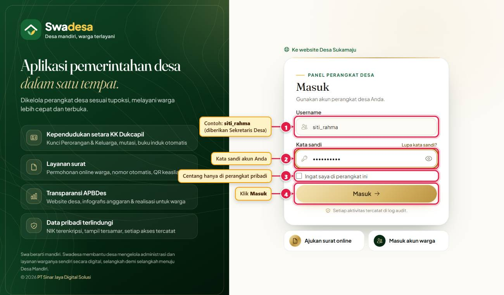
| No | Bagian | Contoh isian |
|---|---|---|
| 1 | Username: nama akun yang diberikan Sekretaris Desa. | siti_rahma |
| 2 | Kata sandi: huruf yang diketik tampil sebagai titik. Klik ikon mata di ujung kanan untuk melihat apa yang sudah Anda ketik. | kata sandi Anda sendiri |
| 3 | Ingat saya di perangkat ini: kalau dicentang, Anda tidak perlu masuk ulang setiap membuka aplikasi. | Centang hanya di laptop/HP pribadi |
| 4 | Tombol Masuk. Kalau berhasil, Anda langsung dibawa ke halaman Beranda. | — |
C.2Lupa kata sandi
Demi keamanan, Swadesa tidak mengirim kata sandi lewat email. Klik tulisan Lupa kata sandi? untuk melihat petunjuknya.
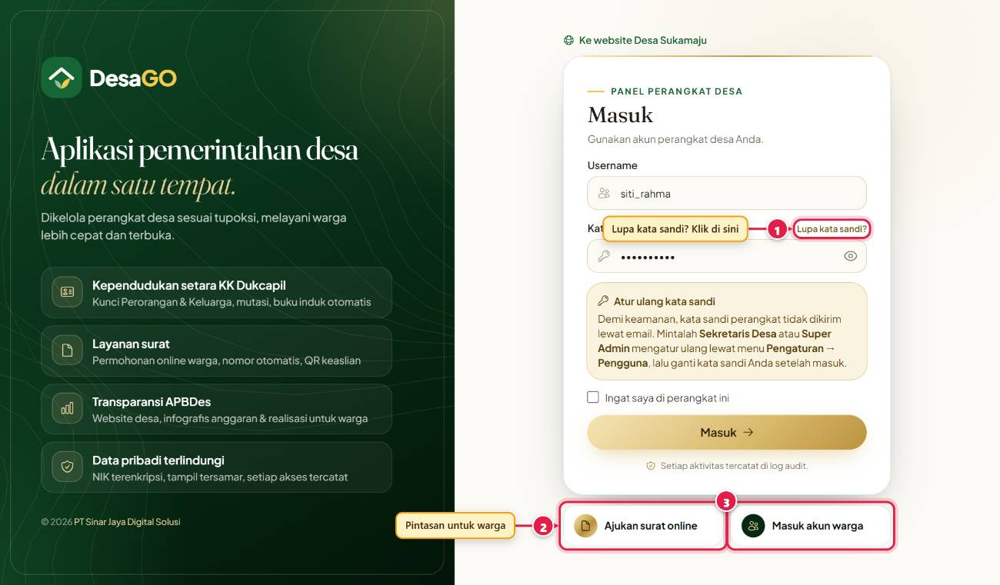
| No | Bagian | Keterangan |
|---|---|---|
| 1 | Lupa kata sandi? | Memunculkan petunjuk: minta Sekretaris Desa atau Super Admin mengatur ulang kata sandi lewat Pengaturan → Perangkat & Pengguna. Setelah itu, segera ganti dengan kata sandi baru milik Anda (lihat C.3). |
| 2 | Ajukan surat online | Pintasan untuk warga yang ingin mengajukan surat tanpa akun (BAB XII). |
| 3 | Masuk akun warga | Pintasan untuk warga yang sudah punya akun layanan warga (BAB XII). |
C.3Mengganti kata sandi
Ganti kata sandi pada saat pertama kali masuk, dan setiap kali Anda curiga kata sandi diketahui orang lain.
- Klik ikon perisai (Keamanan akun) di pojok kiri bawah, di samping nama Anda. Halaman Keamanan Akun akan terbuka.
- Pada kotak Ganti kata sandi, isi ketiga kolom, lalu klik Simpan.
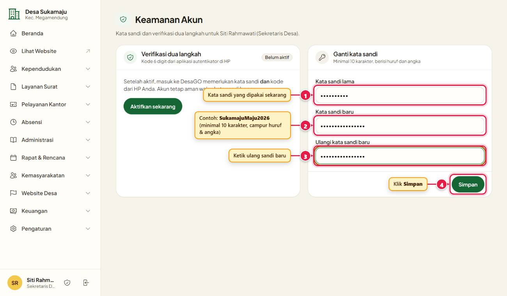
| No | Kolom | Contoh isian |
|---|---|---|
| 1 | Kata sandi lama: kata sandi yang Anda pakai untuk masuk tadi. | kata sandi sekarang |
| 2 | Kata sandi baru: minimal 10 karakter, berisi huruf dan angka. | SukamajuMaju2026 |
| 3 | Ulangi kata sandi baru: ketik ulang persis sama. | SukamajuMaju2026 |
| 4 | Tombol Simpan. | — |
KopiPagiSawah77. Hindari tanggal lahir, nama sendiri, atau 12345678.C.4Verifikasi dua langkah (sangat disarankan)
Verifikasi dua langkah membuat akun tetap aman walaupun kata sandi bocor. Setelah diaktifkan, setiap kali masuk Anda perlu kata sandi dan kode 6 angka yang muncul di aplikasi autentikator di HP Anda. Fitur ini sangat disarankan untuk Kades, Sekdes, dan Kasi Pemerintahan karena ketiganya bisa membuka data lengkap warga.
- Pasang aplikasi Google Authenticator atau Microsoft Authenticator dari Play Store/App Store di HP Anda.
- Di halaman Keamanan Akun, klik Aktifkan sekarang. Kode QR akan muncul.
- Buka aplikasi autentikator, pilih Tambah akun → Pindai kode QR, lalu arahkan kamera HP ke kode QR di layar.
- Aplikasi di HP akan menampilkan 6 angka yang berganti setiap 30 detik. Ketik angka itu ke kolom Kode dari aplikasi, lalu klik Aktifkan.
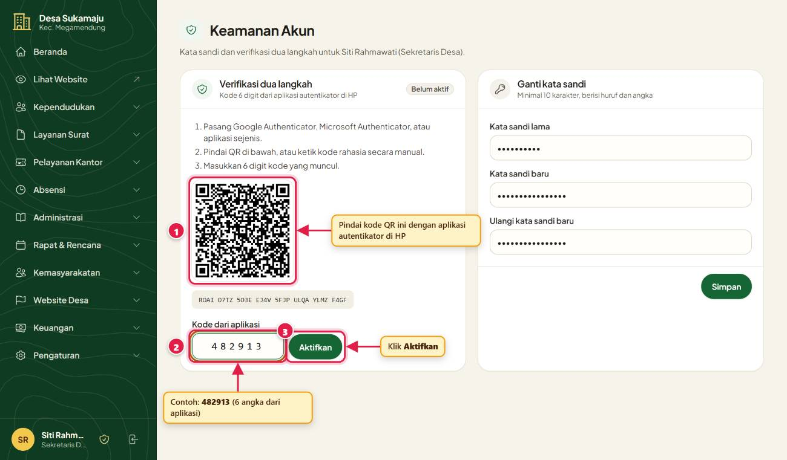
| No | Bagian | Contoh isian |
|---|---|---|
| 1 | Kode QR: dipindai dengan aplikasi autentikator. Kalau kamera tidak bisa, ketik kode huruf di bawahnya secara manual di aplikasi. | — |
| 2 | Kode dari aplikasi: 6 angka yang tampil di aplikasi autentikator saat ini. | 482913 |
| 3 | Tombol Aktifkan. | — |
Mulai sekarang, setelah mengisi kata sandi di halaman masuk, Anda akan diminta mengetik kode 6 angka dari aplikasi tersebut.
C.5Keluar dari Swadesa
Selalu keluar setelah selesai bekerja, terutama di komputer kantor yang dipakai bersama.
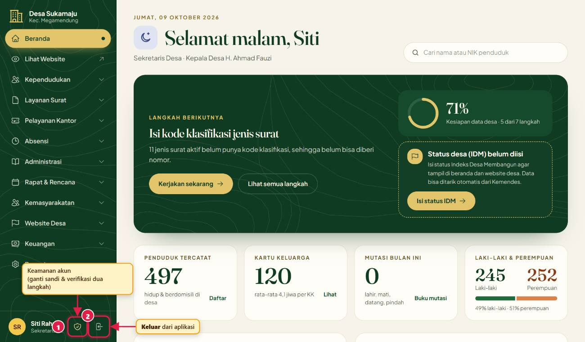
| No | Tombol | Fungsi |
|---|---|---|
| 1 | Ikon perisai | Membuka halaman Keamanan Akun (ganti kata sandi & verifikasi dua langkah). Ikon berwarna kuning artinya verifikasi dua langkah belum aktif. |
| 2 | Ikon pintu keluar | Keluar dari aplikasi. Anda akan kembali ke halaman Masuk. |
D.Tampilan Dasar
D.1Beranda (dasbor)
Halaman pertama setelah masuk adalah Beranda. Beranda menampilkan ringkasan desa dan daftar pekerjaan yang menunggu Anda. Isinya menyesuaikan jabatan, jadi Beranda Kades dan Beranda Operator bisa berbeda.
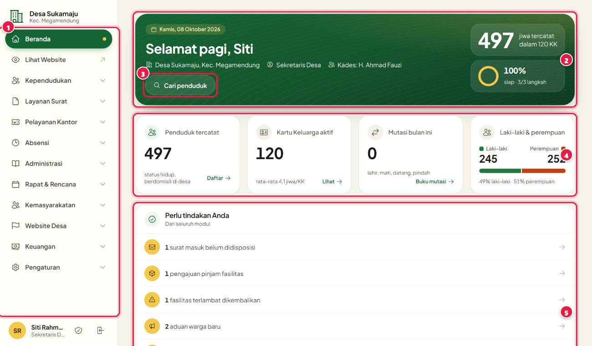
| No | Bagian | Keterangan |
|---|---|---|
| 1 | Menu samping | Semua menu yang boleh Anda buka, dikelompokkan per grup (lihat D.2). |
| 2 | Sapaan | Salam sesuai waktu (pagi, siang, sore, atau malam) dengan ikon matahari atau bulan, tanggal hari ini, jabatan Anda, dan nama Kepala Desa. |
| 3 | Cari penduduk | Ketik nama atau NIK, lalu tekan Enter. Hasilnya langsung tampil di halaman Data Penduduk. |
| 4 | Kartu utama | Langkah berikutnya: langkah persiapan yang belum selesai, lengkap dengan tombol Kerjakan sekarang. Bila persiapan sudah lengkap, bagian ini berganti menjadi ringkasan Hari ini. Di kanan atas tampil persentase kesiapan data desa, dihitung dari langkah persiapan yang menjadi tugas Anda: profil desa, daftar dusun, akun perangkat dan Kepala Desa, data penduduk, pemetaan KK ke dusun, kode klasifikasi surat, lokasi kantor, dan cadangan data pertama. Di kanan bawah tampil status desa (IDM) tahun terakhir. Bila belum diisi, muncul tombol Isi status IDM. |
| 5 | Kartu angka | Jumlah penduduk, Kartu Keluarga, mutasi bulan ini, serta perbandingan laki-laki dan perempuan. Klik Daftar, Lihat, atau Buku mutasi untuk melihat rinciannya. |
| 6 | Perlu tindakan Anda | Pekerjaan yang menunggu, dikelompokkan, misalnya Pelayanan kantor, Rapat & tindak lanjut, dan Surat & disposisi. Kelompok yang mendesak diberi tulisan merah dan ditaruh paling atas. Klik kelompok untuk membuka rinciannya, lalu klik tombol di tiap baris (misalnya Setujui atau Tagih) untuk langsung mengerjakannya. |
| 7 | Alur layanan surat | Jumlah surat di tiap tahap: Verifikasi berkas, Beri nomor, Tanda tangan, dan Terbit bulan ini. Tahap yang menjadi tugas jabatan Anda ditandai Giliran Anda. |
Gulir ke bawah untuk melihat bagian lainnya: Penduduk per dusun, Kesiapan data desa (daftar lengkap langkah persiapan), piramida penduduk, serta ringkasan pendidikan, pekerjaan, dan mutasi terakhir.
D.2Menu samping
Menu di sebelah kiri dikelompokkan menjadi beberapa grup, misalnya Kependudukan, Layanan Surat, dan Keuangan. Klik nama grup untuk membuka daftar submenunya, lalu klik submenu yang dituju. Menu yang sedang dibuka ditandai warna emas.
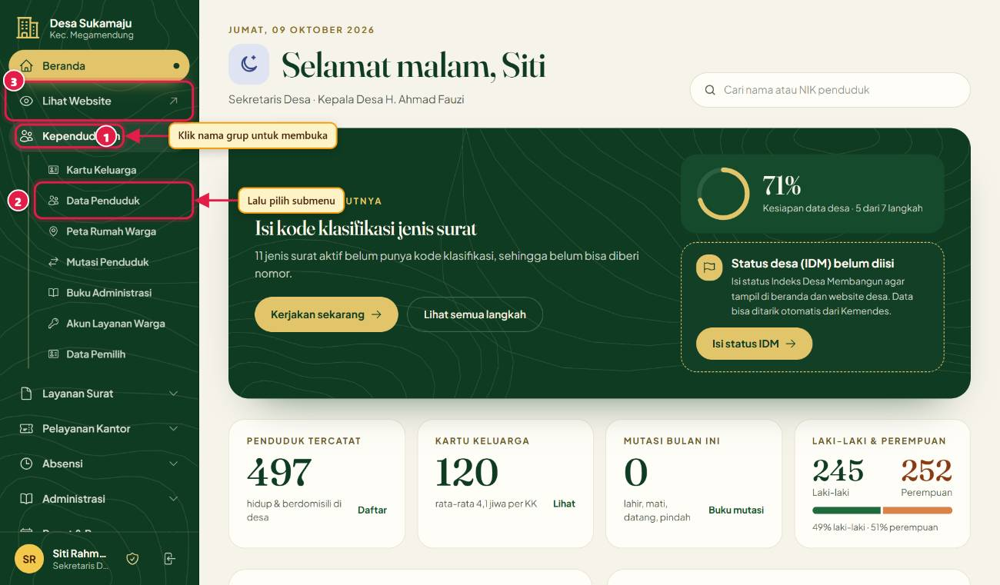
| No | Bagian | Keterangan |
|---|---|---|
| 1 | Nama grup | Klik untuk membuka atau menutup daftar submenu. Hanya satu grup yang terbuka pada satu waktu. |
| 2 | Submenu | Klik untuk membuka halamannya. Contoh: Kependudukan → Data Penduduk. |
| 3 | Lihat Website | Membuka website desa di tab baru, untuk melihat hasil yang dilihat masyarakat. |
D.3Tampilan di HP
Di HP, tampilan Swadesa menyesuaikan layar yang lebih kecil. Menu samping disembunyikan dan diganti menu bawah berisi menu yang paling sering dipakai.
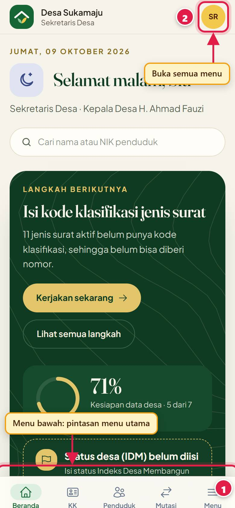
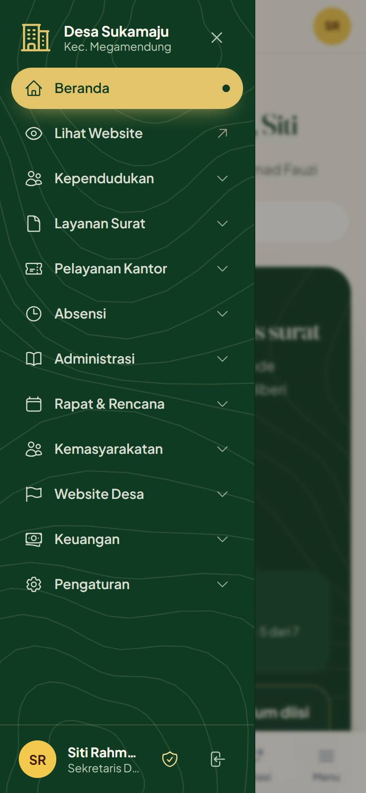
| No | Bagian | Keterangan |
|---|---|---|
| 1 | Menu bawah | Pintasan ke menu utama (isinya menyesuaikan jabatan). Ketuk Menu untuk melihat semua menu. |
| 2 | Lingkaran inisial nama | Membuka menu lengkap seperti di komputer, termasuk tombol Keamanan akun dan Keluar di bagian bawah. Ketuk ✕ untuk menutupnya. |
D.4Memasang Swadesa di layar utama HP
Swadesa bisa dipasang di HP seperti aplikasi biasa, tanpa lewat Play Store. Setelah dipasang, ikon Swadesa muncul di layar utama dan aplikasinya terbuka layar penuh.
- Buka Swadesa di Google Chrome (Android) atau Safari (iPhone).
- Kalau muncul kotak Pasang aplikasi Swadesa di bawah layar, ketuk Pasang. Kalau tidak muncul:
- Android: ketuk menu titik tiga ⋮ di pojok kanan atas, lalu pilih Instal aplikasi atau Tambahkan ke layar utama.
- iPhone: ketuk tombol Bagikan (kotak dengan panah ke atas), lalu pilih Tambah ke Layar Utama.
- Ikon Swadesa akan muncul di layar utama HP. Ketuk ikon itu untuk membuka.
Pengaturan Awal
Sebelum Swadesa dipakai sehari-hari, ada beberapa hal yang perlu diatur sekali di awal: identitas desa, daftar dusun, akun perangkat, dan hak aksesnya. Bab ini juga membahas sambungan ke WhatsApp dan aplikasi lain, cadangan data, serta log audit.
A.Profil Desa & Dusun
Menu: Pengaturan → Profil Desa & Dusun. Data di halaman ini dipakai di kop surat, kop buku administrasi, website desa, dan pemeriksaan NIK warga. Jadi, isilah dengan teliti.
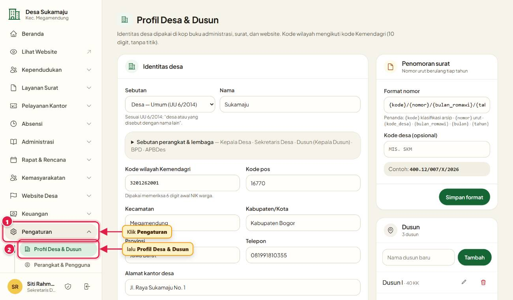
A.1Mengisi identitas desa
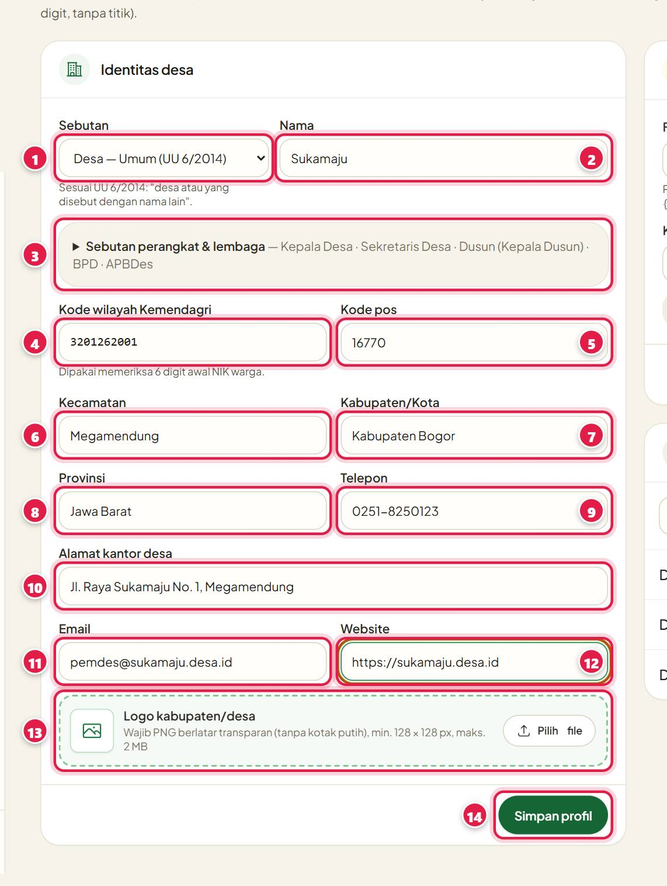
| No | Kolom | Contoh isian |
|---|---|---|
| 1 | Sebutan: sebutan wilayah sesuai daerah Anda. Pilihan yang tersedia: Desa, Kalurahan (DIY), Nagari (Sumbar), Gampong (Aceh), Kampung, Pekon, Tiyuh, Lembang, Negeri, Ohoi, Desa (Bali), dan Kelurahan. Sebutan ini otomatis mengubah istilah di seluruh aplikasi, website, dan surat. | Desa — Umum (UU 6/2014) |
| 2 | Nama: nama desa tanpa kata "Desa". | Sukamaju |
| 3 | Sebutan perangkat & lembaga: klik untuk membuka. Isi hanya kalau daerah Anda memakai istilah lain (lihat Gambar 2.3). | biarkan kosong bila memakai istilah umum |
| 4 | Kode wilayah Kemendagri: 10 digit tanpa titik. Dipakai untuk memeriksa 6 digit awal NIK warga. | 3201262001 |
| 5 | Kode pos | 16770 |
| 6–8 | Kecamatan, Kabupaten/Kota, Provinsi | Megamendung · Kabupaten Bogor · Jawa Barat |
| 9 | Telepon kantor desa | 0251-8250123 |
| 10 | Alamat kantor desa: tampil di kop surat. | Jl. Raya Sukamaju No. 1, Megamendung |
| 11 | Email resmi desa | pemdes@sukamaju.desa.id |
| 12 | Website desa (boleh kosong) | https://sukamaju.desa.id |
| 13 | Logo kabupaten/desa: klik Pilih file, lalu pilih gambar logo. Wajib PNG berlatar transparan, minimal 128 × 128 piksel, maksimal 2 MB. | logo-bogor.png |
| 14 | Tombol Simpan profil | — |
A.2Sebutan perangkat & lembaga
Kalau daerah Anda memakai istilah khusus, misalnya Peratin untuk kepala pekon atau Carik untuk sekretaris, klik baris Sebutan perangkat & lembaga lalu isi kolom yang perlu diganti. Kolom yang dibiarkan kosong otomatis memakai istilah bawaan dari pilihan Sebutan.
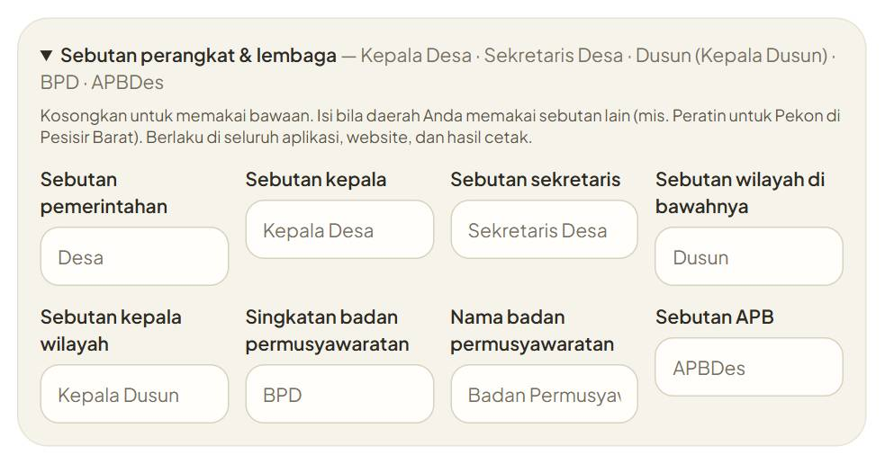
| Kolom | Isi bawaan | Contoh pengganti |
|---|---|---|
| Sebutan pemerintahan | Desa | Pekon |
| Sebutan kepala | Kepala Desa | Peratin |
| Sebutan sekretaris | Sekretaris Desa | Juru Tulis |
| Sebutan wilayah di bawahnya / kepala wilayah | Dusun / Kepala Dusun | Pemangku / Kepala Pemangku |
| Badan permusyawaratan (singkatan & nama) | BPD / Badan Permusyawaratan Desa | LHP / Lembaga Himpun Pemekonan |
| Sebutan APB | APBDes | APBPekon |
A.3Format penomoran surat
Kartu Penomoran surat menentukan bentuk nomor setiap surat keluar. Nomor urut otomatis kembali ke 1 setiap awal tahun.
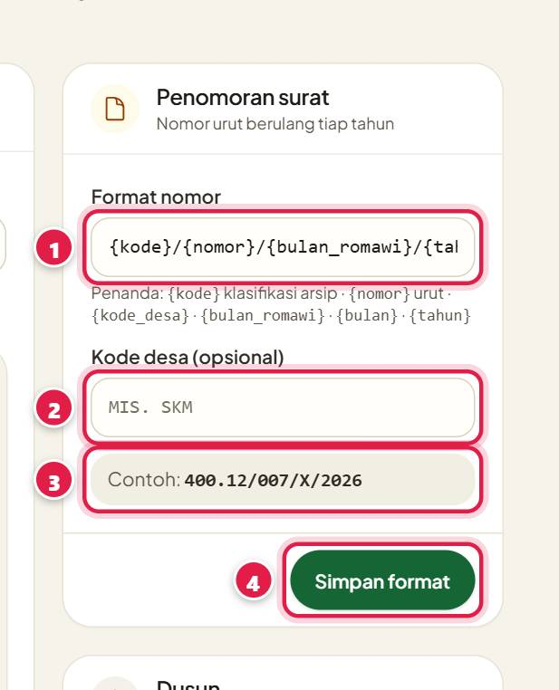
| No | Kolom | Contoh isian |
|---|---|---|
| 1 | Format nomor: susun memakai penanda di bawah ini. Tanda / dan . boleh dipakai sebagai pemisah.
{kode} kode klasifikasi arsip jenis surat · {nomor} nomor urut · {kode_desa} kode desa · {bulan_romawi} bulan angka Romawi · {bulan} bulan angka · {tahun} tahun | {kode}/{nomor}/{bulan_romawi}/{tahun} atau {kode}/{nomor}/{kode_desa}/{tahun} |
| 2 | Kode desa (opsional): singkatan desa untuk penanda {kode_desa}. | SKM |
| 3 | Contoh: pratinjau nomor surat hasil format di atas. | 400.12/007/X/2026 |
| 4 | Tombol Simpan format | — |
A.4Menambah, mengubah, dan menghapus dusun
Daftar dusun dipakai untuk alamat KK, pembagian wilayah kerja Kepala Dusun, dan statistik per wilayah.
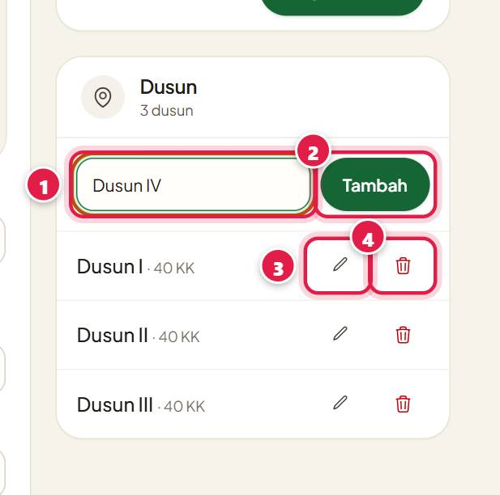
| No | Bagian | Contoh / keterangan |
|---|---|---|
| 1 | Kolom Nama dusun baru | Dusun IV |
| 2 | Tombol Tambah: dusun langsung masuk ke daftar. | — |
| 3 | Ikon pensil: ubah nama dusun, lalu klik Simpan. | Dusun I → Dusun Cikaret |
| 4 | Ikon tempat sampah: hapus dusun. | — |
B.Perangkat & Pengguna
Menu: Pengaturan → Perangkat & Pengguna. Di sini Sekretaris Desa membuatkan akun untuk setiap perangkat. Ingat prinsipnya: satu orang, satu akun. Jangan memakai satu akun bersama-sama.
B.1Daftar akun
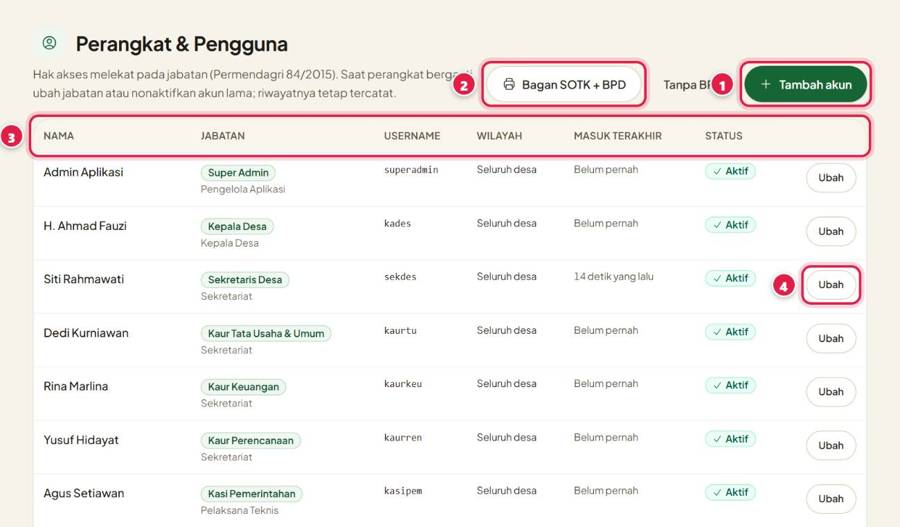
| No | Bagian | Keterangan |
|---|---|---|
| 1 | Tambah akun | Membuat akun perangkat baru (lihat B.2). |
| 2 | Bagan SOTK + BPD / Tanpa BPD | Mencetak bagan struktur organisasi pemerintah desa dalam bentuk PDF, otomatis dari daftar akun ini. Bagan yang sama tampil di website desa. |
| 3 | Kolom tabel | Nama, jabatan, username, wilayah kerja (untuk Kepala Dusun), waktu terakhir masuk, dan status Aktif/Nonaktif. |
| 4 | Ubah | Mengubah data akun, mengatur ulang kata sandi, atau menonaktifkan akun (lihat B.3). |
B.2Membuat akun baru
- Klik Tambah akun. Jendela Tambah akun perangkat akan muncul.
- Isi kolom-kolomnya seperti contoh di bawah, lalu klik Simpan.
- Sampaikan username dan kata sandi awal kepada pemilik akun secara langsung, lalu minta ia segera menggantinya (BAB I, C.3).
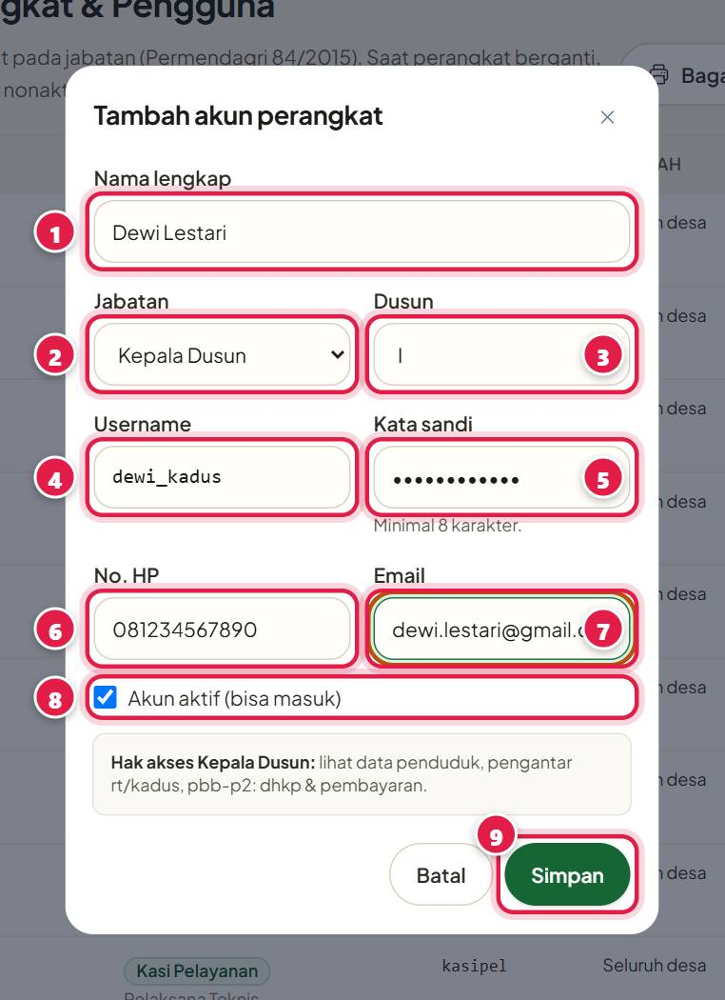
| No | Kolom | Contoh isian |
|---|---|---|
| 1 | Nama lengkap beserta gelar bila ada | Dewi Lestari |
| 2 | Jabatan: menentukan menu yang tampil (BAB I, B.2). Kotak di bawah form menjelaskan hak akses jabatan yang dipilih. | Kepala Dusun |
| 3 | Dusun: muncul khusus untuk jabatan Kepala Dusun, yaitu wilayah kerjanya. Untuk jabatan lain, kolom ini diganti NIPD/NIAP (opsional). | Dusun I (jabatan lain: NIPD 0012/DS/2026) |
| 4 | Username: huruf kecil, angka, tanda - atau _. Tanpa spasi dan titik. Tidak boleh sama dengan akun lain. | dewi_kadus |
| 5 | Kata sandi awal: minimal 10 karakter, berisi huruf dan angka. | Sukamaju2026 |
| 6 | No. HP (opsional) | 081234567890 |
| 7 | Email (opsional) | dewi.lestari@gmail.com |
| 8 | Akun aktif (bisa masuk): biarkan tercentang. | ✔ |
| 9 | Tombol Simpan | — |
namadepan_jabatan: ahmad_kades, siti_sekdes, dewi_kadus. Pola ini mudah diingat dan mudah dikenali di Log Audit.B.3Mengatur ulang kata sandi, pindah jabatan, dan menonaktifkan akun
Klik Ubah pada baris akun yang dimaksud. Jendela Ubah akun akan muncul.
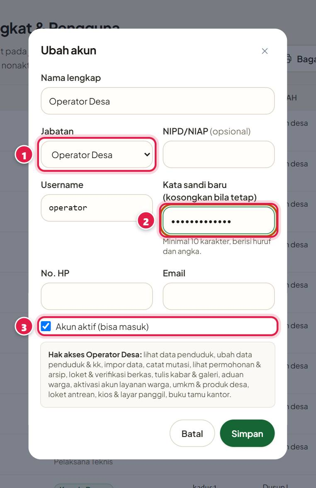
| No | Kolom | Kapan dipakai |
|---|---|---|
| 1 | Jabatan | Perangkat pindah jabatan, misalnya dari Operator menjadi Kasi Pelayanan. Hak aksesnya langsung berubah. |
| 2 | Kata sandi baru (kosongkan bila tetap) | Perangkat lupa kata sandi. Ketik kata sandi sementara, misalnya SandiBaru2026, lalu sampaikan kepada yang bersangkutan. Kalau kolom ini dibiarkan kosong, kata sandi lama tetap berlaku. |
| 3 | Akun aktif (bisa masuk) | Hilangkan centangnya untuk menonaktifkan akun perangkat yang berhenti, cuti panjang, atau diganti. Akun nonaktif tidak bisa masuk, tetapi riwayat kerjanya tetap tersimpan. |
C.Hak Akses Jabatan
Menu: Pengaturan → Hak Akses Jabatan. Halaman ini berisi tabel centang: baris adalah kemampuan (misalnya "Lihat data penduduk" atau "Beri nomor surat"), kolom adalah jabatan. Bawaannya sudah mengikuti tupoksi Permendagri 84/2015, jadi sebagian besar desa tidak perlu mengubah apa pun.
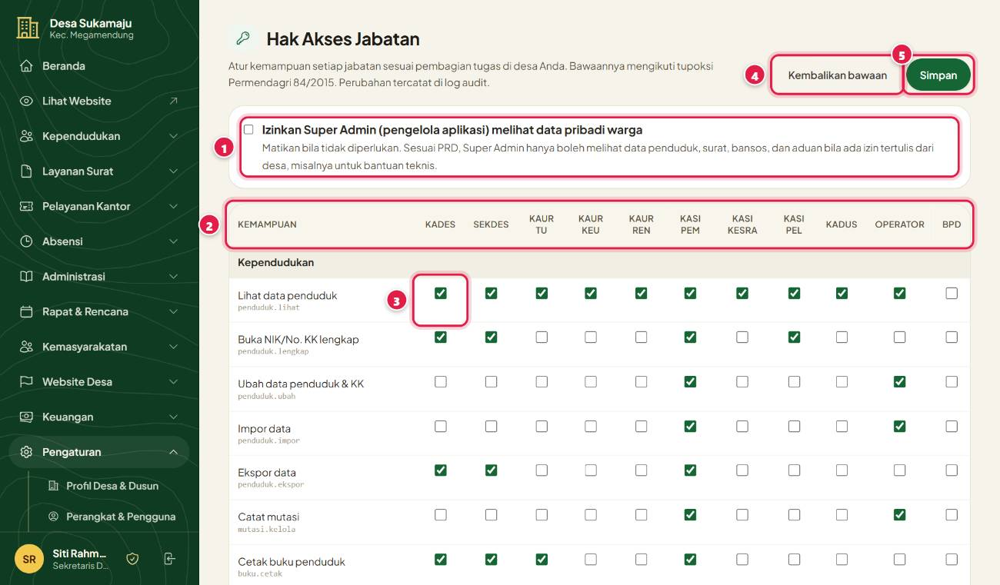
| No | Bagian | Keterangan |
|---|---|---|
| 1 | Izinkan Super Admin melihat data pribadi warga | Bawaannya mati. Sesuai aturan pelindungan data pribadi, pengelola aplikasi hanya boleh melihat data penduduk, surat, bansos, dan aduan bila ada izin tertulis dari desa, misalnya untuk bantuan teknis. Matikan lagi setelah selesai. |
| 2 | Judul kolom | Daftar jabatan: Kades, Sekdes, Kaur TU, Kaur Keu, Kaur Ren, Kasi Pem, Kasi Kesra, Kasi Pel, Kadus, Operator, BPD. |
| 3 | Kotak centang | Centang = jabatan itu boleh melakukan kemampuan tersebut. Contoh: centang "Lihat data penduduk" di kolom BPD bila BPD perlu melihat data penduduk. |
| 4 | Kembalikan bawaan | Mengembalikan semua centang ke pengaturan awal. |
| 5 | Simpan | Menyimpan perubahan. Setiap perubahan tercatat di Log Audit. |
D.Notifikasi & Integrasi
Menu: Pengaturan → Notifikasi & Integrasi. Semua isian di halaman ini opsional. Swadesa tetap berjalan normal tanpa pengaturan ini.
D.1Gateway WhatsApp/SMS
Dengan gateway, Swadesa bisa mengirim pesan otomatis ke HP warga, misalnya kabar status surat, tanggapan aduan, undangan rapat, dan kode OTP. Desa perlu berlangganan ke salah satu penyedia gateway WhatsApp/SMS (bebas memilih). Penyedia akan memberikan alamat API dan token.
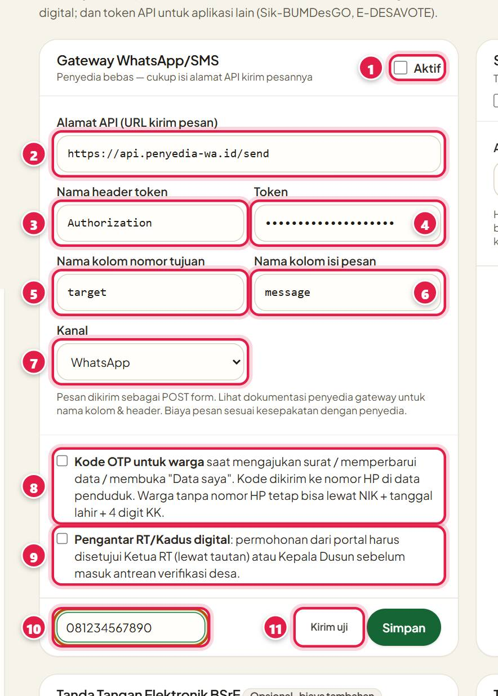
| No | Kolom | Contoh isian |
|---|---|---|
| 1 | Aktif: centang untuk mulai mengirim pesan. | ✔ (setelah uji berhasil) |
| 2 | Alamat API (URL kirim pesan): dari dokumentasi penyedia. | https://api.penyedia-wa.id/send |
| 3 | Nama header token | Authorization |
| 4 | Token: kunci rahasia dari penyedia. | (salin dari dasbor penyedia) |
| 5 | Nama kolom nomor tujuan | target |
| 6 | Nama kolom isi pesan | message |
| 7 | Kanal | WhatsApp atau SMS |
| 8 | Kode OTP untuk warga: warga menerima kode di HP saat mengajukan surat, memperbarui data, atau membuka "Data saya". Warga tanpa nomor HP tetap bisa memakai NIK + tanggal lahir + 4 digit KK. | ✔ bila ingin lebih aman |
| 9 | Pengantar RT/Kadus digital: permohonan dari portal harus disetujui Ketua RT (lewat tautan) atau Kepala Dusun sebelum masuk antrean verifikasi desa. | ✔ bila desa mewajibkan pengantar |
| 10 | No. HP uji | 081234567890 |
| 11 | Kirim uji: kirim pesan percobaan ke nomor di kolom 10. Kalau pesan masuk, klik Simpan. | — |
D.2Sambungan ke SIK-BUMDesGO
Kalau BUMDes di desa Anda memakai aplikasi SIK-BUMDesGO, produk BUMDes bisa ikut tampil di halaman UMKM & Produk website desa.
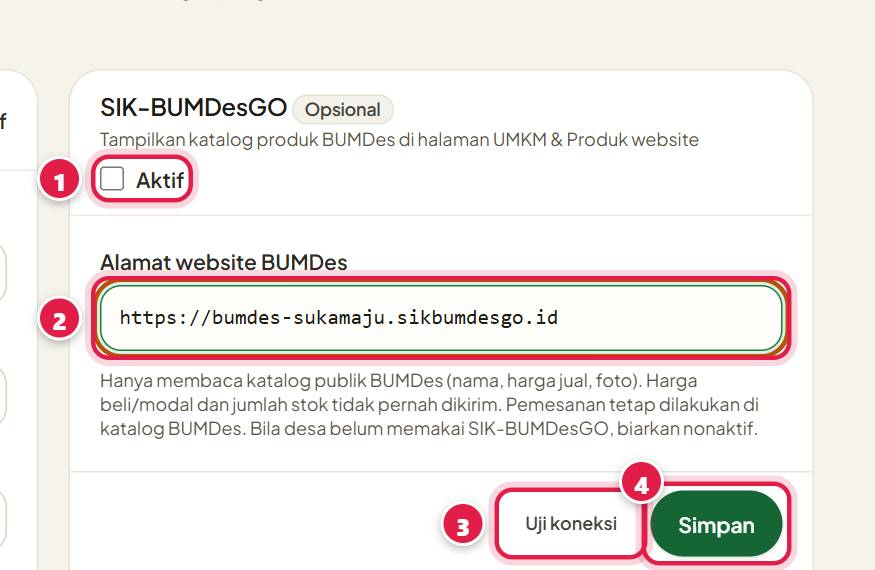
| No | Kolom | Contoh isian |
|---|---|---|
| 1 | Aktif | ✔ |
| 2 | Alamat website BUMDes | https://bumdes-sukamaju.sikbumdesgo.id |
| 3 | Uji koneksi: memeriksa apakah katalog bisa dibaca. | — |
| 4 | Simpan | — |
Swadesa hanya membaca katalog publik BUMDes (nama, harga jual, foto). Harga modal dan stok tidak pernah ikut terkirim.
D.3Tanda Tangan Elektronik (TTE) BSrE
Opsional dan berbiaya tambahan. Aktifkan hanya kalau desa sudah memiliki akses layanan TTE (biasanya lewat Diskominfo kabupaten/kota) dan Kades/Sekdes sudah memiliki sertifikat elektronik BSrE-BSSN. Selama TTE tidak aktif, surat tetap ditandatangani seperti biasa dan dilengkapi QR verifikasi Swadesa.
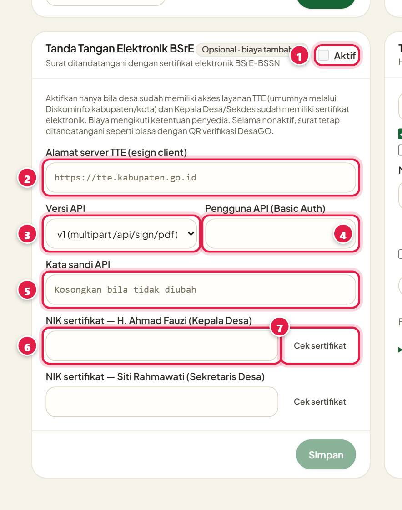
| No | Kolom | Contoh isian |
|---|---|---|
| 1 | Aktif | ✔ setelah sertifikat dicek |
| 2 | Alamat server TTE (esign client): dari Diskominfo. | https://tte.kabupaten.go.id |
| 3 | Versi API: sesuai petunjuk Diskominfo. | v1 atau v2 |
| 4–5 | Pengguna dan Kata sandi API dari Diskominfo | (dari Diskominfo) |
| 6 | NIK sertifikat: NIK pemilik sertifikat untuk Kades dan Sekdes. | 16 digit NIK pejabat |
| 7 | Cek sertifikat: memastikan sertifikat aktif sebelum dipakai. | — |
D.4Token API (E-DESAVOTE dan aplikasi lain)
Token API adalah "kunci" yang mengizinkan aplikasi lain membaca data dari Swadesa. Contohnya E-DESAVOTE untuk menarik daftar pemilih Pilkades, atau SIK-BUMDesGO untuk membaca profil desa. Tidak ada aplikasi lain yang bisa membaca data Swadesa tanpa token.
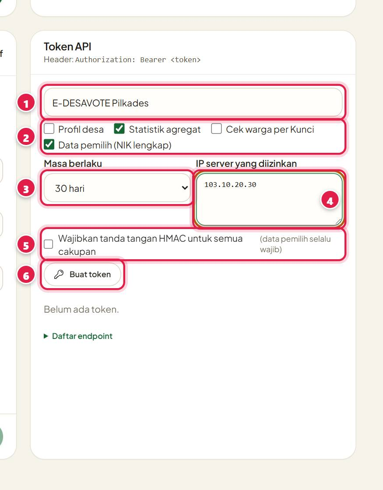
| No | Kolom | Contoh isian |
|---|---|---|
| 1 | Nama aplikasi pemakai token | E-DESAVOTE Pilkades |
| 2 | Cakupan data: centang seperlunya saja. Profil desa · Statistik agregat · Cek warga per Kunci · Data pemilih (NIK lengkap). | E-DESAVOTE: Statistik agregat + Data pemilih |
| 3 | Masa berlaku token | 30 hari (cukup untuk satu tahapan Pilkades) |
| 4 | IP server yang diizinkan: alamat IP server aplikasi tujuan. Kosong = dari mana saja. | 103.10.20.30 |
| 5 | Wajibkan tanda tangan HMAC: pengaman tambahan. Untuk data pemilih, tanda tangan ini selalu wajib. | ✔ disarankan |
| 6 | Buat token | — |
Setelah tombol Buat token diklik, Swadesa menampilkan tiga hal: Alamat Swadesa, Token, dan Rahasia tanda tangan. Salin ketiganya saat itu juga, lalu tempel di halaman pengaturan aplikasi tujuan (di E-DESAVOTE: Pengaturan → Koneksi DesaGO). Token dan rahasia tidak akan ditampilkan lagi.
E.Cadangan Data
Menu: Pengaturan → Cadangan Data. Swadesa membuat cadangan otomatis setiap malam pukul 01.30, menyimpannya selama 30 hari, dan menguncinya dengan enkripsi AES-256. Berkas cadangan (berakhiran .dgo) hanya bisa dipulihkan di aplikasi Swadesa milik desa Anda sendiri.
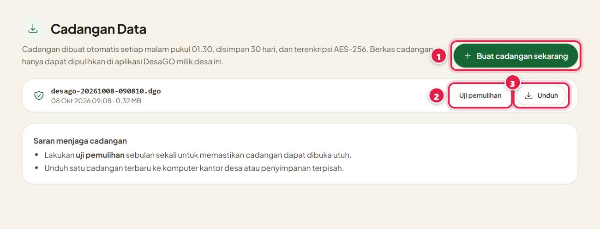
| No | Tombol | Kapan dipakai |
|---|---|---|
| 1 | Buat cadangan sekarang | Sebelum pekerjaan besar, misalnya impor ribuan data penduduk atau penutupan tahun anggaran. |
| 2 | Uji pemulihan | Memeriksa apakah cadangan bisa dibuka utuh. Hasilnya menampilkan jumlah tabel, baris data, dan berkas yang terbaca. Lakukan sebulan sekali. |
| 3 | Unduh | Menyimpan salinan cadangan ke komputer kantor desa atau penyimpanan terpisah (flashdisk/hard disk eksternal). |
F.Log Audit
Menu: Pengaturan → Log Audit (Kades dan Sekdes). Log audit adalah catatan permanen setiap aktivitas: masuk, tambah/ubah/hapus data, membuka NIK lengkap, impor, dan cetak. Catatan ini tidak bisa diubah atau dihapus oleh siapa pun, sesuai amanat UU 27/2022 tentang Pelindungan Data Pribadi.
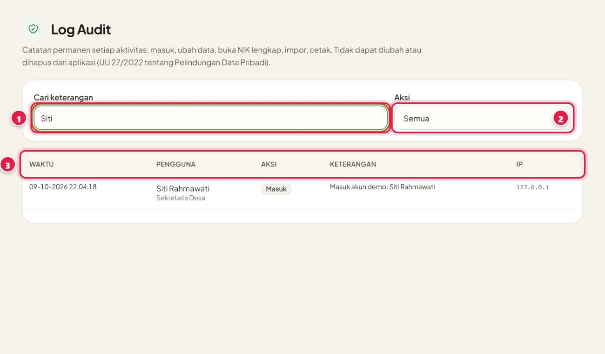
| No | Bagian | Contoh isian |
|---|---|---|
| 1 | Cari keterangan: nama pengguna, NIK, nomor surat, atau kata kunci. | Siti · Cetak · SRT- |
| 2 | Aksi: saring menurut jenis aksi: Tambah, Ubah, Hapus, Masuk, Keluar, Gagal masuk, Buka data lengkap, Impor, Ekspor, Cetak, Mutasi. | Semua |
| 3 | Kolom tabel: waktu, pengguna & jabatan, aksi, keterangan, dan alamat IP. | — |
Kependudukan
Data penduduk adalah "jantung" Swadesa. Surat, bantuan sosial, data pemilih, statistik website, dan buku administrasi semuanya mengambil data dari sini. Bab ini membahas cara mengisi Kartu Keluarga, mencari warga, mencatat kelahiran, kematian, dan perpindahan, mengimpor data dari Excel, sampai menyiapkan data pemilih.
3201••••••••0012). Yang boleh mengubah, mengimpor, dan mencatat mutasi adalah Kasi Pemerintahan dan Operator. Yang boleh membuka NIK lengkap adalah Kades, Sekdes, Kasi Pemerintahan, dan Kasi Pelayanan. Setiap kali NIK lengkap dibuka, tindakan itu tercatat di Log Audit.KEL-, Kunci Perorangan diawali PND-. Kunci dipakai untuk mencari dan menghubungkan data tanpa perlu menyebut NIK, sehingga lebih aman saat dibicarakan atau ditulis.A.Kartu Keluarga
A.1Daftar & pencarian KK
Menu: Kependudukan → Kartu Keluarga.
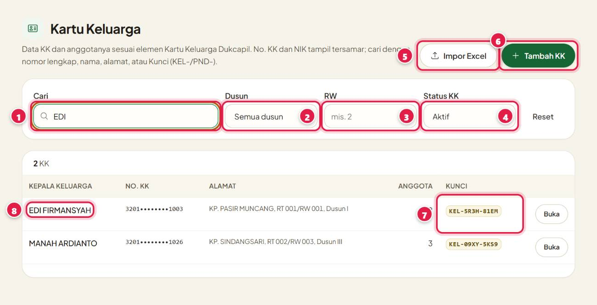
| No | Bagian | Contoh / keterangan |
|---|---|---|
| 1 | Cari: No. KK/NIK 16 digit lengkap, nama, alamat, atau Kunci. | EDI · KP. PASIR MUNCANG · KEL-5R3H-81EM |
| 2 | Dusun: tampilkan KK di satu dusun saja. | Dusun I |
| 3 | RW | 2 |
| 4 | Status KK: Aktif, Nonaktif (KK yang sudah tidak berlaku, misalnya karena seluruh anggota pindah), atau Semua. | Aktif |
| 5 | Impor Excel: memasukkan banyak KK sekaligus (lihat bagian D). | — |
| 6 | Tambah KK: memasukkan satu KK baru (lihat A.2). | — |
| 7 | Kunci Keluarga | KEL-5R3H-81EM |
| 8 | Klik nama kepala keluarga atau tombol Buka untuk melihat detail KK (lihat A.3). | — |
A.2Menambah KK baru
Klik Tambah KK. Isilah persis seperti yang tercetak di lembar Kartu Keluarga dari Dukcapil. Formulir terdiri dari dua bagian: Data Kartu Keluarga (bagian atas lembar KK) dan Anggota keluarga (tabel di lembar KK).
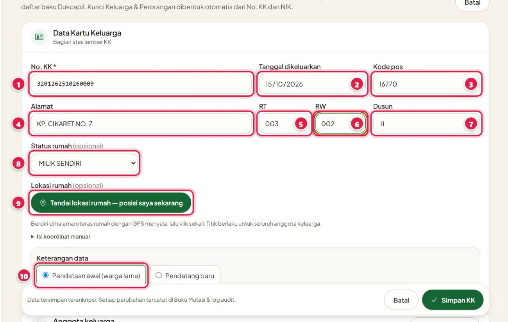
| No | Kolom | Contoh isian |
|---|---|---|
| 1 | No. KK (wajib): 16 digit | 3201262510260009 |
| 2 | Tanggal dikeluarkan: tanggal di pojok kanan bawah lembar KK | 15/10/2026 |
| 3 | Kode pos: otomatis terisi dari profil desa | 16770 |
| 4 | Alamat: nama kampung/jalan dan nomor rumah | KP. CIKARET NO. 7 |
| 5–6 | RT dan RW | 003 / 002 |
| 7 | Dusun | Dusun II |
| 8 | Status rumah (opsional) | Milik sendiri |
| 9 | Tandai lokasi rumah (opsional): lihat A.4 | — |
| 10 | Keterangan data: pilih Pendataan awal untuk warga lama yang baru dimasukkan ke aplikasi, atau Pendatang baru untuk keluarga yang baru pindah masuk ke desa. Pilihan Pendatang baru otomatis tercatat sebagai mutasi "Pendatang" di Buku Mutasi. | Pendataan awal |
Gulir ke bawah ke kotak Anggota keluarga. Satu baris anggota sudah tersedia. Klik barisnya untuk membuka, lalu isi data anggota pertama (biasanya kepala keluarga). Untuk anggota berikutnya, klik Tambah anggota.
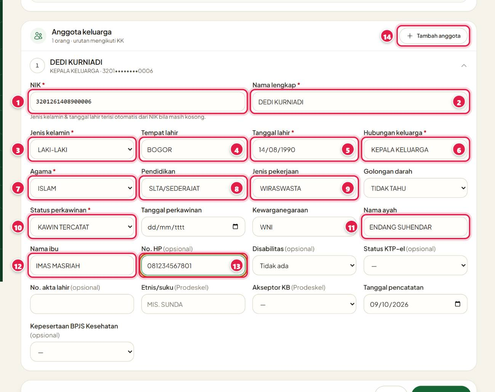
| No | Kolom | Contoh isian |
|---|---|---|
| 1 | NIK (wajib). Setelah NIK diketik dan kursor pindah, jenis kelamin dan tanggal lahir terisi otomatis dari NIK bila masih kosong. | 3201261408900006 |
| 2 | Nama lengkap (wajib), sesuai KK | DEDI KURNIADI |
| 3 | Jenis kelamin (wajib) | LAKI-LAKI |
| 4 | Tempat lahir | BOGOR |
| 5 | Tanggal lahir (wajib) | 14/08/1990 |
| 6 | Hubungan keluarga (wajib): satu KK hanya boleh punya satu Kepala Keluarga. | KEPALA KELUARGA |
| 7 | Agama (wajib) | ISLAM |
| 8 | Pendidikan (pilihan baku Dukcapil) | SLTA/SEDERAJAT |
| 9 | Jenis pekerjaan (pilihan baku Dukcapil) | WIRASWASTA |
| 10 | Status perkawinan (wajib). Bila "Kawin", kolom tanggal perkawinan bisa diisi; bila cerai, kolom tanggal perceraian muncul. | KAWIN TERCATAT |
| 11–12 | Nama ayah dan Nama ibu | ENDANG SUHENDAR / IMAS MASRIAH |
| 13 | No. HP (opsional): dipakai untuk notifikasi WhatsApp/SMS dan kode OTP. | 081234567801 |
| 14 | Tambah anggota: menambah baris anggota berikutnya (istri, anak, dan seterusnya). | — |
Kolom lain bersifat opsional: golongan darah, kewarganegaraan (WNI/WNA beserta paspor/KITAP), disabilitas, status KTP-el, No. akta lahir, etnis/suku dan akseptor KB (untuk Prodeskel), tanggal pencatatan, serta kepesertaan BPJS Kesehatan. Setelah semua anggota terisi, klik Simpan KK di bagian bawah layar.
A.3Detail KK
Klik nama kepala keluarga atau Buka di daftar KK. Halaman detail menampilkan isi KK lengkap, lokasi rumah, daftar anggota, dan riwayat mutasi.
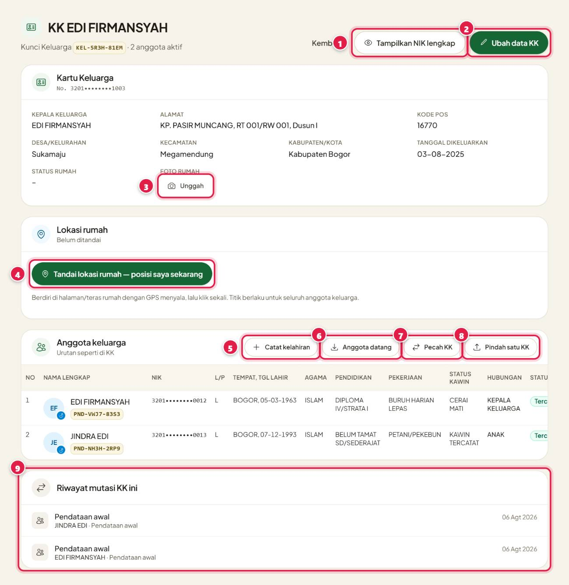
| No | Tombol / bagian | Fungsi |
|---|---|---|
| 1 | Tampilkan NIK lengkap | Membuka No. KK dan NIK tanpa disamarkan. Hanya untuk jabatan tertentu dan selalu tercatat di Log Audit. |
| 2 | Ubah data KK | Memperbaiki salah ketik pada data KK atau anggotanya. |
| 3 | Foto rumah → Unggah | Melampirkan foto rumah (berguna untuk pendataan bansos/RTLH). |
| 4 | Tandai lokasi rumah | Menyimpan titik GPS rumah (lihat A.4). |
| 5 | Catat kelahiran | Menambah bayi baru lahir ke KK ini (lihat C.1). |
| 6 | Anggota datang | Menambah anggota yang pindah masuk ke KK ini (lihat C.4). |
| 7 | Pecah KK | Memisahkan sebagian anggota ke KK baru (lihat C.5). |
| 8 | Pindah satu KK | Seluruh keluarga pindah keluar desa (lihat C.3). |
| 9 | Riwayat mutasi KK ini | Catatan semua kejadian pada KK ini: pendataan awal, kelahiran, kematian, pindah, dan lainnya. |
Di ujung kanan tabel anggota (geser tabel ke kanan) ada kolom Aksi dengan tombol Meninggal dan Pindah untuk masing-masing anggota (lihat C.2 dan C.3).
A.4Menandai lokasi rumah
Lokasi rumah dipakai untuk Peta Rumah Warga (bagian E). Cara paling mudah adalah langsung dari depan rumah warga memakai HP:
- Nyalakan GPS/Lokasi di HP, lalu buka detail KK warga tersebut di Swadesa.
- Berdirilah di halaman atau teras rumahnya, lalu klik Tandai lokasi rumah — posisi saya sekarang. Izinkan browser memakai lokasi bila diminta.
- Titik rumah tersimpan untuk seluruh anggota keluarga, lengkap dengan koordinat dan tingkat ketelitiannya (misalnya "akurasi ±8 m").
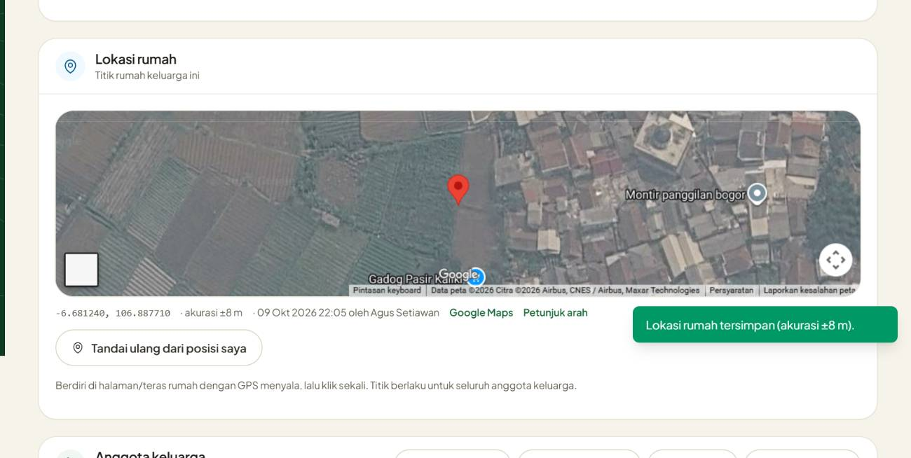
-6.681240, 106.887710. Tombol Tandai ulang dari posisi saya dipakai bila titik sebelumnya keliru.B.Data Penduduk
B.1Daftar & pencarian penduduk
Menu: Kependudukan → Data Penduduk. Berisi seluruh warga dari semua KK.
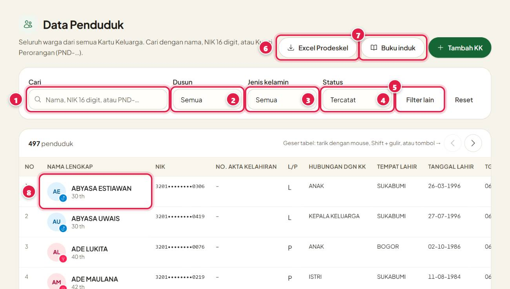
| No | Bagian | Contoh / keterangan |
|---|---|---|
| 1 | Cari: nama, NIK 16 digit, atau Kunci Perorangan | ABYASA · PND-596C-35CV |
| 2–4 | Saring menurut Dusun, Jenis kelamin, dan Status (Tercatat, Meninggal, Pindah keluar, Semua) | Dusun III · Perempuan · Tercatat |
| 5 | Filter lain: agama, pekerjaan, dan rentang umur (lihat gambar berikut) | umur 17 sampai 60 |
| 6 | Excel Prodeskel: unduh data sesuai format Prodeskel Kemendagri | — |
| 7 | Buku induk: pintasan ke Buku Induk Penduduk (bagian F) | — |
| 8 | Klik nama untuk membuka biodata lengkap warga | — |
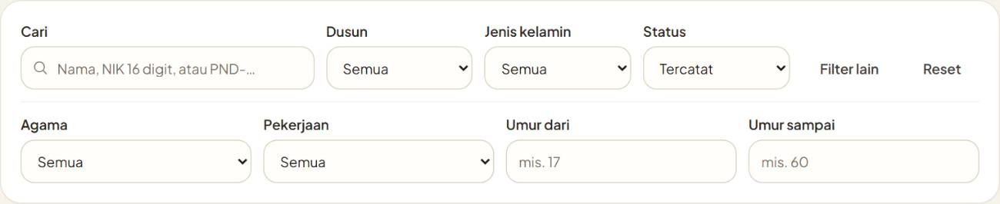
60. Mencari pemuda untuk Karang Taruna: umur 16 sampai 30. Tabel yang lebar bisa digeser dengan menarik tabel memakai mouse, Shift + gulir, atau tombol panah di atas tabel.B.2Biodata penduduk
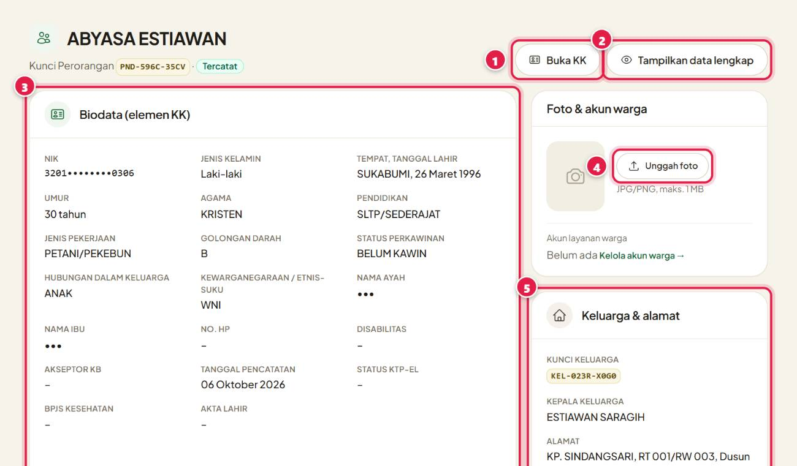
| No | Bagian | Fungsi |
|---|---|---|
| 1 | Buka KK | Melompat ke detail KK warga ini. |
| 2 | Tampilkan data lengkap | Membuka NIK, nama ibu/ayah, dan data lain yang disamarkan. Tercatat di Log Audit. |
| 3 | Biodata (elemen KK) | Seluruh data warga sesuai elemen KK Dukcapil, termasuk umur yang dihitung otomatis. |
| 4 | Unggah foto | Pasfoto warga (JPG/PNG, maksimal 1 MB). Dipakai di kartu akun warga. |
| 5 | Keluarga & alamat | Kunci Keluarga, nama kepala keluarga, dan alamat. |
C.Mutasi Penduduk
Mutasi adalah perubahan karena peristiwa kependudukan: lahir, meninggal, pindah keluar, datang, dan pecah KK. Semua mutasi dicatat dari halaman detail KK (A.3), lalu otomatis masuk ke Buku Mutasi Penduduk.
C.1Kelahiran
- Buka detail KK orang tua bayi, lalu klik Catat kelahiran.
- Form KK terbuka dengan satu baris Anggota baru di bagian bawah. Hubungan keluarga dan nama ayah sudah terisi otomatis.
- Isi data bayi seperti contoh di bawah, lalu klik Simpan KK.
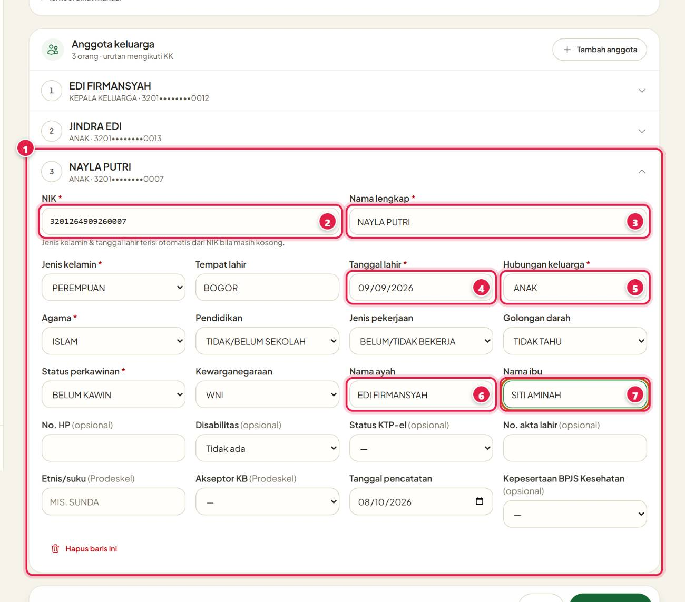
| No | Kolom | Contoh isian |
|---|---|---|
| 1 | Baris anggota baru | — |
| 2 | NIK bayi (dari Dukcapil). Jenis kelamin dan tanggal lahir terisi otomatis. | 3201264909260007 |
| 3 | Nama lengkap | NAYLA PUTRI |
| 4 | Tanggal lahir | 09/09/2026 |
| 5 | Hubungan keluarga | ANAK (atau CUCU) |
| 6–7 | Nama ayah dan Nama ibu | EDI FIRMANSYAH / SITI AMINAH |
C.2Kematian
Di tabel anggota pada detail KK, klik Meninggal pada baris warga yang meninggal dunia. Isi formnya, lalu klik Simpan & catat mutasi.
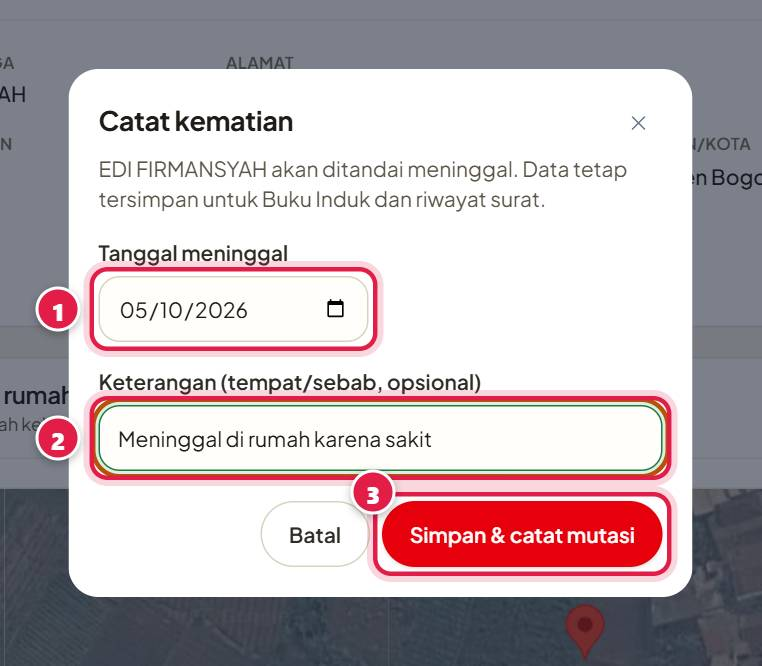
| No | Kolom | Contoh isian |
|---|---|---|
| 1 | Tanggal meninggal | 05/10/2026 |
| 2 | Keterangan tempat/sebab (opsional) | Meninggal di rumah karena sakit |
| 3 | Simpan & catat mutasi | — |
Data warga yang meninggal tidak dihapus. Statusnya berubah menjadi "Meninggal" dan datanya tetap tersimpan untuk Buku Induk serta riwayat surat. Bila yang meninggal adalah kepala keluarga, ubah hubungan keluarga anggota lain lewat Ubah data KK sesuai KK baru dari Dukcapil.
C.3Pindah keluar
Untuk satu orang, klik Pindah pada baris anggota. Untuk seluruh keluarga, klik Pindah satu KK.
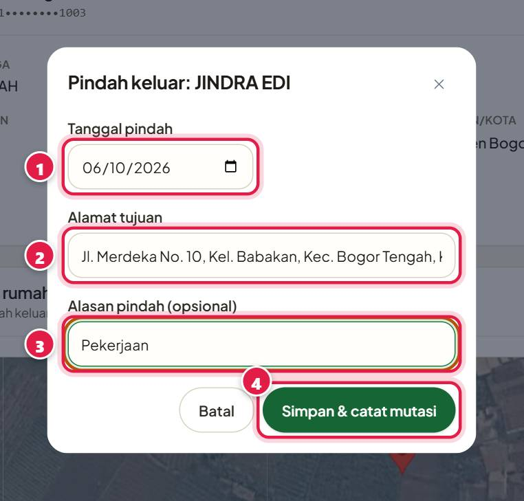
| No | Kolom | Contoh isian |
|---|---|---|
| 1 | Tanggal pindah | 06/10/2026 |
| 2 | Alamat tujuan selengkapnya | Jl. Merdeka No. 10, Kel. Babakan, Kec. Bogor Tengah, Kota Bogor |
| 3 | Alasan pindah (opsional) | Pekerjaan |
| 4 | Simpan & catat mutasi | — |
C.4Pendatang
- Satu orang datang ke KK yang sudah ada (misalnya menantu yang ikut KK mertua): buka detail KK → Anggota datang → isi data anggota baru seperti C.1, termasuk tanggal datang → Simpan KK.
- Satu keluarga baru pindah masuk: Kartu Keluarga → Tambah KK, lalu pilih Keterangan data: Pendatang baru (A.2, kolom 10).
C.5Pecah KK
Dipakai ketika sebagian anggota membuat KK sendiri, misalnya anak yang sudah menikah. Siapkan dulu No. KK baru dari Dukcapil.
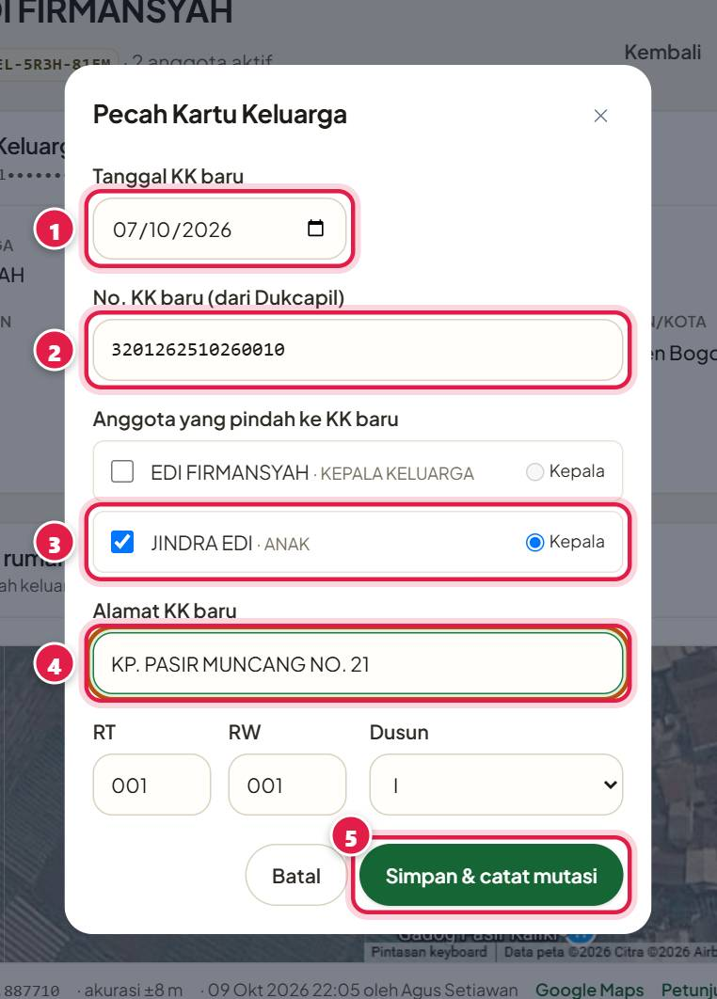
| No | Kolom | Contoh isian |
|---|---|---|
| 1 | Tanggal KK baru | 07/10/2026 |
| 2 | No. KK baru (dari Dukcapil) | 3201262510260010 |
| 3 | Anggota yang pindah ke KK baru: centang anggotanya, lalu pilih salah satu sebagai Kepala KK baru. | ✔ JINDRA EDI → Kepala |
| 4 | Alamat KK baru, beserta RT, RW, dan Dusun di bawahnya | KP. PASIR MUNCANG NO. 21, RT 001/RW 001 |
| 5 | Simpan & catat mutasi | — |
C.6Buku Mutasi Penduduk
Menu: Kependudukan → Mutasi Penduduk. Semua mutasi dari C.1–C.5 terkumpul di sini secara otomatis.
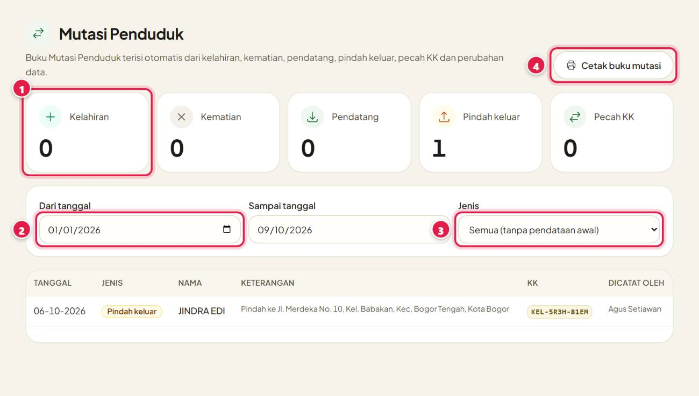
| No | Bagian | Keterangan |
|---|---|---|
| 1 | Kartu jumlah | Jumlah kelahiran, kematian, pendatang, pindah keluar, dan pecah KK pada periode terpilih. Klik kartunya untuk menyaring tabel. |
| 2 | Dari/Sampai tanggal | Periode yang ditampilkan, misalnya 01/01/2026 s.d. 31/12/2026. |
| 3 | Jenis | Saring jenis mutasi. Pilih Pendataan awal untuk melihat data hasil input/impor awal. |
| 4 | Cetak buku mutasi | Mencetak Buku Mutasi Penduduk (PDF) untuk periode terpilih. |
D.Impor Data dari Excel
Menu: Kependudukan → Impor Data. Cara tercepat memasukkan data penduduk satu desa sekaligus, misalnya dari Excel hasil pendataan atau dari Dukcapil. Satu baris Excel = satu orang. Baris dengan NO_KK yang sama otomatis digabung menjadi satu KK.
D.1Menyiapkan file Excel
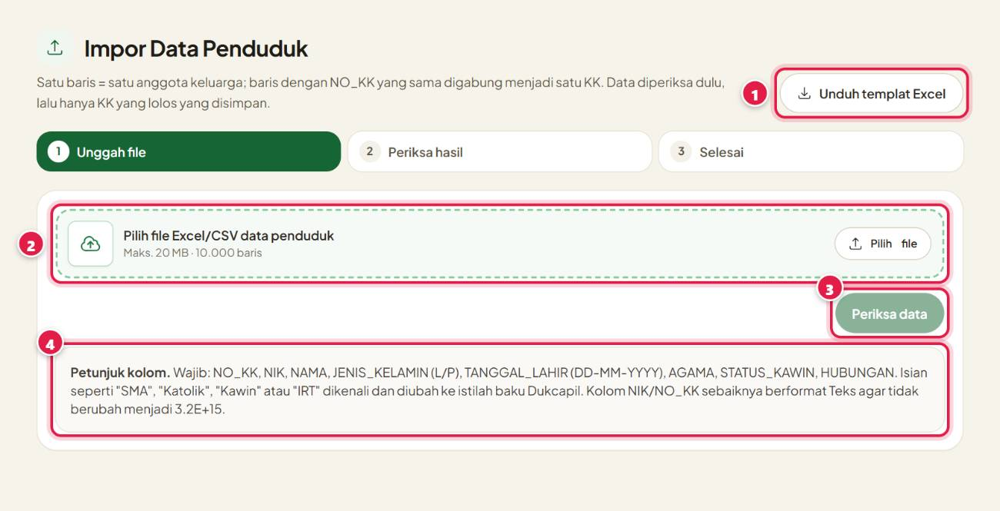
| No | Bagian | Keterangan |
|---|---|---|
| 1 | Unduh templat Excel | Templat kosong dengan judul kolom yang benar. Mulailah dari templat ini. |
| 2 | Pilih file | File Excel (.xlsx/.xls) atau CSV, maksimal 20 MB / 10.000 baris. |
| 3 | Periksa data | Memeriksa isi file tanpa menyimpan apa pun. |
| 4 | Petunjuk kolom | Daftar kolom wajib dan cara pengisian. |
Kolom wajib: NO_KK, NIK, NAMA, JENIS_KELAMIN (L/P), TANGGAL_LAHIR (DD-MM-YYYY), AGAMA, STATUS_KAWIN, HUBUNGAN. Kolom tambahan yang dikenali: TEMPAT_LAHIR, PENDIDIKAN, PEKERJAAN, GOLONGAN_DARAH, TANGGAL_KAWIN, KEWARGANEGARAAN, NAMA_AYAH, NAMA_IBU, ALAMAT, RT, RW, DUSUN, KODE_POS, NO_HP. Contoh isi:
| NO_KK | NIK | NAMA | JENIS_KELAMIN | TANGGAL_LAHIR | AGAMA | STATUS_KAWIN | HUBUNGAN | ALAMAT | RT | RW | DUSUN |
|---|---|---|---|---|---|---|---|---|---|---|---|
| 3201262510260001 | 3201261205850001 | HENDRA GUNAWAN | L | 12-05-1985 | ISLAM | KAWIN | KEPALA KELUARGA | KP. CIBEUREUM | 005 | 002 | Dusun II |
| 3201262510260001 | 3201265708880002 | RINA MARLIANI | P | 17-08-1988 | ISLAM | KAWIN | ISTRI | KP. CIBEUREUM | 005 | 002 | Dusun II |
| 3201262510260001 | 3201260303150003 | FAHRI GUNAWAN | L | 03-03-2015 | ISLAM | BELUM KAWIN | ANAK | KP. CIBEUREUM | 005 | 002 | Dusun II |
D.2Memeriksa dan menyimpan
Setelah memilih file, klik Periksa data. Swadesa menampilkan ringkasan hasil pemeriksaan:
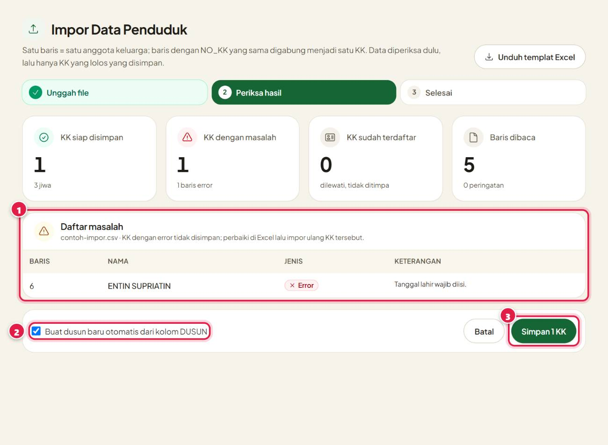
| No | Bagian | Keterangan |
|---|---|---|
| 1 | Daftar masalah | Baris yang bermasalah beserta alasannya. Contoh: baris 6 "ENTIN SUPRIATIN" ditolak karena tanggal lahir 31-02-1975 tidak ada di kalender. KK yang memiliki error tidak disimpan. Perbaiki di Excel, lalu impor ulang KK tersebut saja. |
| 2 | Buat dusun baru otomatis dari kolom DUSUN | Bila dicentang, nama dusun di Excel yang belum terdaftar langsung dibuatkan. |
| 3 | Simpan … KK | Menyimpan semua KK yang lolos pemeriksaan. |
Kartu di bagian atas menunjukkan: KK siap disimpan, KK dengan masalah, KK sudah terdaftar (dilewati, data lama tidak ditimpa), dan baris dibaca beserta jumlah peringatan.
E.Peta Rumah Warga
Menu: Kependudukan → Peta Rumah Warga. Peta menampilkan titik rumah setiap KK yang sudah ditandai (A.4) di atas citra satelit, beserta garis batas desa.
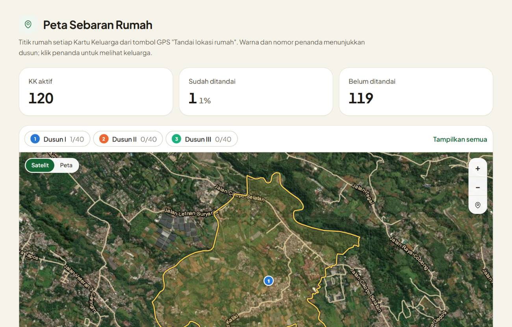
- Kartu di atas menunjukkan jumlah KK aktif, yang sudah ditandai, dan yang belum ditandai.
- Warna dan nomor penanda menunjukkan dusun. Klik nama dusun untuk menyaring, atau Tampilkan semua.
- Klik penanda rumah untuk melihat keluarganya. Pilih Satelit atau Peta untuk mengganti tampilan.
F.Buku Administrasi Penduduk
Menu: Kependudukan → Buku Administrasi. Lima buku wajib sesuai Permendagri 47/2016 tersusun otomatis dari data KK dan mutasi. Tidak perlu lagi menulis ulang di buku tulis.
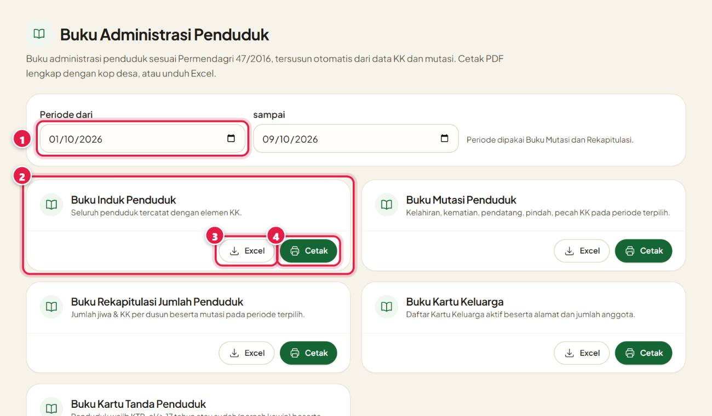
| No | Bagian | Keterangan |
|---|---|---|
| 1 | Periode dari … sampai … | Dipakai Buku Mutasi dan Buku Rekapitulasi. Contoh: 01/01/2026 s.d. 31/12/2026. |
| 2 | Kartu buku | Buku Induk Penduduk · Buku Mutasi Penduduk · Buku Rekapitulasi Jumlah Penduduk · Buku Kartu Keluarga · Buku Kartu Tanda Penduduk (wajib KTP-el). |
| 3 | Excel | Unduh dalam bentuk Excel. |
| 4 | Cetak | Cetak PDF lengkap dengan kop desa. |
G.Akun Layanan Warga
Menu: Kependudukan → Akun Layanan Warga. Dengan akun ini, warga bisa masuk ke portal desa memakai NIK + tanggal lahir + kata sandi untuk melihat data dirinya, riwayat surat, dan mengajukan layanan (BAB XII). Akun diaktifkan petugas setelah memeriksa KTP/KK warga.
G.1Mengaktifkan akun di loket
- Minta KTP/KK warga, lalu cocokkan datanya.
- Ketik nama, NIK, atau Kunci warga di kolom pencarian.
- Klik Aktifkan & cetak surat pada nama yang tepat. Surat aktivasi berisi kata sandi awal langsung tercetak. Serahkan surat itu kepada warga.
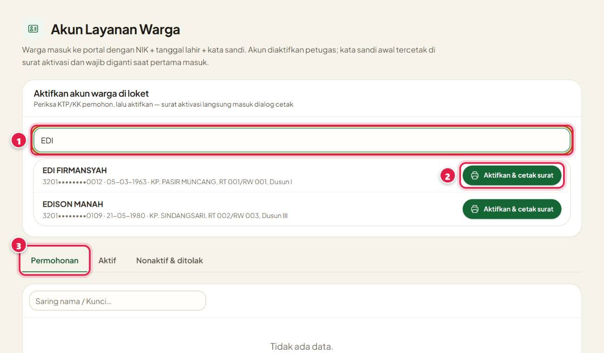
| No | Bagian | Contoh / keterangan |
|---|---|---|
| 1 | Cari nama, NIK, atau Kunci warga | EDI |
| 2 | Aktifkan & cetak surat | — |
| 3 | Tab Permohonan: warga yang meminta akun lewat website. Periksa, lalu aktifkan atau tolak dengan alasan. | — |
G.2Mengelola akun aktif
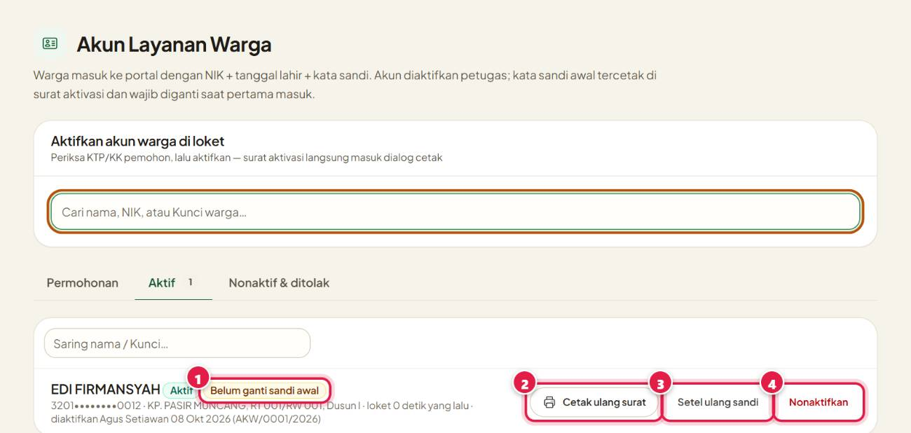
| No | Bagian | Keterangan |
|---|---|---|
| 1 | Label Belum ganti sandi awal | Warga belum pernah masuk. Saat pertama masuk, warga wajib mengganti kata sandi awal. |
| 2 | Cetak ulang surat | Surat aktivasi hilang sebelum dipakai. |
| 3 | Setel ulang sandi | Warga lupa kata sandi. Kata sandi baru tercetak di surat aktivasi baru. |
| 4 | Nonaktifkan | Menutup akun, misalnya karena warga pindah atau akun disalahgunakan. |
H.Usulan Data Warga
Menu: Kependudukan → Usulan Data Warga. Warga bisa mengusulkan perubahan pekerjaan, pendidikan, status perkawinan, agama, golongan darah, dan nomor HP lewat website desa (Formulir warga). Perubahan nama, NIK, atau anggota KK tetap harus melalui Dukcapil. Usulan baru berlaku setelah diperiksa dan diterima Kasi Pemerintahan.
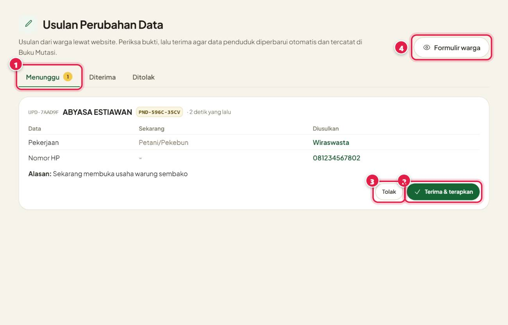
| No | Bagian | Keterangan |
|---|---|---|
| 1 | Tab Menunggu / Diterima / Ditolak | Angka kuning = jumlah usulan yang belum diperiksa. |
| 2 | Terima & terapkan | Data penduduk langsung diperbarui dan perubahannya tercatat di Buku Mutasi. |
| 3 | Tolak | Isi alasan penolakan, misalnya "Bukti ijazah tidak terbaca, mohon unggah ulang". |
| 4 | Formulir warga | Membuka formulir yang dipakai warga (untuk dicoba atau dibagikan tautannya). |
Setiap usulan menampilkan nomor usulan (contoh UPD-55CFC3), nama warga, tabel Sekarang vs Diusulkan, dan alasan warga. Bila warga melampirkan bukti, muncul tombol Lihat bukti.
I.Data Pemilih
Menu: Kependudukan → Data Pemilih (Kades, Sekdes, Kasi Pemerintahan). Halaman ini menyusun daftar pemilih awal untuk Pilkades atau pemilihan lain. Isinya adalah penduduk hidup yang pada hari pemungutan suara sudah berusia 17 tahun atau sudah/pernah kawin.
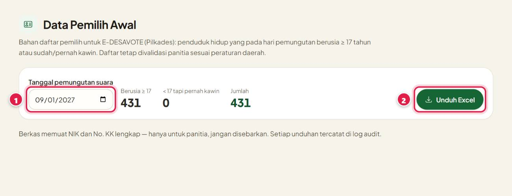
| No | Bagian | Contoh isian |
|---|---|---|
| 1 | Tanggal pemungutan suara: jumlah pemilih dihitung ulang otomatis. | 08/01/2027 |
| 2 | Unduh Excel: berkas berisi NIK dan No. KK lengkap. | — |
Layanan Surat
Layanan surat adalah pekerjaan yang paling sering dilakukan di kantor desa. Dengan Swadesa, surat bisa diajukan warga dari rumah lewat HP atau dibuat langsung di loket. Biodata warga terisi otomatis, nomor surat tidak akan dobel, dan setiap surat yang terbit punya kode QR untuk membuktikan keasliannya. Bab ini juga membahas surat masuk dan survei kepuasan masyarakat.
A.Alur Surat & Pembagian Tugas
Setiap surat melewati tahapan yang sama. Setiap tahap dikerjakan oleh jabatan yang berbeda, sehingga ada pemeriksaan berlapis dan tidak ada satu orang pun yang bisa menerbitkan surat sendirian.
| # | Tahap | Dikerjakan oleh | Status surat setelahnya |
|---|---|---|---|
| 0 | Pengantar (bila diaktifkan) | Ketua RT atau Kepala Dusun | Menunggu pengantar → Diajukan |
| 1 | Pengajuan | Warga lewat portal, atau petugas di loket | Diajukan |
| 2 | Verifikasi berkas | Kasi Pelayanan / Operator | Terverifikasi, atau Perlu perbaikan, atau Ditolak |
| 3 | Beri nomor surat | Sekretaris Desa / Kaur TU | Menunggu tanda tangan |
| 4 | Tanda tangan | Kepala Desa (atau Sekdes atas nama Kepala Desa) | Selesai: surat terbit dan bisa dicetak/diunduh |
SRT-PQ7J2P). Dengan nomor tiket dan tanggal lahir, warga bisa mengecek status suratnya di website desa tanpa perlu bertanya ke kantor (BAB XII). Bila gateway WhatsApp aktif (BAB II, D.1), warga juga dikabari otomatis di setiap tahap.B.Jenis & Templat Surat
Menu: Layanan Surat → Jenis & Templat Surat (Sekretaris Desa). Halaman ini mengatur jenis surat yang dilayani desa, persyaratannya, dan kalimat di dalam surat. Atur sekali di awal, dan perbarui bila ada perubahan aturan.
B.1Daftar jenis surat
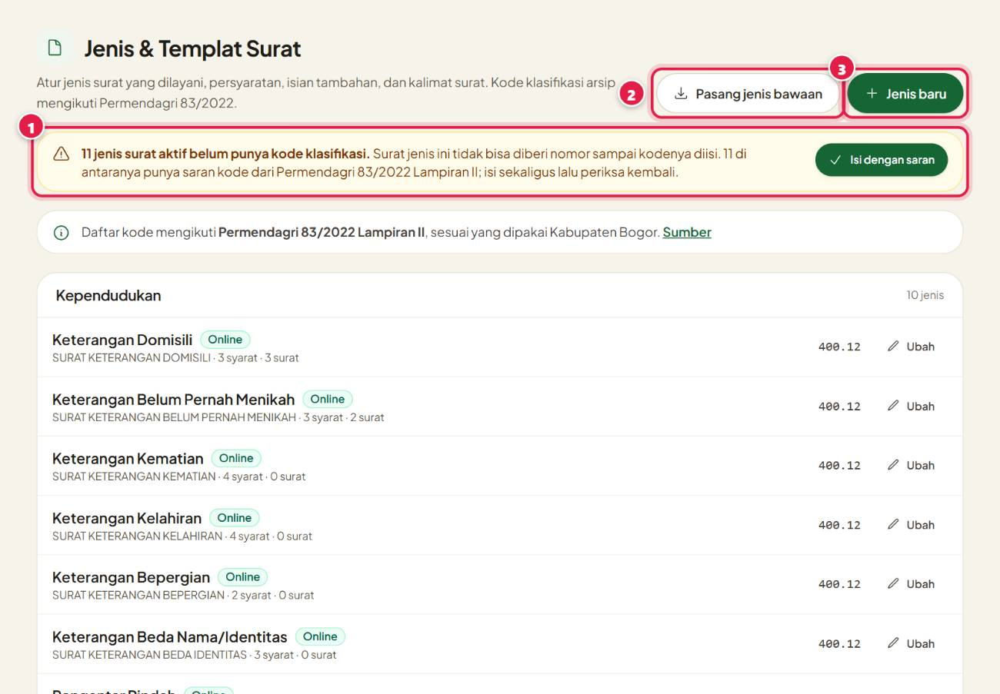
| No | Bagian | Keterangan |
|---|---|---|
| 1 | Peringatan kode klasifikasi | Jenis surat yang belum punya kode klasifikasi arsip tidak bisa diberi nomor. Di daftar, jenis itu bertanda "Kode belum diisi". Lengkapi kodenya sesuai lampiran Permendagri 83/2022 atau Perbup/Perwal setempat. Swadesa sengaja tidak menebak kode. |
| 2 | Pasang jenis bawaan | Memasang 21 jenis surat yang umum dipakai desa (domisili, SKTM, usaha, kelahiran, kematian, pengantar SKCK/nikah/pindah, dan lainnya) lengkap dengan kalimatnya. |
| 3 | Jenis baru | Membuat jenis surat sendiri yang belum ada di daftar. |
Di setiap baris tertera nama surat, label Online (bisa diajukan warga dari website), jumlah persyaratan, jumlah surat yang sudah dibuat, kode klasifikasi, dan tombol Ubah.
B.2Mengubah jenis surat: identitas & persyaratan
Klik Ubah pada salah satu jenis surat. Contoh berikut melengkapi kode klasifikasi untuk Keterangan Tidak Mampu (SKTM).
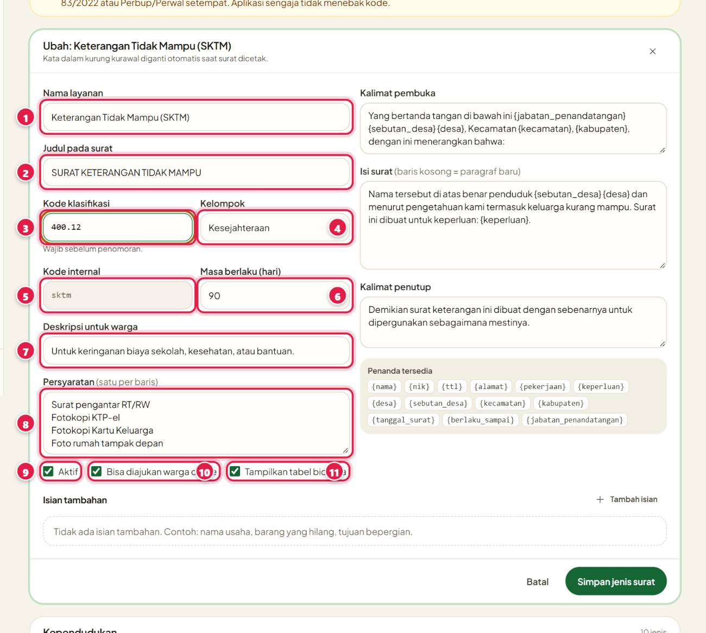
| No | Kolom | Contoh isian |
|---|---|---|
| 1 | Nama layanan: nama yang tampil di menu dan website | Keterangan Tidak Mampu (SKTM) |
| 2 | Judul pada surat: judul besar di bagian atas surat | SURAT KETERANGAN TIDAK MAMPU |
| 3 | Kode klasifikasi: wajib sebelum surat bisa diberi nomor | 400.12 (sesuaikan aturan daerah) |
| 4 | Kelompok: pengelompokan di daftar dan website | Kesejahteraan |
| 5 | Kode internal: dibuat otomatis, tidak bisa diubah | sktm |
| 6 | Masa berlaku (hari): kosongkan bila surat berlaku tanpa batas | 90 |
| 7 | Deskripsi untuk warga: penjelasan singkat di website | Untuk keringanan biaya sekolah, kesehatan, atau bantuan. |
| 8 | Persyaratan: satu syarat per baris | Surat pengantar RT/RW Fotokopi KTP-el Fotokopi Kartu Keluarga Foto rumah tampak depan |
| 9 | Aktif: jenis surat bisa dipakai | ✔ |
| 10 | Bisa diajukan warga online: tampil di portal warga | ✔ |
| 11 | Tampilkan tabel biodata: tabel nama, NIK, TTL, dan seterusnya di dalam surat | ✔ |
B.3Kalimat surat & isian tambahan
Bagian kanan form berisi kalimat surat. Kata di dalam kurung kurawal, misalnya {nama}, adalah penanda yang otomatis diganti data warga saat surat dicetak.
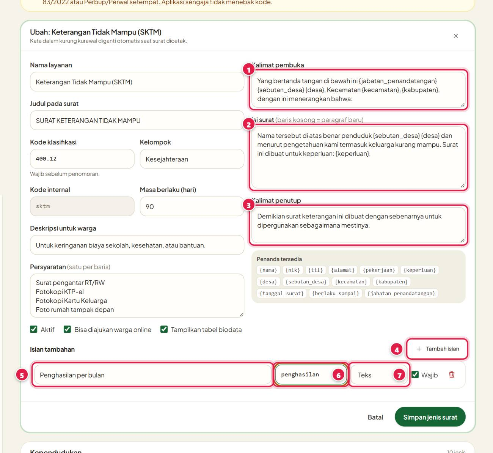
| No | Kolom | Contoh isian |
|---|---|---|
| 1 | Kalimat pembuka | Yang bertanda tangan di bawah ini {jabatan_penandatangan} {sebutan_desa} {desa}, Kecamatan {kecamatan}, {kabupaten}, dengan ini menerangkan bahwa: |
| 2 | Isi surat: baris kosong = paragraf baru | Nama tersebut di atas benar penduduk {sebutan_desa} {desa} dan menurut pengetahuan kami termasuk keluarga kurang mampu dengan penghasilan {penghasilan} per bulan. Surat ini dibuat untuk keperluan: {keperluan}. |
| 3 | Kalimat penutup | Demikian surat keterangan ini dibuat dengan sebenarnya untuk dipergunakan sebagaimana mestinya. |
| 4 | Tambah isian: kolom tambahan yang diisi saat surat dibuat (selain biodata) | — |
| 5 | Label isian: tulisan yang dilihat petugas/warga | Penghasilan per bulan |
| 6 | Kunci isian: huruf kecil tanpa spasi. Dipakai sebagai penanda {penghasilan} di kalimat surat. | penghasilan |
| 7 | Tipe: Teks, Angka, Rupiah (otomatis ditulis "Rp 1.500.000"), atau Tanggal. Centang Wajib bila harus diisi. | Rupiah |
Penanda yang tersedia: {nama} {nik} {ttl} {alamat} {pekerjaan} {keperluan} {desa} {sebutan_desa} {kecamatan} {kabupaten} {tanggal_surat} {berlaku_sampai} {jabatan_penandatangan}, ditambah kunci setiap isian tambahan. Klik Simpan jenis surat setelah selesai.
{sebutan_desa} {desa} alih-alih "Desa Sukamaju". Dengan begitu, kalimat surat otomatis menyesuaikan bila sebutan wilayah Anda Kalurahan, Nagari, Gampong, dan sebagainya.C.Pengantar RT/Kadus
Bila desa mewajibkan pengantar, aktifkan Pengantar RT/Kadus digital di Pengaturan → Notifikasi & Integrasi (BAB II, D.1). Setelah itu, setiap surat yang diajukan warga lewat portal masuk dulu ke daftar Pengantar RT/Kadus milik Kepala Dusun di wilayah warga tersebut.
Menu (Kepala Dusun): Layanan Surat → Pengantar RT/Kadus.
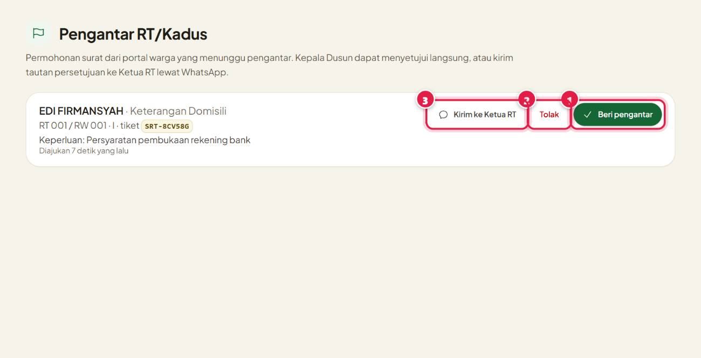
| No | Tombol | Fungsi |
|---|---|---|
| 1 | Beri pengantar | Kepala Dusun menyetujui langsung. Permohonan diteruskan ke petugas pelayanan untuk diverifikasi. |
| 2 | Tolak | Isi alasannya, misalnya "Pemohon bukan warga RT 001, mohon ajukan lewat RT domisili". Warga akan menerima alasan tersebut. |
| 3 | Kirim ke Ketua RT | Membuka WhatsApp dengan pesan berisi tautan persetujuan. Ketua RT cukup membuka tautan itu di HP-nya dan menekan setuju/tolak, tanpa perlu akun Swadesa. |
D.Permohonan & Arsip Surat
Menu: Layanan Surat → Permohonan & Arsip. Halaman ini menjadi "meja kerja" layanan surat: semua permohonan dari portal maupun loket, dikelompokkan menurut tahapnya.
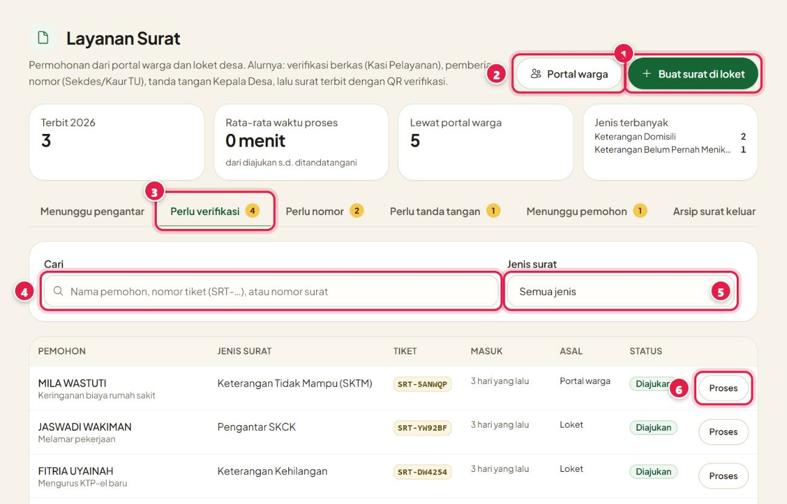
| No | Bagian | Keterangan |
|---|---|---|
| 1 | Buat surat di loket | Untuk warga yang datang langsung ke kantor (lihat E). |
| 2 | Portal warga | Membuka halaman layanan surat online yang dilihat warga. |
| 3 | Tab tahapan | Menunggu pengantar · Perlu verifikasi · Perlu nomor · Perlu tanda tangan · Menunggu pemohon (diminta perbaikan) · Arsip surat keluar. Angka kuning = jumlah surat yang menunggu. |
| 4 | Cari: nama pemohon, nomor tiket, atau nomor surat | MILA · SRT-5ANWQP · 400.12/001/IX/2026 |
| 5 | Jenis surat | Saring satu jenis surat saja. |
| 6 | Proses | Membuka permohonan untuk dikerjakan sesuai tahapnya. |
Di bagian atas ada ringkasan: jumlah surat terbit tahun ini, rata-rata waktu proses (dari diajukan sampai ditandatangani), jumlah permohonan lewat portal, dan jenis surat yang paling banyak diminta.
E.Membuat Surat di Loket
Untuk warga yang datang langsung. Biodata di surat diambil otomatis dari data penduduk, jadi petugas tidak perlu mengetik ulang nama, NIK, atau alamat.
- Klik Buat surat di loket (atau menu Layanan Surat → Buat Surat (Loket)).
- Pilih jenis surat. Daftar persyaratannya langsung muncul di bawahnya. Periksa berkas warga sesuai daftar itu.
- Ketik nama, NIK, atau Kunci warga di kolom Pemohon, lalu klik nama yang tepat.
| No | Kolom | Contoh isian |
|---|---|---|
| 1 | Jenis surat | Keterangan Usaha |
| 2 | Pemohon: nama, NIK 16 digit, atau Kunci PND- | ABYASA |
| 3 | Hasil pencarian: cocokkan dengan KTP warga sebelum diklik | — |
- Isi bagian Isi permohonan, centang Berkas persyaratan sudah saya periksa dan lengkap, lalu klik Simpan permohonan.
| No | Kolom | Contoh isian |
|---|---|---|
| 1 | Ganti: bila salah memilih pemohon | — |
| 2 | Keperluan: akan tertulis di surat | Pengajuan pinjaman KUR |
| 3 | Isian tambahan sesuai jenis surat (untuk Keterangan Usaha: nama, jenis, alamat, dan tahun mulai usaha) | Warung Sembako Berkah · Perdagangan eceran sembako · KP. SINDANGSARI RT 001/RW 003 · Maret 2019 |
| 4 | No. HP/WhatsApp pemohon (opsional): untuk kabar saat surat terbit | 081234567890 |
| 5 | Berkas persyaratan sudah saya periksa dan lengkap | ✔ |
| 6 | Simpan permohonan: surat langsung masuk tahap menunggu nomor dari Sekdes, lalu tanda tangan Kepala Desa. | — |
F.Verifikasi Berkas
Untuk permohonan dari portal warga (tab Perlu verifikasi). Klik Proses, periksa lampiran dan data pemohon, lalu ambil keputusan.
| No | Bagian | Keterangan |
|---|---|---|
| 1 | Penunjuk tahap | Verifikasi berkas → Nomor surat → Tanda tangan → Terbit. Tahap aktif berwarna hijau tua. |
| 2 | Kotak Verifikasi berkas | Daftar persyaratan sebagai pengingat. Lampiran kiriman warga ada di kotak Lampiran di sebelah kanan. |
| 3 | Catatan untuk pemohon: wajib diisi bila memilih perbaikan/tolak | Foto KK kurang jelas, mohon unggah ulang yang terang |
| 4 | Berkas lengkap | Lanjut ke tahap pemberian nomor. |
| 5 | Minta perbaikan | Permohonan dikembalikan ke warga (tab Menunggu pemohon) untuk melengkapi berkas. |
| 6 | Tolak | Permohonan tidak bisa diproses, misalnya warga tidak memenuhi syarat. |
Di bawahnya ada Isi surat (pratinjau kalimat surat dengan biodata asli), kotak Pemohon (klik Profil untuk membuka biodata), dan Riwayat (siapa mengerjakan apa dan kapan). Tombol Pratinjau draf di kanan atas menampilkan surat dalam bentuk PDF sebelum diberi nomor.
G.Memberi Nomor Surat
Sekretaris Desa atau Kaur TU membuka tab Perlu nomor, lalu klik Proses.
| No | Bagian | Contoh / keterangan |
|---|---|---|
| 1 | Kotak Beri nomor surat | Menunjukkan bahwa nomor urut berlaku per tahun dan kode klasifikasi yang dipakai (contoh 400.12). |
| 2 | Tanggal surat: tanggal yang tercetak di surat, biasanya hari ini | 08/10/2026 |
| 3 | Beri nomor: nomor dibuat otomatis sesuai format (BAB II, A.3), misalnya 400.12/005/X/2026 | — |
H.Tanda Tangan Kepala Desa
Kepala Desa membuka tab Perlu tanda tangan (atau dari kotak Perlu tindakan Anda di Beranda), lalu klik Proses. Periksa isi surat, lalu konfirmasi dengan kata sandi.
| No | Bagian | Keterangan |
|---|---|---|
| 1 | Kotak Tanda tangan Kepala Desa | Menampilkan nomor surat yang akan ditandatangani. |
| 2 | Kata sandi Anda | Kata sandi akun Kepala Desa sendiri, sebagai bukti bahwa yang menandatangani benar-benar Kepala Desa. |
| 3 | Tanda tangani & terbitkan | Surat terbit, kode QR verifikasi terpasang, dan pemohon dikabari bila gateway aktif. |
| 4 | Isi surat | Baca ulang sebelum menandatangani. Untuk melihat tampilan cetaknya, klik Pratinjau draf. |
I.Surat Terbit, Cetak & Verifikasi QR
| No | Tombol / bagian | Fungsi |
|---|---|---|
| 1 | Surat terbit | Nomor surat, penandatangan, waktu tanda tangan, dan masa berlaku. |
| 2 | Kabari via WhatsApp | Membuka WhatsApp berisi pesan bahwa surat sudah bisa diambil/diunduh. |
| 3 | Halaman verifikasi | Halaman yang terbuka saat kode QR di surat dipindai (lihat gambar berikut). |
| 4 | Lihat surat | Membuka PDF surat di tab baru. |
| 5 | Cetak surat | Langsung membuka dialog cetak printer. Surat dicetak lengkap dengan kop desa dan kode QR. |
Siapa pun (bank, sekolah, kepolisian) bisa memeriksa keaslian surat dengan memindai kode QR di surat memakai kamera HP. Halaman berikut akan terbuka:
Nama pemohon sengaja disamarkan (contoh CE***** WA*****) supaya data pribadi tetap terlindungi. Pemeriksa cukup mencocokkan nomor, tanggal, dan nama dengan surat yang dipegang. Bila berbeda, surat tersebut patut diduga palsu.
J.Surat Masuk & Disposisi
Menu: Layanan Surat → Surat Masuk & Disposisi. Surat dari instansi lain (kecamatan, dinas, dan sebagainya) dicatat di sini, lalu didisposisikan ke Kaur/Kasi yang bertugas. Setiap surat masuk otomatis tercatat di Buku Agenda.
J.1Mencatat surat masuk
Klik Catat surat masuk (Kades, Sekdes, Kaur TU), isi formnya, lalu klik Catat & beri nomor agenda.
| No | Kolom | Contoh isian |
|---|---|---|
| 1 | Tanggal diterima | 08/10/2026 |
| 2 | Nomor surat (dari pengirim) | 005/412/Kec-Mgd/X/2026 |
| 3 | Tanggal surat | 06/10/2026 |
| 4 | Pengirim | Camat Megamendung |
| 5 | Sifat | Segera |
| 6 | Perihal | Undangan rapat koordinasi persiapan Musrenbang Kecamatan |
| 7 | Pindaian surat (opsional): foto/scan surat, PDF atau JPG, maksimal 10 MB | undangan-musrenbang.pdf |
| 8 | Catat & beri nomor agenda | — |
J.2Daftar & disposisi
| No | Bagian | Keterangan |
|---|---|---|
| 1 | Catat surat masuk | Lihat J.1. |
| 2 | Buku Agenda | Mencetak Buku Agenda surat masuk (PDF/Excel). |
| 3 | Tab | Untuk saya (disposisi yang ditujukan kepada Anda) · Belum didisposisi · Didisposisi · Selesai · Semua. |
| 4 | Disposisi | Meneruskan surat ke perangkat yang bertugas (lihat gambar berikut). |
| No | Kolom | Contoh isian |
|---|---|---|
| 1 | Diteruskan kepada | Kaur Perencanaan |
| 2 | Instruksi | Hadiri dan siapkan usulan kegiatan prioritas dusun |
| 3 | Batas waktu (opsional) | 14/10/2026 |
Klik Kirim disposisi. Perangkat penerima melihat surat itu di tab Untuk saya dan di kotak Perlu tindakan Anda pada Beranda. Setelah dikerjakan, penerima menulis tindak lanjut, lalu menandai surat Selesai.
K.Survei Kepuasan Masyarakat (SKM)
Menu: Layanan Surat → Survei Kepuasan (SKM). Penyelenggara layanan publik wajib melaksanakan SKM minimal sekali setahun (Permenpan-RB 14/2017). Swadesa menyediakan survei 9 unsur yang diisi warga setelah suratnya terbit atau lewat website, lalu menghitung Indeks Kepuasan Masyarakat (IKM) secara otomatis.
| No | Bagian | Keterangan |
|---|---|---|
| 1 | Laporan SKM | Mencetak laporan SKM (PDF) siap lapor. |
| 2 | Halaman publik | Halaman survei untuk warga. Bagikan tautannya atau cetak poster QR-nya. |
| 3 | Tahun & Periode | Setahun, per semester, atau per triwulan. |
| 4 | Nilai per unsur | U1 Persyaratan sampai U9 Sarana dan prasarana, lengkap dengan NRR, konversi, dan mutu (A–D). |
Pelayanan Kantor
Tiga alat untuk membuat kantor desa lebih tertib dan ramah: antrean loket dengan kios ambil nomor, layar TV, dan suara panggilan; buku tamu digital lewat kode QR; serta peminjaman fasilitas desa yang jadwalnya tidak bisa bentrok.
A.Antrean Loket
Warga mendapat nomor antrean dengan tiga cara: dari HP lewat website desa, dari kios (tablet/komputer layar sentuh) di kantor, atau diambilkan petugas. Petugas memanggil dari komputer loket. Nomor yang dipanggil tampil di layar TV ruang tunggu dan disuarakan, contohnya "Nomor antrean A, nol nol satu, silakan menuju loket satu".
A.1Menyiapkan antrean (sekali di awal)
Menu: Pelayanan Kantor → Loket Antrean, lalu buka tab Pengaturan & perangkat.
| No | Kolom | Contoh isian |
|---|---|---|
| 1 | Jenis layanan: setiap layanan punya huruf sendiri (A, B, C, …). Hilangkan centang Aktif untuk menyembunyikan layanan. | A Surat & administrasi kependudukan B Pengaduan & konsultasi C Layanan umum lainnya |
| 2 | Tambah layanan | D Pembayaran PBB |
| 3 | Jumlah loket yang melayani | 2 |
| 4 | Perkiraan menit/orang: dipakai untuk menaksir waktu tunggu sebelum ada data hari ini | 7 |
| 5 | Batas nomor/layanan/hari | 300 |
| 6 | Ambil nomor dari HP: warga bisa mengambil nomor lewat website saat jam kerja kantor | ✔ |
| 7 | Cetak tiket otomatis di kios (perlu printer struk 58/80 mm) | ✔ bila punya printer struk |
| 8 | Suarakan panggilan: bel + kalimat panggilan | ✔ |
| 9 | Dibunyikan di: Otomatis (layar TV bila menyala, selain itu komputer loket) · Layar TV saja · Komputer loket saja · Layar TV dan komputer loket | Otomatis |
| 10 | Jenis suara (Otomatis/Perempuan/Laki-laki), Kecepatan (Lambat–Cepat), dan Ucapan (Sekali/Diulang 2×). Klik Dengarkan di komputer ini untuk mencoba. | Otomatis · Agak lambat · Sekali |
Klik Simpan pengaturan. Suara memakai suara Bahasa Indonesia yang terpasang di perangkat (Windows: Microsoft Andika; Edge: Gadis/Ardi; Chrome: Google Bahasa Indonesia).
Di bawahnya ada kotak Perangkat kantor berisi dua tautan khusus yang dibuka tanpa login:
| No | Bagian | Keterangan |
|---|---|---|
| 1 | Kios ambil nomor & Layar TV ruang tunggu | Salin tautan dengan tombol di sebelahnya, lalu buka di tablet/PC kios dan di komputer yang tersambung ke TV. Simpan tautan ini hanya di perangkat kantor. |
| 2 | Ganti tautan | Membuat tautan baru bila tautan lama tersebar ke luar kantor. Tautan lama langsung tidak berlaku. |
--kiosk --autoplay-policy=no-user-gesture-required. Untuk cetak tiket kios tanpa jendela dialog, tambahkan --kiosk-printing. Bila perlu, minta bantuan tim teknis SJDS untuk memasangnya.A.2Warga mengambil nomor
Lewat kios di kantor. Warga menyentuh layanan yang dibutuhkan, lalu nomor antrean muncul (dan tercetak bila printer struk aktif). Tiket berisi kode QR yang bisa dipindai warga untuk memantau antrean dari HP.
Lewat HP. Warga membuka menu Layanan → Antrean kantor di website desa, atau memindai poster QR antrean di kantor.
| No | Bagian | Keterangan |
|---|---|---|
| 1 | Sedang dipanggil | Nomor yang sedang dilayani di setiap loket, diperbarui otomatis. |
| 2 | Ambil nomor antrean | Klik Ambil pada layanan yang dibutuhkan. Jumlah orang yang sedang menunggu tertera di bawah nama layanan. |
| 3 | Punya kode tiket? | Ketik kode 10 huruf/angka dari tiket kios untuk memantau giliran. |
Tiket menampilkan nomor, jumlah orang di depan, dan perkiraan waktu tunggu. Warga cukup membiarkan halaman ini terbuka: HP akan bergetar saat nomornya dipanggil, jadi warga bisa menunggu di luar atau datang mendekati gilirannya. Tombol Batalkan nomor dipakai bila warga tidak jadi datang.
A.3Memanggil di loket
Menu: Pelayanan Kantor → Loket Antrean, tab Loket.
| No | Bagian | Keterangan |
|---|---|---|
| 1 | Buka kios | Membuka halaman kios di tab baru. |
| 2 | Layar TV | Membuka layar ruang tunggu di tab baru. |
| 3 | Saya di | Pilih loket tempat Anda bertugas, misalnya Loket 1. |
| 4 | Melayani | Centang layanan yang Anda tangani. Contoh: Loket 1 hanya A, Loket 2 B dan C. Bila tidak dicentang, loket melayani semua layanan. |
| 5 | Panggil berikutnya | Memanggil nomor urut berikutnya (nomornya tertera di tombol). |
| 6 | Tes suara | Mencoba suara panggilan di komputer loket. |
| 7 | Menunggu | Daftar nomor yang belum dipanggil, urut kedatangan, beserta asal nomor (Dari HP, Kios kantor, Petugas loket). Tombol Batal untuk membatalkan nomor. |
| 8 | Ambilkan nomor | Untuk warga yang tidak memakai kios atau HP, misalnya lansia. Klik layanannya, lalu sebutkan nomornya kepada warga. |
Di bagian atas ada ringkasan hari ini: jumlah nomor, yang menunggu, yang selesai dilayani, rata-rata waktu menunggu, dan rata-rata waktu layanan. Kotak Semua loket menunjukkan nomor yang sedang dilayani di setiap loket.
Setelah Panggil berikutnya diklik, nomor yang dipanggil tampil besar di kotak Sedang dilayani:
| No | Tombol | Kapan dipakai |
|---|---|---|
| 1 | Panggil ulang | Warga belum datang ke loket. Suara panggilan diulang. |
| 2 | Tidak hadir | Warga tidak datang setelah dipanggil beberapa kali. Nomornya dipindah ke daftar Tidak hadir saat dipanggil dan bisa dikembalikan ke antrean bila warga datang belakangan. |
| 3 | Selesai | Pelayanan untuk warga ini sudah selesai. |
| 4 | Panggil berikutnya | Memanggil nomor berikutnya. Nomor yang sedang dilayani otomatis dianggap selesai. |
A.4Layar TV ruang tunggu
Layar menampilkan nomor yang baru dipanggil dalam ukuran besar beserta loketnya, nomor yang sedang dilayani di setiap loket, jumlah orang yang menunggu per layanan, serta jam dan tanggal. Browser tidak mengizinkan suara sebelum layar disentuh, jadi sentuh layar atau tekan tombol remote sekali setiap kali layar baru dibuka. Setelah itu, setiap panggilan otomatis bersuara.
B.Buku Tamu Digital
Tamu kantor mengisi buku tamu sendiri dengan memindai poster QR di meja depan, tanpa perlu menulis di buku tulis. Perangkat yang ingin ditemui langsung mendapat kabar WhatsApp (bila gateway aktif). Petugas juga bisa mencatatkan tamu.
B.1Tamu mengisi lewat HP
| No | Kolom | Contoh isian |
|---|---|---|
| 1 | Nama | Rudi Hartono |
| 2 | Asal / instansi | Dinas PMD Kabupaten Bogor |
| 3 | Keperluan | Monitoring penggunaan Dana Desa tahap II |
| 4 | Ingin bertemu: pilih perangkat, atau "Petugas pelayanan / belum tahu" | Sekretaris Desa — Siti Rahmawati |
| 5 | No. WhatsApp (opsional) | 081298765432 |
| 6 | Jumlah orang | 2 |
| 7 | Kirim | — |
Setelah terkirim, tamu bisa langsung mengambil nomor antrean dari layar yang sama bila perlu dilayani di loket.
B.2Mengelola buku tamu
Menu: Pelayanan Kantor → Buku Tamu.
| No | Bagian | Keterangan |
|---|---|---|
| 1 | Poster QR | Mencetak poster QR buku tamu untuk ditempel di meja depan. |
| 2 | Cetak | Mencetak Buku Tamu (PDF) untuk rentang tanggal terpilih. |
| 3 | Catat tamu | Petugas mencatatkan tamu (lihat gambar berikut). |
| 4 | Dari / Sampai | Rentang tanggal kunjungan. |
| 5 | Status | Semua, Menunggu, Sedang ditemui, atau Selesai. |
| 6 | Cari | Nama, asal, atau keperluan. |
| 7 | Temui → Selesai | Klik Temui saat tamu mulai dilayani, lalu Selesai saat tamu pulang. Ikon pensil untuk menambah catatan hasil pertemuan, ikon tempat sampah untuk menghapus isian yang keliru. |
| No | Kolom | Contoh isian |
|---|---|---|
| 1–3 | Nama, Asal/instansi, Keperluan | Hj. Euis Komariah · Ketua PKK Dusun II · Koordinasi jadwal posyandu bulan November |
| 4 | Bertemu | Kepala Desa — H. Ahmad Fauzi |
| 5 | Waktu datang: terisi otomatis | 08/10/2026 11.09 |
| 6 | Orang: jumlah rombongan | 1 |
| 7 | No. HP (opsional) | — |
C.Peminjaman Fasilitas
Balai desa, tenda, kursi, sound system, hingga mobil siaga dapat dipinjam warga dan lembaga. Pengajuan dari website dan yang dicatat petugas diperiksa otomatis supaya jadwal dan jumlah unit tidak bentrok. Peminjam dikabari lewat WhatsApp di setiap tahap.
C.1Warga mengajukan peminjaman
Di website desa: Layanan → Pinjam fasilitas desa.
| No | Bagian | Keterangan |
|---|---|---|
| 1 | Lihat jadwal & ajukan | Membuka kalender jadwal fasilitas dan formulir pengajuan. |
| 2 | Cek status peminjaman | Ketik kode peminjaman, misalnya PJM-B7269F. |
Kalender Jadwal terpakai di sebelah kiri menunjukkan tanggal yang sudah dipesan (kuning = sebagian unit terpakai, merah = penuh). Pilih tanggal yang masih kosong, lalu isi formulir:
| No | Kolom | Contoh isian |
|---|---|---|
| 1–2 | Mulai: tanggal dan jam | 24/10/2026 · 07.00 |
| 3–4 | Selesai/kembali: tanggal dan jam | 25/10/2026 · 18.00 |
| 5 | Jumlah (unit) | 2 |
| 6 | Nama peminjam | Dadang Suryana |
| 7 | No. WhatsApp | 081312345678 |
| 8 | Alamat | KP. CIKARET RT 003/RW 002 |
| 9 | Atas nama lembaga (opsional) | Karang Taruna Tunas Harapan |
| 10 | Keperluan | Acara lomba 17-an tingkat dusun |
| 11 | Pernyataan tanggung jawab: menjaga, mengembalikan tepat waktu, dan mengganti kerusakan/kehilangan sesuai ketentuan desa | ✔ |
Klik Kirim pengajuan. Warga mendapat kode peminjaman (contoh PJM-B7269F) untuk memantau status, dan bisa membatalkan sendiri lewat Batalkan peminjaman.
C.2Memproses pengajuan
Menu: Pelayanan Kantor → Peminjaman Fasilitas (Kades, Sekdes, Kaur TU).
| No | Bagian | Keterangan |
|---|---|---|
| 1 | Halaman publik | Membuka halaman peminjaman di website. |
| 2 | Poster QR | Mencetak poster QR peminjaman. |
| 3 | Catat peminjaman | Mencatat peminjaman yang diajukan langsung di kantor. |
| 4 | Peringatan terlambat | Ada barang yang melewati batas waktu kembali. Klik untuk melihatnya. |
| 5 | Daftar pengajuan | Klik salah satu untuk membuka rinciannya di sebelah kanan. Saring dengan tab status: Menunggu persetujuan, Disetujui, Sedang dipinjam, Sudah dikembalikan, Ditolak, Dibatalkan, Semua. |
| 6 | Catatan: wajib bila menolak | Ambil di gudang kantor desa hari Jumat pukul 14.00 |
| 7 | Setujui | Jadwal dikunci untuk peminjam ini, dan peminjam dikabari. |
| 8 | Tolak | Peminjam menerima alasan dari kolom catatan. |
C.3Serah terima & pengembalian
- Saat barang diambil, buka peminjamannya (tab Disetujui) lalu klik Serahkan (diambil). Statusnya berubah menjadi Sedang dipinjam.
- Saat barang dikembalikan, buka tab Sedang dipinjam, periksa barangnya, lalu isi form pengembalian:
| No | Bagian | Contoh isian |
|---|---|---|
| 1 | Kondisi saat kembali | Baik / Rusak ringan / Rusak berat / Hilang/kurang |
| 2 | Catatan | 2 kursi patah kaki, peminjam sanggup mengganti minggu depan |
| 3 | Terima kembali | — |
| 4 | Berita acara: mencetak Berita Acara serah terima/pengembalian (PDF) untuk ditandatangani kedua pihak | — |
C.4Kalender & daftar fasilitas
Tab Kalender menampilkan semua peminjaman dalam satu bulan (hijau = disetujui/dipinjam, kuning = menunggu persetujuan). Klik salah satu untuk membuka rinciannya. Pilih fasilitas tertentu di kanan atas, dan geser bulan dengan tombol panah.
Tab Daftar fasilitas dipakai untuk menambah atau mengubah barang yang bisa dipinjam (Tambah fasilitas, ikon pensil). Isinya: tautan ke Buku Inventaris (BAB VII) bila barang tersebut aset desa, nama, jenis (ruang/gedung, barang/peralatan, kendaraan), jumlah dan satuan, lokasi, biaya (Rp) per hari/unit (kosongkan bila gratis), urutan tampil, keterangan, ketentuan peminjaman, dan status Dibuka/Ditutup.
Absensi Perangkat
Absensi perangkat desa tercatat otomatis: absen dari HP dengan foto wajah dan lokasi, atau di kios kantor dengan kartu QR, kartu RFID, maupun wajah. Izin, sakit, dan dinas luar diajukan dan disetujui langsung di aplikasi, dan rekap bulanannya siap diunduh.
A.Absensi Saya (untuk setiap perangkat)
Menu: Absensi → Absensi Saya. Paling nyaman dibuka dari HP.
| No | Bagian | Keterangan |
|---|---|---|
| 1 | Kartu hari ini | Tanggal, jam kerja dan toleransi terlambat, jam Masuk, jam Pulang, dan Status (Belum absen, Hadir, Terlambat, Izin, Sakit, Dinas luar). |
| 2 | Daftarkan wajah / Absen masuk / Absen pulang | Saat pertama kali, tombolnya Daftarkan wajah. Setelah wajah terdaftar, tombol berubah menjadi Absen masuk, lalu Absen pulang. |
| 3 | Kartu absensi saya | Kode QR pribadi untuk absen di kios kantor. Tunjukkan ke scanner/kamera kios. |
| 4 | Ajukan izin / sakit / dinas luar | Lihat A.3. |
| 5 | Riwayat bulan ini | Catatan harian: status, jam masuk/pulang, cara absen, dan keterangan. |
A.1Mendaftarkan wajah (sekali saja)
- Klik Daftarkan wajah. Izinkan browser memakai kamera bila diminta.
- Posisikan wajah di dalam oval. Pastikan cahaya cukup terang, tanpa masker dan kacamata hitam.
- Klik Ambil foto & daftarkan.
| No | Bagian | Keterangan |
|---|---|---|
| 1 | Tampilan kamera | Wajah harus berada di dalam oval. |
| 2 | Ambil foto & daftarkan | Menyimpan data wajah sebagai acuan absen berikutnya. |
| 3 | Batal | Menutup kamera. |
A.2Absen masuk dan pulang dari HP
- Nyalakan GPS/Lokasi di HP, lalu buka Absensi Saya saat sudah berada di lingkungan kantor.
- Klik Absen masuk, hadapkan wajah ke kamera, lalu klik tombol ambil foto. Swadesa mencocokkan wajah dan memeriksa lokasi Anda.
- Bila berhasil, jam masuk tercatat. Datang setelah jam masuk ditambah toleransi tercatat sebagai Terlambat beserta jumlah menitnya.
- Saat pulang, ulangi dengan tombol Absen pulang.
A.3Mengajukan izin, sakit, atau dinas luar
| No | Kolom | Contoh isian |
|---|---|---|
| 1 | Jenis: Izin, Sakit, atau Dinas luar | Sakit |
| 2 | Dari tanggal | 09/10/2026 |
| 3 | Sampai tanggal | 10/10/2026 |
| 4 | Alasan / tujuan | Demam tinggi, istirahat sesuai saran dokter Puskesmas (dinas luar: Rapat koordinasi di kecamatan) |
| 5 | Lampiran (opsional): surat dokter/surat tugas, JPG/PNG/PDF maksimal 2 MB | surat-dokter.jpg |
| 6 | Ajukan | — |
Pengajuan tampil di kotak Pengajuan saya dengan status Diajukan, lalu Disetujui atau Ditolak oleh Sekdes atau Kepala Desa. Pengajuan yang masih menunggu bisa dibatalkan sendiri. Setelah disetujui, hari-hari tersebut tercatat sebagai Izin/Sakit/Dinas luar, bukan alpa.
B.Kios Absensi di Kantor
Kios adalah komputer/tablet di kantor untuk absen tanpa HP. Buka dari Absensi → Kelola Absensi → Buka kios absensi, lalu biarkan halamannya terbuka sepanjang hari.
| No | Bagian | Keterangan |
|---|---|---|
| 1 | Scanner / kartu RFID | Mode bawaan. Cocok untuk scanner barcode/QR USB dan pembaca kartu RFID USB. Keduanya bekerja seperti keyboard, jadi kartu cukup ditempelkan atau dipindai. |
| 2 | Kamera QR | Memakai kamera komputer untuk membaca QR di kartu atau di HP perangkat. |
| 3 | Wajah | Perangkat cukup berdiri di depan kamera, dan wajahnya dikenali otomatis. |
| 4 | Ambil foto saat scan | Memotret orang yang menempelkan kartu, sebagai bukti agar kartu tidak dititipkan. |
| 5 | Kolom kartu | Tempat hasil scan masuk. Kolom ini otomatis aktif, tidak perlu diklik. |
| 6 | Hadir hari ini | Daftar perangkat yang sudah absen hari ini beserta jamnya. |
Setelah kartu dipindai, kios berbunyi dan menampilkan ABSEN MASUK atau ABSEN PULANG beserta nama, jabatan, jam, dan keterangan terlambat bila ada. Pemindaian pertama hari itu dicatat sebagai masuk, pemindaian berikutnya (setelah jeda minimal) sebagai pulang.
C.Kelola Absensi (Sekdes / Kades)
Menu: Absensi → Kelola Absensi. Halaman ini terdiri dari lima tab: Hari ini, Rekap bulanan, Izin, Kartu & wajah, dan Pengaturan.
C.1Kehadiran hari ini
| No | Bagian | Keterangan |
|---|---|---|
| 1 | Buka kios absensi | Membuka halaman kios (B). |
| 2 | Cetak kartu | Mencetak kartu absensi QR semua perangkat (PDF), siap digunting dan dilaminating. |
| 3 | Tab | Pindah antarbagian. Angka di tab Izin = pengajuan yang menunggu persetujuan. |
| 4 | Tanggal | Melihat kehadiran tanggal lain. |
| 5 | Status | Belum absen, Hadir, Terlambat (beserta menitnya), Izin, Sakit, atau Dinas luar. Kolom Cara menunjukkan metode absen (Kartu QR/barcode, Kartu RFID, Wajah, Manual) dan jarak dari kantor. Kolom Bukti menampilkan foto saat absen. |
| 6 | Catat manual | Langsung mencatat kehadiran perangkat tersebut pada jam saat tombol diklik, misalnya bila HP-nya rusak atau kios mati. Klik sekali untuk masuk, klik lagi saat pulang. Pencatatan manual ditandai "Manual" dan tercatat di Log Audit. |
C.2Rekap bulanan
| No | Bagian | Keterangan |
|---|---|---|
| 1 | Bulan | Contoh: Oktober 2026. |
| 2 | Excel | Mengunduh rekap untuk lampiran laporan atau dasar perhitungan TPP/tunjangan. |
| 3 | Kolom rekap | Hari kerja · Hadir · Terlambat (jumlah dan total menit) · Izin · Sakit · Dinas · Alpa (hari kerja tanpa catatan apa pun; hari ini belum dihitung) · Tanpa pulang (lupa absen pulang). |
C.3Menyetujui izin
| No | Bagian | Contoh isian |
|---|---|---|
| 1 | Catatan (opsional) | Lekas sembuh, serahkan surat dokter setelah masuk |
| 2 | Setujui | — |
| 3 | Tolak | — |
C.4Kartu & data wajah
| No | Tombol | Fungsi |
|---|---|---|
| 1 | Kartu | Mencetak kartu absensi QR satu orang. |
| 2 | QR baru | Membuat kode QR baru bila kartu hilang. Kartu lama langsung tidak berlaku. |
| 3 | Daftarkan kartu / Ganti kartu | Menghubungkan kartu RFID (misalnya e-KTP atau kartu RFID biasa): klik tombolnya, tempelkan kartu ke pembaca RFID USB, lalu klik Simpan. |
| 4 | Daftarkan wajah | Mendaftarkan wajah perangkat dari komputer kantor. Bila wajah sudah terdaftar, muncul tombol Reset wajah untuk menghapus data wajah agar bisa didaftarkan ulang. |
C.5Pengaturan absensi
| No | Kolom | Contoh isian |
|---|---|---|
| 1 | Toleransi terlambat (menit): absen setelah jam masuk + toleransi dihitung terlambat | 15 |
| 2 | Radius lokasi kantor (meter): jarak maksimal dari titik kantor saat absen dari HP | 150 |
| 3 | Ambang kecocokan wajah: 0,3–0,7. Makin kecil makin ketat (disarankan 0,45–0,5) | 0.5 |
| 4 | Jeda minimal masuk → pulang (menit): mencegah kartu terbaca dua kali lalu tercatat sebagai pulang | 30 |
| 5 | Wajib foto wajah saat absen dari HP | ✔ |
| 6 | Wajib cocok wajah (pengenal wajah otomatis) | ✔ |
| 7 | Wajib berada dalam radius kantor saat absen dari HP | ✔ (matikan bila sinyal GPS di kantor sering meleset) |
Administrasi Umum
Buku-buku administrasi desa sesuai Permendagri 47/2016 tidak perlu lagi ditulis tangan. Sebagian besar tersusun otomatis dari menu lain, dan sisanya cukup diisi lewat formulir sederhana. Bab ini juga membahas arsip & retensi, Laporan Kepala Desa (LPPD/LKPPD/IPPD), serta Ruang BPD.
A.Semua Buku Administrasi
Menu: Administrasi → Semua Buku Administrasi. Halaman ini adalah pintu masuk ke seluruh buku administrasi umum.
| No | Bagian | Keterangan |
|---|---|---|
| 1 | Buku otomatis | Tersusun sendiri dari data yang sudah ada, tinggal dicetak (PDF) atau diunduh (Excel): Buku Agenda (surat masuk & keluar), Aparat Pemerintah Desa (dari menu Perangkat), Musyawarah Desa (dari Rapat), Rencana Kerja Pembangunan, Kegiatan Pembangunan, Inventaris Hasil Pembangunan, dan buku administrasi penduduk. |
| 2 | Tahun | Tahun buku otomatis yang dicetak. |
| 3 | Buku yang diisi manual (Administrasi Umum) | Peraturan di Desa, Keputusan Kepala Desa, Lembaran Desa dan Berita Desa, Ekspedisi, dan Surat Keluar Dinas. |
| 4 | Aset Desa dan lainnya | Inventaris dan Kekayaan Desa, Tanah Kas Desa, Tanah di Desa, Kader Pemberdayaan Masyarakat, dan Kegiatan BPD. |
B.Buku Peraturan di Desa (contoh buku manual)
Menu: Administrasi → Peraturan di Desa.
| No | Bagian | Keterangan |
|---|---|---|
| 1 | Semua buku | Kembali ke daftar semua buku. |
| 2–3 | Cetak / Excel | Mencetak buku (PDF ber-kop) atau mengunduh Excel. |
| 4 | Tambah | Menambah catatan baru. |
| 5–6 | Cari & Tahun | Contoh: cari APB, tahun 2026. |
Label Publik pada sebuah baris berarti peraturan itu tampil di halaman Produk Hukum website desa. Ikon pensil untuk mengubah, ikon tempat sampah untuk menghapus.
| No | Kolom | Contoh isian |
|---|---|---|
| 1 | Jenis peraturan: Peraturan Desa, Peraturan Kepala Desa, atau Peraturan Bersama Kepala Desa | Peraturan Desa |
| 2 | Nomor | 3 |
| 3 | Tanggal ditetapkan | 20/10/2026 |
| 4 | Tentang | Pengelolaan Sampah Rumah Tangga |
| 5 | Uraian singkat (opsional) | Mengatur pemilahan sampah, jadwal pengangkutan, dan iuran kebersihan per KK. |
| 6 | Tanggal kesepakatan BPD (opsional) | 15/10/2026 |
| 7 | Nomor Lembaran/Berita Desa (opsional) | 3 Tahun 2026 |
| 8 | Tanggal diundangkan (opsional) | 21/10/2026 |
| 9 | Dokumen (PDF): hasil pindai peraturan yang sudah ditandatangani, maksimal 10 MB | perdes-3-2026.pdf |
| 10 | Tampilkan di website (halaman Produk Hukum) | ✔ |
Klik Simpan. Peraturan yang tersimpan otomatis muncul di Ruang BPD (F) agar BPD bisa membaca dan memberi catatan, dan dipakai sebagai data Laporan Kepala Desa (E).
C.Inventaris & Aset Desa
Menu: Administrasi → Inventaris & Aset. Semua barang, peralatan, gedung, jalan/irigasi, dan aset lain milik desa dicatat di sini.
| No | Bagian | Keterangan |
|---|---|---|
| 1 | Label QR | Mencetak stiker label berkode QR untuk ditempel pada setiap barang inventaris. |
| 2 | Tambah | Menambah aset baru. |
| 3 | Kolom tabel | Kode register, nama barang, golongan, nilai perolehan, dan kondisi. Total nilai aset tertera di bawah judul. |
| No | Kolom | Contoh isian |
|---|---|---|
| 1 | Kode/nomor register | INV-006 |
| 2 | Nama barang/aset | Mesin pemotong rumput |
| 3 | Golongan: Tanah · Peralatan dan Mesin · Gedung dan Bangunan · Jalan, Irigasi dan Jaringan · Aset Tetap Lainnya · Konstruksi Dalam Pengerjaan | Peralatan dan Mesin |
| 4 | Asal perolehan: APBDes, bantuan pemerintah/provinsi/kabupaten, sumbangan/hibah, lainnya | APBDes |
| 5 | Tahun perolehan | 2026 |
| 6–7 | Jumlah & Satuan | 2 unit |
| 8 | Nilai perolehan (Rp): tanpa titik | 4800000 |
| 9 | Kondisi: Baik, Rusak Ringan, Rusak Berat | Baik |
| 10 | Lokasi/penanggung jawab | Gudang kantor desa / Kaur Umum |
| 11 | Foto barang (JPG/PNG, maksimal 4 MB) | mesin-rumput.jpg |
D.Arsip & Retensi
Menu: Administrasi → Arsip & Retensi. Mencatat arsip desa (kertas maupun hasil pindai), mengatur Jadwal Retensi Arsip (JRA) atau berapa lama arsip disimpan, dan menindaklanjuti arsip yang masa simpannya habis: dimusnahkan dengan berita acara atau diserahkan sebagai arsip permanen (UU 43/2009).
D.1Daftar arsip
| No | Bagian | Keterangan |
|---|---|---|
| 1 | Daftar arsip (cetak) | Mencetak daftar arsip (PDF). |
| 2 | JRA (cetak) | Mencetak Jadwal Retensi Arsip. |
| 3 | Tab | Daftar arsip · Jadwal Retensi (JRA) · Jatuh tempo retensi. |
| 4–5 | Tarik dari modul + tahun → Tarik | Memasukkan otomatis surat keluar, surat masuk, dan notulen rapat tahun tersebut ke daftar arsip, lengkap dengan klasifikasinya. Cara tercepat mengisi daftar arsip. |
| 6 | + Arsip | Menambah arsip manual (lihat gambar berikut). |
| 7 | Kolom tabel | Uraian, klasifikasi, tanggal, lokasi simpan, retensi s.d. (tahun berakhirnya masa simpan dan nasib akhirnya), dan status. |
Kartu angka di bagian atas menunjukkan jumlah arsip menurut status: Aktif, Inaktif, Usul musnah, Dimusnahkan, dan Permanen/statis.
| No | Kolom | Contoh isian |
|---|---|---|
| 1 | Klasifikasi (JRA): menentukan lama simpan otomatis | 100 · Pemerintahan — Peraturan Desa, Peraturan Kepala Desa, Keputusan Kepala Desa |
| 2 | Nomor naskah/berkas | 141/12/2026 |
| 3 | Tanggal | 02/03/2026 |
| 4 | Uraian | SK Kepala Desa tentang Pengangkatan Kepala Dusun III |
| 5 | Media: Kertas · Elektronik · Kertas & elektronik | Kertas & elektronik |
| 6 | Jumlah | 1 berkas |
| 7 | Lokasi simpan | Lemari arsip A, rak 2, map SK 2026 |
| 8 | Status | Aktif |
| 9 | Hasil pindai (PDF/JPG, maksimal 20 MB, disimpan privat) | sk-kadus-3.pdf |
D.2Jadwal Retensi Arsip (JRA)
Setiap klasifikasi menentukan masa aktif, masa inaktif, dan nasib akhir: Musnah, Permanen (diserahkan ke lembaga kearsipan daerah), atau Dinilai kembali. Klik + Klasifikasi untuk menambah, atau Ubah untuk menyesuaikan.
D.3Jatuh tempo retensi
- Kotak Masa simpan habis berisi arsip yang retensinya sudah lewat. Pilih tindak lanjut sesuai nasib akhirnya. Arsip "dinilai kembali" ikut diusulkan musnah, tetapi keluarkan dari daftar bila hasil penilaian menyatakan arsip itu tetap disimpan.
- Kotak Usul musnah: cetak daftar dan berita acara usul musnah, mintakan persetujuan sesuai ketentuan daerah, lalu catat pemusnahannya.
E.Laporan Kepala Desa
Menu: Administrasi → Laporan Kepala Desa. Tiga laporan wajib Kepala Desa (Permendagri 46/2016) disusun dari data aplikasi. Narasi awalnya terisi otomatis dan tinggal disunting.
| Laporan | Isi & tujuan |
|---|---|
| LPPD | Laporan Penyelenggaraan Pemerintahan Desa akhir tahun anggaran, kepada Bupati/Wali Kota melalui Camat. |
| LKPPD | Laporan Keterangan Penyelenggaraan Pemerintahan Desa, kepada BPD. |
| LPPD-AMJ | LPPD akhir masa jabatan: penyelenggaraan selama masa jabatan dan rencana sisa masa jabatan. |
| IPPD | Informasi Penyelenggaraan Pemerintahan Desa kepada masyarakat: ringkasan LPPD yang diterbitkan di website dan bisa dicetak sebagai papan pengumuman. |
| No | Bagian | Keterangan |
|---|---|---|
| 1 | Tahun anggaran | Contoh: 2026. |
| 2–4 | LPPD · LKPPD · LPPD-AMJ | Pilih jenis laporan yang disusun. |
| 5 | Batas penyampaian | Tenggat dan tujuan laporan, misalnya 31 Maret 2027 · Bupati/Wali Kota melalui Camat. |
| 6 | PDF LPPD | Mencetak laporan lengkap dengan kop desa. |
| 7–8 | Nomor laporan & Tanggal | 414.2/05/I/2027 · 15/01/2027 |
| 9 | Data otomatis | Angka yang diambil dari menu lain: APBDes, belanja & realisasi, jumlah peraturan desa, kegiatan pembangunan, surat diterbitkan, rapat, dan aduan. Bila ada yang kosong, lengkapi di menu asalnya. |
| 10 | Isi ulang dari data | Menyusun ulang narasi awal dari data terbaru. Narasi yang sudah Anda sunting akan diganti. |
| 11 | IPPD … untuk masyarakat | Geser sakelar untuk menerbitkan IPPD di website. Klik Cetak papan pengumuman untuk versi cetaknya. |
Isi laporan terbagi menjadi bab-bab sesuai aturan: Pendahuluan, program kerja di empat bidang (penyelenggaraan pemerintahan, pelaksanaan pembangunan, pembinaan kemasyarakatan, pemberdayaan masyarakat), keberhasilan/permasalahan/upaya, dan Penutup. Sunting setiap kotak teks seperlunya.
| No | Tombol | Fungsi |
|---|---|---|
| 1 | Simpan | Menyimpan sebagai draf. Masih bisa diubah kapan saja. |
| 2 | Simpan & tandai final | Menandai laporan sudah final dan siap dicetak serta dikirim. |
F.Ruang BPD
Menu (akun BPD, juga Kades dan Sekdes): Administrasi → Ruang BPD. Ruang khusus bagi anggota BPD untuk mengawasi tanpa perlu meminta salinan dokumen: produk hukum desa, APBDes beserta realisasinya, dan notulen musyawarah. BPD dapat memberi catatan yang tersimpan permanen dan bisa dibaca Kepala Desa serta Sekretaris Desa.
| No | Bagian | Keterangan |
|---|---|---|
| 1 | Tab | Peraturan & Keputusan · APBDes · Notulen Musyawarah. |
| 2 | Catatan (…) | Membuka atau menulis catatan BPD untuk dokumen tersebut. Angka dalam kurung = jumlah catatan. |
| No | Bagian | Contoh isian |
|---|---|---|
| 1 | Isi catatan | BPD meminta lampiran daftar penerima BLT diumumkan di papan informasi tiap dusun sebelum penyaluran. |
| 2 | Simpan catatan | — |
F.1Buku Kegiatan BPD
Menu (akun BPD): Administrasi → Kegiatan BPD. BPD mencatat sendiri kegiatannya: tanggal, jenis (Rapat BPD, Penyerapan Aspirasi, Pengawasan Kinerja Kades, Pembahasan Raperdes, Lainnya), kegiatan, pelaksana, hasil/tindak lanjut, dan dokumen PDF. Contoh: 12/11/2026 · Penyerapan Aspirasi · Reses di Dusun II tentang perbaikan jalan · Ketua & 2 anggota BPD · Diusulkan masuk RKP 2027. Klik Tambah (atau Tambah yang pertama bila masih kosong), lalu cetak bukunya dengan Cetak/Excel.
Rapat & Pembangunan
Dari musyawarah sampai pembangunan selesai, semuanya tercatat di satu tempat: rapat dengan undangan dan daftar hadir QR, notulen dan tindak lanjut, perencanaan (usulan Musdus → RKP → RPJM), kegiatan pembangunan dengan foto progres, serta pengadaan barang/jasa yang diumumkan ke warga.
A.Rapat & Musyawarah
Menu: Rapat & Rencana → Rapat & Musyawarah.
| No | Bagian | Keterangan |
|---|---|---|
| 1 | Buku Musyawarah | Mencetak Buku Musyawarah Desa (PDF/Excel). Semua Musdes otomatis masuk ke buku ini. |
| 2 | Jadwalkan rapat | Membuat jadwal rapat baru (A.1). |
| 3 | Tindak lanjut belum selesai | Hasil rapat yang belum dikerjakan, diurutkan dari tenggat terdekat. Label merah Lewat tenggat menandai yang terlambat. |
| 4 | Tab | Akan datang · Selesai · Semua. |
| 5 | Kartu rapat | Klik untuk membuka rapat. Angka di kanan = jumlah hadir / jumlah undangan. |
A.1Menjadwalkan rapat
| No | Kolom | Contoh isian |
|---|---|---|
| 1 | Jenis: Rapat internal perangkat, Rapat dengan BPD, Musdes, Musdus, Musrenbang Desa, Rembuk Stunting, Rapat lembaga desa, Lainnya | Musrenbang Desa |
| 2 | Judul | Musrenbang Desa Penyusunan RKP Desa 2027 |
| 3–5 | Tanggal, jam Mulai dan Selesai | 05/11/2026 · 09.00–12.00 |
| 6 | Tempat | Balai Desa Sukamaju |
| 7 | Agenda: satu per baris | 1. Pemaparan hasil Musdus 2. Penetapan prioritas kegiatan 2027 3. Pemilihan delegasi Musrenbang Kecamatan |
| 8 | Pimpinan rapat | H. Ahmad Fauzi (Kepala Desa) |
| 9 | Notulis | Siti Rahmawati (Sekretaris Desa) |
Klik Simpan & atur peserta. Halaman rapat terbuka dan siap diisi peserta.
A.2Peserta, undangan & presensi QR
| No | Bagian | Keterangan |
|---|---|---|
| 1 | Undangan | Mencetak surat undangan (PDF) untuk semua peserta. |
| 2 | Daftar hadir | Mencetak daftar hadir untuk ditandatangani. Tombol Berita acara di sebelahnya mencetak berita acara setelah rapat selesai. |
| 3 | Tambah semua perangkat | Memasukkan seluruh perangkat desa sebagai peserta sekaligus. Di bawahnya ada pilihan menambah pengurus lembaga. |
| 4 | Undang warga | Ketik nama warga, lalu klik + pada hasilnya. Contoh: EDI. Tamu dari luar desa diisi di bagian Tamu/undangan lain (nama, jabatan/instansi, No. WhatsApp). |
| 5 | Buka presensi | Klik saat rapat dimulai. Kode QR presensi akan muncul. |
Bila gateway WhatsApp aktif, muncul tombol Kirim undangan untuk mengirim undangan ke semua peserta yang punya nomor HP. Ikon WhatsApp di samping nama peserta juga bisa dipakai untuk mengirim satu per satu.
Tampilkan QR ini di layar/proyektor. Peserta memindainya dengan HP, lalu memilih namanya, dan kehadirannya langsung tercatat beserta jam dan keterangan "(QR)". Peserta tanpa HP dicatat manual dengan mengklik tanda centang di samping namanya. Klik Tutup setelah sesi presensi selesai.
A.3Notulen & keputusan
| No | Kolom | Contoh isian |
|---|---|---|
| 1 | Pembahasan | Evaluasi pelayanan surat bulan Oktober: 214 surat terbit, rata-rata selesai 1 hari. Keluhan warga soal antrean pagi hari. |
| 2 | Keputusan/kesepakatan: satu per baris | 1. Loket dibuka pukul 07.30. 2. Kasi Pelayanan menyiapkan kios antrean minggu depan. |
| 3–4 | Pimpinan rapat & Notulis | H. Ahmad Fauzi · Siti Rahmawati |
| 5 | Jam selesai | 15.00 |
| 6 | Nomor surat undangan: tercetak di surat undangan | 005/14/X/2026 |
| 7 | Selesaikan rapat: menyimpan notulen, menandai rapat selesai, dan mengunci presensi. Tombol Simpan hanya menyimpan sementara. | — |
A.4Tindak lanjut & dokumen
| No | Kolom | Contoh isian |
|---|---|---|
| 1 | Tindak lanjut | Pasang papan informasi kegiatan RKP 2027 di setiap dusun |
| 2 | Penanggung jawab | Kaur Perencanaan |
| 3 | Tenggat | 30/11/2026 |
Klik Tambah. Tindak lanjut muncul di daftar rapat dan di Beranda penanggung jawabnya sampai statusnya diubah menjadi selesai lewat pilihan status di samping tindak lanjut tersebut. Tab Foto & dokumen dipakai untuk melampirkan foto kegiatan, materi, atau notulen yang ditandatangani.
B.Perencanaan (RPJM & RKP Desa)
Menu: Rapat & Rencana → Perencanaan (RPJM/RKP). Alurnya: usulan dari Musyawarah Dusun → disepakati dalam Musdes/Musrenbangdes → masuk RKP Desa → dianggarkan di APBDes → dipantau sebagai kegiatan pembangunan. RPJM Desa berlaku 6 tahun.
| No | Bagian | Keterangan |
|---|---|---|
| 1 | Tab | Usulan Musdus · RKP Desa · RPJM Desa. |
| 2 | Tahun | Tahun rencana, misalnya 2027. |
| 3 | Tambah Usulan Musdus | Mencatat usulan dari dusun (lihat gambar berikut). |
| 4 | Setujui → RKP | Usulan yang disepakati Musdes dipindahkan ke RKP Desa. |
| 5 | Tolak | Usulan tidak disepakati. Riwayatnya tetap tersimpan. |
Usulan dikelompokkan per bidang (Penyelenggaraan Pemerintahan, Pelaksanaan Pembangunan, Pembinaan Kemasyarakatan, Pemberdayaan Masyarakat, Penanggulangan Bencana) lengkap dengan total perkiraan biayanya.
| No | Kolom | Contoh isian |
|---|---|---|
| 1 | Bidang | 2. Pelaksanaan Pembangunan Desa |
| 2 | Tahun | 2027 |
| 3 | Dari dusun | Dusun II |
| 4 | Kegiatan | Pembangunan drainase lingkungan |
| 5 | Lokasi | KP. Cikaret RT 003/RW 002 |
| 6 | Volume | 250 m |
| 7 | Sasaran/penerima manfaat | 45 KK |
| 8 | Perkiraan biaya (Rp) | 95000000 |
| 9 | Sumber dana | Dana Desa |
Di tab RKP Desa, klik Jadikan kegiatan (1) setelah kegiatan dianggarkan di APBDes. Kegiatan itu otomatis masuk ke daftar Kegiatan Pembangunan (C) dengan data yang sama. Tab RPJM Desa diisi dengan cara yang sama untuk rencana 6 tahunan (Tambah RPJM Desa, pilih Periode mulai).
C.Kegiatan Pembangunan
Menu: Rapat & Rencana → Kegiatan Pembangunan. Pantau setiap kegiatan: lokasi, anggaran, realisasi, dan foto progres 0–50–100%. Kegiatan yang ditandai publik tampil di halaman Pembangunan website desa, sehingga warga ikut mengawasi.
| No | Bagian | Keterangan |
|---|---|---|
| 1 | Halaman publik | Membuka halaman Pembangunan di website. |
| 2 | Perencanaan | Pintasan ke menu Perencanaan (B). |
| 3–5 | Tahun + Kegiatan baru → Tambah | Menambah kegiatan langsung tanpa lewat RKP. Contoh: Pembangunan drainase Dusun II. |
| 6 | Kartu kegiatan | Status (Belum dimulai/Berjalan/Selesai), lokasi, volume, garis progres, anggaran, dan persentase realisasi. Klik untuk membuka. |
| No | Kolom | Contoh isian |
|---|---|---|
| 1 | Nama kegiatan | Rehabilitasi saluran irigasi |
| 2 | Bidang, Tahun, Sumber dana | 2. Pelaksanaan Pembangunan · 2026 · Dana Desa |
| 3–4 | Anggaran dan Realisasi (Rp) | 148000000 · 85336800 |
| 5–6 | Volume dan Pelaksana (TPK) | 600 m · TPK Desa Sukamaju |
| 7 | Lintang & Bujur: titik lokasi untuk peta (salin dari Google Maps) | -6.683424 · 106.88254 |
| 8 | Progres fisik: geser sesuai kemajuan pekerjaan | 50% |
| 9 | Tampilkan di halaman Pembangunan website | ✔ |
| 10 | Foto progres: pilih tahap 0% / 50% / 100%, ambil/pilih foto (maksimal 5 MB), isi keterangan, lalu Unggah foto | Galian saluran sepanjang 300 m |
D.Pengadaan Barang/Jasa
Menu: Rapat & Rencana → Pengadaan Barang/Jasa. Sesuai Peraturan LKPP 12/2019, rencana pengadaan dari RKP/APBDes wajib diumumkan Kepala Desa. Pelaksanaannya bisa swakelola oleh TPK atau melalui penyedia, lalu hasilnya diumumkan dan diserahterimakan dengan BAST.
| No | Bagian | Keterangan |
|---|---|---|
| 1 | Pengumuman rencana | Mencetak pengumuman rencana pengadaan tahun ini (PDF) untuk papan pengumuman. |
| 2 | Pengumuman hasil | Mencetak pengumuman hasil pengadaan. |
| 3 | Halaman publik | Halaman Transparansi → Pengadaan di website. |
| 4–5 | Tahun & Tahap | Saring: Rencana, Persiapan, Pemilihan penyedia, Pelaksanaan, Selesai (BAST), Dibatalkan. |
| 6 | Ambil dari kegiatan pembangunan | Membuat paket pengadaan otomatis dari kegiatan pembangunan tahun ini. |
| 7 | Paket pengadaan | Membuat paket baru (lihat gambar berikut). |
| 8 | Kolom tabel | Kegiatan, cara/metode, nilai, pelaksana, waktu, dan tahap. Klik Ubah untuk memperbarui tahapannya. |
| No | Kolom | Contoh isian |
|---|---|---|
| 1 | Dari kegiatan pembangunan (opsional) | — tidak terkait — |
| 2 | Nama kegiatan | Pengadaan mesin pemotong rumput |
| 3 | Kode rekening APBDes | 2.2.1.04 |
| 4 | Jenis: Barang, Pekerjaan konstruksi, Jasa lainnya | Barang |
| 5 | Nilai pengadaan (Rp) | 9600000 |
| 6–7 | Volume & Satuan | 2 unit |
| 8 | Lokasi | Kantor Desa |
| 9 | Tim Pelaksana Kegiatan (TPK) | TPK Desa 2026 |
| 10 | Kasi/Kaur pelaksana (PKA) | Kaur Perencanaan |
| 11–12 | Mulai & Selesai | 02/11/2026 – 20/11/2026 |
| 13 | Cara: Swakelola (oleh TPK/masyarakat) atau Melalui penyedia | Melalui penyedia |
| 14 | Metode pemilihan: Pembelian langsung (1 penyedia) · Permintaan penawaran (minimal 2 penyedia) · Lelang | Permintaan penawaran |
Bagian berikutnya diisi seiring berjalannya pengadaan: batas pemasukan penawaran dan persyaratan (tampil di website saat tahap pemilihan), penyedia terpilih beserta alamat, nilai, nomor, dan tanggal kontrak/SPK, lalu Pelaksanaan & serah terima (tahap, progres, realisasi mulai/selesai, nomor dan tanggal BAST, dokumen, catatan). Centang Umumkan di website agar paket ini tampil di Transparansi → Pengadaan.
Kemasyarakatan
Menu-menu yang langsung menyentuh warga: menanggapi aduan dan aspirasi, memantau kesehatan ibu hamil dan anak untuk pencegahan stunting, menyalurkan bantuan sosial tanpa penerima ganda, mempromosikan UMKM desa, dan mengelola lembaga kemasyarakatan.
A.Aduan & Aspirasi
Menu: Kemasyarakatan → Aduan & Aspirasi. Warga mengirim aduan atau usulan lewat website desa (BAB XII), dan petugas menanggapinya di sini. Tanggapan bisa tampil di halaman publik, sedangkan identitas pelapor dan catatan internal hanya terlihat oleh petugas.
| No | Bagian | Contoh / keterangan |
|---|---|---|
| 1 | Tab status | Diterima · Diproses · Selesai · Tidak dapat ditindaklanjuti · Semua. Angka kuning = jumlah aduan. |
| 2 | Kartu aduan | Nomor aduan, status, kategori, waktu, dan isi singkat. Klik untuk membuka di sebelah kanan. |
| 3 | Status | Diproses (sedang ditangani) → Selesai. |
| 4 | Tanggapan untuk warga (publik) | Terima kasih atas laporannya. Petugas kebersihan bersama Linmas akan membersihkan bantaran sungai pada Sabtu, 17 Oktober 2026 pukul 07.00. Warga dipersilakan ikut kerja bakti. |
| 5 | Catatan internal (tidak tampil ke warga) | Koordinasi dengan Kadus II dan Karang Taruna untuk kerja bakti. |
| 6 | Tampilkan di daftar publik | Aduan dan tanggapannya tampil di halaman Aduan website, tanpa identitas pelapor. |
| 7 | Halaman publik | Membuka halaman Aduan di website. |
Klik Simpan. Bila pelapor mencantumkan nomor HP dan gateway WhatsApp aktif, tanggapan otomatis dikirim kepadanya.
B.Kesehatan & Pencegahan Stunting
Menu: Kemasyarakatan → Kesehatan & Stunting. Mencatat sasaran 1.000 Hari Pertama Kehidupan (ibu hamil dan anak 0–59 bulan), pemantauan bulanan oleh kader/KPM, scorecard konvergensi layanan, dan bahan rembuk stunting desa (Perpres 72/2021). Status gizi diisi sesuai hasil penilaian petugas kesehatan/e-PPGBM.
B.1Pemantauan bulanan
| No | Bagian | Contoh isian |
|---|---|---|
| 1 | Tab: Pemantauan bulanan · Sasaran · Scorecard konvergensi · Rembuk stunting | — |
| 2 | Bulan pemantauan | Oktober 2026 |
| 3 | Posyandu | Semua posyandu |
| 4 | Scorecard: mencetak scorecard bulan ini (PDF) | — |
| 5 | Berat (kg) — klik nama anak untuk membuka formnya | 13.2 |
| 6 | Tinggi (cm) | 92.5 |
| 7 | Status gizi (hasil petugas kesehatan): Normal, Pendek (stunted), Sangat pendek, Berat badan kurang, Gizi kurang (wasted), Gizi buruk, Gizi lebih | Normal |
| 8 | Layanan yang diterima bulan ini: centang yang sudah diterima (penimbangan, pengukuran, imunisasi, konseling gizi, kunjungan rumah KPM, air minum, jamban, akta kelahiran, jaminan kesehatan, kelas pengasuhan/PAUD) | ✔ sesuai kenyataan |
Isi Catatan bila perlu (contoh: Naik 0,3 kg, nafsu makan baik), lalu klik Simpan. Untuk ibu hamil, kolomnya berisi LiLA (lingkar lengan atas) dan status gizi ibu: Normal, Kurang energi kronis (LiLA < 23,5 cm), Anemia, atau Risiko tinggi lainnya. Label merah Stunting di daftar menandai anak yang perlu perhatian khusus.
B.2Mendaftarkan sasaran
| No | Bagian | Contoh isian |
|---|---|---|
| 1–2 | + Anak 0–59 bulan / + Ibu hamil | — |
| 3 | Ambil balita dari data penduduk: memasukkan semua balita dari data penduduk sekaligus. Bisa juga mengetik nama di Cari di data penduduk. | — |
| 4 | Nama | Neng Sari Wulandari |
| 5 | HPHT (hari pertama haid terakhir) | 20/07/2026 |
| 6 | Taksiran persalinan: dihitung otomatis dari HPHT | 26/04/2027 |
| 7 | Posyandu (lalu Dusun dan RT) | Posyandu Melati |
| 8 | Status: Aktif, Selesai (lahir/usia > 59 bulan), Pindah, Meninggal | Aktif |
Untuk anak, isiannya: nama, jenis kelamin, tanggal lahir, nama ibu, posyandu, dusun, dan RT. Setelah ibu hamil melahirkan, klik Sudah melahirkan di form pemantauannya. Status ibu menjadi Selesai, dan form sasaran anak baru terbuka dengan nama ibu, posyandu, dusun, RT, serta tanggal lahir sudah terisi. Lengkapi nama dan jenis kelamin bayi, lalu Simpan.
B.3Scorecard konvergensi & rembuk stunting
Scorecard menghitung otomatis: jumlah ibu hamil dan anak yang dipantau, jumlah anak stunting, dan tingkat konvergensi (rata-rata cakupan layanan), dengan rincian per jenis layanan dan per posyandu. Bar merah/kuning menunjukkan layanan yang cakupannya masih rendah dan perlu diprioritaskan.
Tab Rembuk stunting menampilkan tren anak stunting 12 bulan terakhir sebagai bahan pembahasan. Klik Jadwalkan rembuk untuk membuka menu Rapat (BAB VIII) dan menjadwalkan rapat berjenis Rembuk Stunting Desa, sehingga kesepakatannya bisa masuk RKP/APB Desa. Rembuk yang sudah tercatat tampil di kotak ini.
C.Bantuan Sosial
Menu: Kemasyarakatan → Bantuan Sosial. Penerima dicatat per Kunci Keluarga. Swadesa memperingatkan bila satu keluarga sudah menerima program lain di tahun yang sama, untuk mencegah penerima ganda.
| No | Bagian | Contoh / keterangan |
|---|---|---|
| 1 | Program baru | Membuat program bantuan (lihat gambar berikut). |
| 2 | Tahun | 2026 |
| 3 | Tombol program | Memilih program. Angka = penerima / kuota, misalnya 14/24. |
| 4 | Tambah keluarga penerima: nama kepala keluarga, No. KK, atau Kunci | MANAH |
| 5 | Hasil pencarian | Klik + untuk menambahkan keluarga itu. |
| 6 | Excel | Mengunduh daftar penerima lengkap. |
Kartu di bagian atas menunjukkan jumlah penerima, yang sudah disalurkan, nilai per KK, dan total. Ubah status setiap penerima di kolom paling kanan: Usulan → Ditetapkan → Sudah disalurkan.
| No | Kolom | Contoh isian |
|---|---|---|
| 1 | Nama program | Bantuan Langsung Tunai Dana Desa 2027 |
| 2 | Sumber | Dana Desa |
| 3 | Tahun | 2027 |
| 4 | Bentuk: Uang, Barang, Jasa | Uang |
| 5 | Nilai per penerima (Rp) | 300000 |
| 6 | Kuota (KK) | 24 |
| 7 | Keterangan | Disalurkan per bulan, Januari–Desember. Penetapan lewat Musdesus. |
D.UMKM & Produk Desa
Menu: Kemasyarakatan → UMKM & Produk Desa. Etalase usaha warga di website desa. Warga juga bisa mendaftarkan usahanya sendiri dari website, dan usaha itu baru tayang setelah diverifikasi petugas. Produk BUMDes bisa ikut tampil otomatis bila integrasi SIK-BUMDesGO aktif (BAB II, D.2).
| No | Bagian | Keterangan |
|---|---|---|
| 1 | Halaman publik | Membuka halaman UMKM di website. |
| 2 | UMKM baru | Mendaftarkan usaha (lihat gambar berikut). |
| 3–4 | Cari & Status | Status: Menunggu verifikasi, Tayang, Ditolak. |
| 5–6 | Menunggu verifikasi → Setujui | Pendaftaran dari warga. Periksa datanya (klik nama usaha), lalu klik Setujui agar tayang. |
| No | Kolom | Contoh isian |
|---|---|---|
| 1 | Nama usaha | Dodol Nanas Bu Euis |
| 2 | Kategori | Makanan & minuman |
| 3 | Pemilik | Euis Komariah |
| 4 | WhatsApp usaha: pembeli bisa langsung menghubungi | 081387654321 |
| 5 | Deskripsi | Dodol nanas khas Sukamaju tanpa pengawet, dibuat dari nanas kebun warga. |
| 6–7 | Alamat & Dusun | KP. Cibeureum RT 005/RW 002 · Dusun II |
| 8 | Tautan toko daring / media sosial | https://instagram.com/dodolnanas.sukamaju |
| 9–10 | NIB (OSS) & No. P-IRT (bila ada) | 2063201010123-27 |
| 11 | Lintang & Bujur: lokasi usaha di peta | -6.6851 · 106.8862 |
| 12 | Bersertifikat halal | ✔ bila ada sertifikat |
| 13 | Status | Tayang |
Unggah juga foto usaha/logo (JPG/PNG, maksimal 4 MB), lalu klik Simpan. Setelah tersimpan, muncul kotak Produk baru untuk menambahkan produk satu per satu:
| No | Kolom | Contoh isian |
|---|---|---|
| 1 | Produk baru | Dodol nanas 250 g |
| 2 | Harga (Rp) | 25000 |
| 3 | Satuan | kotak |
| 4 | Keterangan | Kemasan kotak, tahan 3 bulan. |
| 5 | Produk unggulan: tampil menonjol di halaman depan website | ✔ untuk produk andalan |
E.Lembaga Desa
Menu: Kemasyarakatan → Lembaga Desa. Mencatat BPD, LPM, PKK, Karang Taruna, RT/RW, Posyandu, dan lembaga adat: pengurus, masa bakti, SK, dan kegiatan. Pengurus aktif tampil di halaman Lembaga website dan bisa langsung diundang ke rapat (BAB VIII).
| No | Bagian | Contoh isian |
|---|---|---|
| 1 | Daftar lembaga: klik untuk membuka. Lembaga baru ditambahkan lewat kotak Lembaga baru (jenis, nama, singkatan → Tambah). | RT 01 RW 02 |
| 2 | Jenis & Singkatan | Karang Taruna · KT |
| 3 | Nama | Karang Taruna Tunas Harapan |
| 4 | Dasar pembentukan (SK/Perdes), lalu Tugas & deskripsi → Simpan | SK Kepala Desa No. 141/05/2026 |
| 5 | Nama pengurus: ketik bebas, atau pilih dari data penduduk | Dadang Suryana |
| 6 | Jabatan | Ketua |
| 7 | Nomor SK | 141/22/2026 |
| 8 | Mulai dan Akhir masa bakti → Tambah pengurus | 15/01/2026 – 15/01/2031 |
| 9 | Kegiatan: tanggal, kegiatan, keterangan → + | 08/10/2026 · Kerja bakti bantaran sungai · 35 pemuda hadir |
Keuangan
APBDes dan realisasinya diisi sekali, lalu otomatis tampil di website sebagai transparansi, dicetak sebagai baliho/infografis, dan disusun menjadi Laporan Semester I serta LPJ. Bab ini juga membahas dokumen keuangan publik dan pengelolaan PBB-P2 di desa.
A.APBDes
Menu: Keuangan → APBDes & Realisasi. Struktur rekening mengikuti Permendagri 20/2018. Versi yang sudah diterbitkan tampil di halaman Transparansi website.
| No | Bagian | Keterangan |
|---|---|---|
| 1 | Halaman publik | Membuka halaman Transparansi APBDes di website. |
| 2 | Dokumen publik | Mengunggah Perdes & laporan keuangan (D). |
| 3 | Tampilan baliho | Mengatur logo, foto pejabat, dan latar baliho (C). |
| 4–5 | Tahun anggaran baru → Buat APBDes | Contoh: 2027. |
| 6 | Buka | Membuka APBDes. Setiap tahun bisa punya beberapa versi (APBDes induk dan perubahan). |
A.1Mengisi APBDes (draf)
| No | Kolom | Contoh isian |
|---|---|---|
| 1 | Nomor Perdes APBDes | 2 Tahun 2027 |
| 2 | Tanggal penetapan | 15/01/2027 |
| 3 | Tab: Pendapatan · Belanja · Pembiayaan | — |
| 4 | Kode rekening | 4.1.1 (belanja: 2.2.1.04) |
| 5 | Uraian (untuk belanja ada juga kolom Lokasi) | Hasil Usaha Desa (BUMDes laba bersih) |
| 6 | Anggaran (Rp): boleh memakai titik ribuan | 35.000.000 |
| 7 | Impor dari Excel: mengganti seluruh rincian versi ini. Unduh Templat lebih dulu. Kolomnya: Kode Rekening · Uraian · Lokasi · Anggaran · Realisasi Sem. I · Realisasi s.d. kini. Baris judul tanpa anggaran diabaikan, dan ekspor Siskeudes bisa disalin ke templat ini. | apbdes-2027.xlsx |
| 8 | Terbitkan (Kades/Sekdes): menampilkan APBDes ke halaman publik | — |
Klik Tambah setelah mengisi kolom 4–6. Kartu di bagian atas langsung menghitung total pendapatan, belanja, pembiayaan netto, dan SiLPA.
A.2Memperbarui realisasi
| No | Bagian | Keterangan |
|---|---|---|
| 1 | Tayang di halaman Transparansi | Status versi ini: Draf, Tayang, atau Diganti. |
| 2 | Excel | Mengunduh rincian APBDes beserta realisasinya. |
| 3 | Laporan & Siskeudes | Laporan Semester I/LPJ dan impor realisasi (B). |
| 4 | Infografis | Mencetak infografis APBDes (PDF) untuk baliho atau media sosial. |
| 5 | Buat perubahan | Membuat APBDes Perubahan. |
| 6 | Realisasi dihitung s.d. tanggal | Tanggal acuan realisasi yang tampil di website, misalnya 03/10/2026. |
| 7 | Realisasi sem. I | Realisasi sampai 30 Juni, misalnya 17.600.000. |
| 8 | Realisasi s.d. kini | Realisasi terbaru, misalnya 22.400.000. Persentase di kolom paling kanan dihitung otomatis. |
| 9 | Simpan perubahan | Website langsung menampilkan angka terbaru. |
B.Laporan Semester I & LPJ
Dari APBDes, klik Laporan & Siskeudes. Laporan disusun sesuai Permendagri 20/2018 Pasal 68–73. Realisasi bisa diimpor dari Siskeudes agar bendahara tidak menginput dua kali.
| No | Bagian | Contoh / keterangan |
|---|---|---|
| 1 | Laporan Pelaksanaan APB Desa Semester I + tombol PDF | Kepada Bupati/Wali Kota melalui Camat. Batas penyampaian tertera di kartu (misalnya 14 Juli). |
| 2 | Laporan Pertanggungjawaban Realisasi APB Desa + PDF | Ditetapkan dengan Perdes, disertai laporan keuangan (realisasi + CaLK), realisasi kegiatan, dan program yang masuk ke desa. |
| 3 | Berkas Excel/CSV Siskeudes | Ekspor laporan "Realisasi Pelaksanaan APB Desa" dari Siskeudes ke Excel, lalu unggah di sini. |
| 4 | Isi ke kolom | Realisasi semester I atau Realisasi (akhir/terkini). |
| 5 | Realisasi per tanggal → Impor | 30/06/2026 untuk semester I, atau 31/12/2026 untuk akhir tahun. |
| 6 | Penjelasan Laporan Semester I | Realisasi pendapatan semester I mencapai 55% karena Dana Desa tahap I dan II telah cair. Belanja terserap 54,5%. |
| 7 | Catatan atas Laporan Keuangan (LPJ) | Seluruh kegiatan dilaksanakan sesuai rencana kecuali penerangan jalan tenaga surya yang dilanjutkan tahun 2027. |
| 8 | Program sektoral/daerah/lainnya yang masuk ke desa: satu per baris | Rutilahu Dinas Perkim 5 unit. Program bansos tahun ini ditambahkan otomatis. |
| 9 | Informasi LPJ kepada masyarakat | Geser sakelar untuk menerbitkan ringkasan LPJ di halaman Transparansi (Pasal 72): realisasi, kegiatan yang belum selesai, sisa anggaran, dan alamat pengaduan. |
Klik Simpan catatan setelah mengisi kolom 6–8, lalu cetak dengan tombol PDF pada kartu laporan.
C.Tampilan Baliho APBDes
Menu: APBDes → Tampilan baliho. Mengatur tampilan APBDes yang bergaya baliho di website sekaligus untuk dicetak sebagai baliho di depan kantor desa.
| No | Bagian | Keterangan |
|---|---|---|
| 1 | Deretan logo | Logo Kemendes PDTT, SDGs Desa, kabupaten, merek desa, dan lainnya (maksimal 6). Wajib PNG transparan, minimal 128 × 128 px. Urutan bisa digeser. |
| 2 | Foto & nama pejabat | Menteri Desa & PDT (bisa disembunyikan) dan Kepala Desa: nama, jabatan, dan foto potret PNG tanpa latar. |
| 3 | Slogan (opsional) | Desa Maju, Warga Sejahtera |
| 4 | Gambar latar bagian atas | Foto kantor desa atau pemandangan (JPG/PNG/WEBP, lebar minimal 800 px). |
| 5 | Lihat di website | Melihat hasilnya. |
D.Dokumen Publik
Menu: Keuangan → Dokumen Publik. Perdes APBDes, laporan realisasi, dan dokumen keuangan lain yang wajib terbuka bagi warga. Dokumen tampil dan bisa diunduh di halaman Transparansi.
| No | Kolom | Contoh isian |
|---|---|---|
| 1 | Tahun | 2026 |
| 2 | Jenis: Perdes APBDes, Perkades Penjabaran APBDes, Perdes Perubahan APBDes, Laporan Realisasi Semester I, Laporan Realisasi Akhir Tahun, Perdes Pertanggungjawaban, Ringkasan LPPD, Lainnya | Perdes APBDes |
| 3 | Judul | Perdes No. 2 Tahun 2026 tentang APBDes Tahun Anggaran 2026 |
| 4 | Pilih PDF: maksimal 10 MB | perdes-apbdes-2026.pdf |
| 5 | Publikasikan | — |
E.PBB-P2
Menu: Keuangan → PBB-P2 (Kaur Keuangan, Sekdes, Kades, Kepala Dusun). Impor DHKP dari Bapenda, catat penyampaian SPPT, pembayaran melalui petugas pemungut desa, dan penyetoran ke kas daerah. Realisasi per dusun bisa diumumkan di website tanpa nama wajib pajak.
| No | Bagian | Keterangan |
|---|---|---|
| 1 | Laporan realisasi | Mencetak laporan realisasi PBB per dusun (PDF). |
| 2 | Daftar belum bayar | Mencetak daftar tunggakan untuk petugas penagih. |
| 3 | Impor DHKP | Pilih Tahun pajak dan Jatuh tempo (misalnya 31/08/2026), pilih berkas DHKP (Excel/CSV dari Bapenda, berisi kolom NOP, Nama WP, PBB terutang, maksimal 10 MB), lalu klik Impor. |
| 4 | Realisasi per dusun | Jumlah SPPT, lunas, ketetapan, terbayar, dan capaian per dusun serta per petugas. |
| 5–7 | Cari, Dusun, Status | Cari nama WP, NOP, atau letak objek. Status: Belum bayar, Sudah bayar, Belum disetor. |
| 8 | Lunas | Menandai lunas hari ini dengan satu klik. |
| 9 | Rinci | Membuka rincian pembayaran (lihat gambar berikut). |
Untuk banyak objek sekaligus, centang kotak di kiri baris, lalu pilih tindakan massal: Tandai lunas (hari ini), Tandai sudah disetor, SPPT sudah diterima WP, atau Pindah ke dusun ….
| No | Kolom | Contoh isian |
|---|---|---|
| 1–2 | Dusun & RT objek pajak | Dusun II · 02 |
| 3 | Petugas pemungut | Ujang Sopandi (Kadus I) |
| 4 | SPPT diterima WP: tanggal SPPT diserahkan | 15/04/2026 |
| 5 | Tanggal bayar | 14/08/2026 |
| 6 | Jumlah dibayar (Rp) | 62000 |
| 7 | Cara bayar: Melalui petugas desa, Bank/kantor pos, Daring/QRIS/marketplace | Melalui petugas desa |
| 8 | Disetor ke kas daerah: tanggal uang disetor petugas | 16/08/2026 |
| 9 | Catatan | Dibayar saat penagihan keliling RT 04 |
Klik Simpan. Gunakan Batal bayar bila pembayaran salah dicatat.
Website Desa
Website desa terisi otomatis dari data Swadesa: statistik penduduk, APBDes, pembangunan, UMKM, dan lainnya. Bab ini membahas bagian yang diisi petugas: kabar desa, galeri, profil website, peta fasilitas, status desa (IDM & SDGs), PPID, serta ucapan hari besar.
A.Kabar Desa
A.1Menulis kabar
Menu: Website Desa → Kabar Desa → Tulis kabar.
| No | Kolom | Contoh isian |
|---|---|---|
| 1 | Judul | Gotong royong bersihkan saluran irigasi Dusun II |
| 2 | Ringkasan (opsional): tampil di kartu kabar dan pratinjau saat dibagikan ke WhatsApp | Puluhan warga Dusun II bergotong royong membersihkan saluran irigasi sepanjang 600 meter menjelang musim tanam. |
| 3 | Isi tulisan: baris kosong = paragraf baru | Minggu pagi (11/10), sekitar 60 warga Dusun II berkumpul di Bendung Cikaret … |
| 4 | Kategori: Berita, Pengumuman, Agenda, Potensi & UMKM. Untuk Agenda muncul kolom tanggal acara, dan Lokasi bisa diisi. | Berita · lokasi Bendung Cikaret, Dusun II |
| 5 | Foto utama: JPG/PNG/WebP maksimal 3 MB, mendatar 16:9 | irigasi-dusun2.jpg |
| 6 | Ajukan untuk terbit: dikirim ke Sekdes/Kades untuk disetujui | — |
| 7 | Simpan draf: disimpan dulu, belum diajukan | — |
Gunakan tab Pratinjau HP dan Pratinjau Desktop untuk melihat tampilannya sebelum diajukan. Bagi penyetuju, tombolnya berbunyi Terbitkan, dan tersedia pilihan jadwal tayang serta sematkan (kabar ditampilkan paling atas).
A.2Menyetujui tulisan
| No | Bagian | Keterangan |
|---|---|---|
| 1 | Lihat website | Membuka halaman Kabar di website. |
| 2 | Tulis kabar | Menulis kabar baru. |
| 3 | Tab status | Semua · Draf · Menunggu persetujuan · Terbit · Dikembalikan. |
| 4 | Kategori | Saring per kategori. |
| 5 | Setujui | Tulisan langsung tayang di website. |
| 6 | Kembalikan | Isi catatan untuk penulis, misalnya "Tambahkan jumlah warga yang hadir dan foto kegiatan". |
Ikon pensil untuk menyunting, ikon tempat sampah untuk menghapus. Untuk tulisan yang sudah terbit, tersedia tombol untuk menarik tulisan dari website. Bila desa ingin tulisan penulis langsung tayang tanpa persetujuan, centang Tulisan langsung terbit di Profil Website (C).
B.Galeri
Menu: Website Desa → Galeri.
| No | Bagian | Contoh isian |
|---|---|---|
| 1 | Pilih foto: maksimal 12 sekaligus, JPG/PNG/WebP 4 MB per foto | — |
| 2 | Keterangan | Gotong royong irigasi Dusun II, Oktober 2026 |
| 3 | Unggah | — |
| 4 | Lihat galeri | — |
C.Profil Website
Menu: Website Desa → Profil Website (Sekdes/Kades). Mengisi halaman Beranda dan Profil. Nama, alamat, dan kontak kantor diambil dari Profil Desa (BAB II), dan struktur organisasi tersusun otomatis dari akun perangkat.
| No | Kolom | Contoh isian |
|---|---|---|
| 1 | Tema warna website: Hijau sawah, Biru pesisir, Merah terakota, Cokelat kopi | Hijau sawah |
| 2 | Slogan | Desa agraris yang guyub, mandiri, dan terbuka. |
| 3 | Sambutan Kepala Desa: dua paragraf pertama tampil di Beranda | Assalamu'alaikum … Website ini kami hadirkan agar warga dapat mengikuti kabar desa … |
| 4 | Sejarah desa | Desa Sukamaju berdiri sebagai hasil pemekaran pada tahun 1982 … |
| 5 | Visi | Terwujudnya Desa Sukamaju yang maju, mandiri, dan sejahtera berlandaskan gotong royong. |
| 6 | Misi: satu per baris | Meningkatkan kualitas pelayanan publik … |
| 7 | Foto sampul Beranda (mendatar, disarankan 3840 × 1024 px) dan Foto Kepala Desa (tegak) | sampul-sawah.jpg |
| 8 | WhatsApp kantor, lalu tautan Facebook, Instagram, YouTube, TikTok | 081991810355 |
| 9 | Mesin pencari (SEO): kode verifikasi Google/Bing agar website cepat muncul di pencarian. Judul, deskripsi, dan peta situs dibuat otomatis. | kode dari Google Search Console |
Bagian Wilayah berisi luas wilayah (contoh 208,8 ha) dan batas utara/selatan/timur/barat (contoh Desa Sukakarya). Klik Simpan profil website setelah selesai.
C.1Peta wilayah & titik kantor
| No | Tombol | Fungsi |
|---|---|---|
| 1 | Ambil (ulang) batas otomatis | Mengambil garis batas desa dari OpenStreetMap berdasarkan kode wilayah Kemendagri. |
| 2 | Unggah GeoJSON/KML | Bila batas otomatis tidak ditemukan atau kurang tepat, unggah berkas batas dari kecamatan/BPN. |
| 3 | Perbarui titik kantor dari GPS | Berdiri di halaman kantor desa dengan GPS menyala, lalu klik sekali. Bisa juga dengan mengklik lokasi kantor langsung pada peta. |
Titik kantor dipakai untuk peta website dan untuk radius absensi perangkat (BAB VI).
C.2Jam kerja kantor
Isi jam buka dan tutup setiap hari, dan centang Libur untuk Sabtu/Minggu. Contoh: Senin–Kamis 08.00–15.00, Jumat 08.00–11.30. Jam kerja ini tampil di website dengan status "buka/tutup" otomatis, dan sekaligus dipakai untuk absensi, antrean online, dan jadwal peminjaman. Di bawahnya ada Foto aparatur untuk mengunggah foto setiap perangkat pada halaman struktur organisasi.
D.Peta Fasilitas & Potensi
Menu: Website Desa → Peta Fasilitas & Potensi. Menandai sekolah, posyandu, tempat ibadah, pasar, objek wisata, sentra pertanian, dan potensi lain. Titik publik tampil di halaman Peta Desa website bersama kegiatan pembangunan.
| No | Kolom | Contoh isian |
|---|---|---|
| 1 | Halaman publik · klik + Titik baru di sebelahnya untuk mulai | — |
| 2 | Kategori | Tempat ibadah |
| 3 | Nama | Masjid Al-Ikhlas |
| 4 | Titik lokasi: klik peta, tempel koordinat, atau Pakai posisi saya (GPS) | -6.68210, 106.88655 |
| 5 | Alamat | KP. Pasir Muncang RT 001/RW 001 |
| 6 | Keterangan | Kapasitas 300 jamaah, ada TPQ sore hari |
| 7 | Kontak (opsional), lalu foto (JPG/PNG 4 MB) | 081311112222 |
| 8 | Tampilkan di website → Simpan | ✔ |
E.Status Desa (IDM & SDGs)
Menu: Website Desa → Status Desa. Status perkembangan desa per tahun (Indeks Desa Membangun/Indeks Desa) dan skor 18 tujuan SDGs Desa, ditarik dari Kemendes berdasarkan kode wilayah. Data juga bisa diisi manual.
| No | Bagian | Keterangan |
|---|---|---|
| 1 | Tahun IDM | Contoh: 2024. Kemendes menerbitkan IDM sampai 2024. Mulai 2025 Kemendes memakai Indeks Desa (6 dimensi) yang belum punya layanan data terbuka, jadi diisi lewat Isi manual. |
| 2 | Tarik IDM | Mengambil skor dan status IDM tahun terpilih. |
| 3 | Tarik skor SDGs Desa | Mengambil skor 18 tujuan SDGs Desa. |
| 4 | Isi manual | Mengisi tahun, jenis (IDM/Indeks Desa), skor, status (contoh Maju), target status, nilai per dimensi, dan skor SDGs. |
| 5 | Ikon 18 tujuan SDGs Desa | Klik Ambil ikon dari Kemendes, atau unggah ikon sendiri per tujuan. |
| 6 | Riwayat status | Daftar status per tahun. Tentukan mana yang tampil di website. |
F.PPID & Informasi Publik
Menu: Website Desa → PPID & Informasi Publik (Kaur TU/Sekdes sebagai PPID, Kades sebagai atasan PPID). Mengelola layanan informasi publik desa sesuai UU 14/2008 dan Perki 1/2018: permohonan wajib ditanggapi paling lambat 10 hari kerja (dapat diperpanjang 7 hari kerja), dan keberatan ditanggapi atasan PPID paling lambat 30 hari kerja.
| No | Bagian | Keterangan |
|---|---|---|
| 1 | Tab | Permohonan (dari warga lewat website) · Keberatan · Daftar Informasi Publik · Laporan & register (cetak register permohonan per tahun). |
| 2 | Tahun | Contoh: 2026. |
| 3 | Halaman PPID | Halaman PPID di website, tempat warga mengajukan permohonan informasi. |
Menanggapi permohonan: klik permohonan, lalu klik Proses. Isi putusan (Informasi diberikan, Diberikan sebagian, atau Ditolak beserta alasannya), tulis tanggapan, dan lampirkan berkas informasinya bila ada. Bila perlu waktu lebih lama, klik Perpanjang. Pemohon mendapat kabar dan bisa mengajukan keberatan bila tidak puas, dan keberatan itu dijawab oleh Kades di tab Keberatan.
| No | Kolom | Contoh isian |
|---|---|---|
| 1 | Kategori: Informasi berkala, serta merta, tersedia setiap saat, dikecualikan | Informasi berkala |
| 2 | Tahun | 2026 |
| 3 | Judul informasi | Laporan Realisasi APBDes Semester I 2026 |
| 4 | Ringkasan | Realisasi pendapatan dan belanja desa sampai 30 Juni 2026. |
| 5 | Penanggung jawab | Kaur Keuangan |
| 6 | Bentuk | Softcopy (PDF) & hardcopy |
| 7 | Jangka waktu penyimpanan | 5 tahun |
| 8 | Tautan (atau unggah berkas di bawahnya) | — |
Banyak informasi berkala sudah terisi otomatis dari menu lain: profil desa, APBDes dan realisasinya, rencana pembangunan, peraturan desa, statistik kependudukan, dan status desa. Tambahkan hanya informasi yang belum ada.
G.Ucapan & Hari Besar
Menu: Website Desa → Ucapan & Hari Besar. Ucapan hari besar (popup di Beranda dan pita di setiap halaman) tampil otomatis sesuai kalender nasional dan SKB 3 Menteri. Petugas cukup menyalakan atau mematikan, mengubah teks, dan mengganti banner bila perlu.
| No | Bagian | Keterangan |
|---|---|---|
| 1 | Ucapan khusus | Menambah ucapan sendiri, misalnya HUT Desa Sukamaju ke-44. |
| 2 | Kalender hari besar | Daftar hari besar setahun beserta tanggal dan sumbernya. Sakelar hijau = ucapan aktif. |
| 3 | Pratinjau | Melihat tampilan ucapan. |
| 4 | Atur | Mengubah teks, waktu tayang, dan banner (lihat gambar berikut). |
| No | Kolom | Contoh isian |
|---|---|---|
| 1 | Judul | Selamat Tahun Baru {tahun} |
| 2 | Salam pembuka (opsional) | Assalamu'alaikum |
| 3 | Teks ucapan: penanda otomatis seperti {desa} dan {tahun} diganti sendiri | Semoga tahun yang baru membawa semangat, kesehatan, dan kemajuan bagi seluruh warga {desa}. |
| 4–5 | Tampil sejak (hari sebelum) & Sampai (hari sesudah) | 1 · 1 |
| 6 | Banner sendiri (opsional): JPG/PNG, disarankan 1080 × 1080. Isi juga keterangan gambar untuk pembaca layar. | Ucapan Idul Fitri dari Kepala Desa Sukamaju |
Klik Simpan. Tombol Kembalikan bawaan mengembalikan teks asli. Di bagian bawah halaman ada pengaturan Ramadhan & jadwal imsakiyah, berupa widget jadwal imsak dan buka puasa di Beranda selama bulan Ramadhan.
Panduan untuk Warga
Bab ini ditujukan untuk warga, dan bisa juga dipakai perangkat desa saat membantu warga. Semua layanan dibuka lewat website desa dari HP, tanpa memasang aplikasi dan sebagian besar tanpa akun: mengajukan surat, mengecek status, mengambil antrean, menyampaikan aduan, meminta informasi publik, dan mengisi survei kepuasan.
https://sukamaju.desa.id. Alamat ini bisa dicantumkan di papan pengumuman, poster QR di kantor, atau dibagikan lewat grup WhatsApp RT/RW. Semua gambar di bab ini adalah tampilan HP.A.Menjelajah Website Desa
| No | Bagian | Keterangan |
|---|---|---|
| 1 | Tombol menu (tiga garis) | Membuka semua halaman: Profil desa, Lembaga & produk hukum, Peta desa, Statistik penduduk, Status desa, Kabar, Galeri, Agenda, UMKM, layanan, dan transparansi. |
| 2 | Cari | Mencari kabar desa. |
| 3 | Ajukan surat online | Langsung ke layanan surat (B). |
| 4 | Kenali desa kami | Profil, sejarah, visi-misi, dan struktur pemerintahan desa. |
Pita hijau paling atas menunjukkan apakah kantor desa sedang buka (contoh: "Kantor buka hingga 15.00"). Di Beranda juga tampil statistik penduduk, kabar terbaru, agenda, APBDes, dan UMKM.
Halaman Transparansi menampilkan APBDes beserta realisasinya, dokumen keuangan, dan pengadaan. Halaman Statistik menampilkan data penduduk dalam bentuk angka gabungan, tanpa data perorangan.
B.Mengajukan Surat Online
B.1Memilih jenis surat
Buka Ajukan surat online (atau menu Layanan → Ajukan surat).
| No | Bagian | Keterangan |
|---|---|---|
| 1 | Sudah mengajukan? Cek status | Memeriksa surat yang sudah diajukan (C). |
| 2 | Kartu jenis surat | Nama surat, kegunaannya, dan jumlah persyaratan. Ketuk Ajukan. Kolom pencarian di atasnya bisa dipakai, misalnya ketik domisili, usaha, atau SKCK. |
B.2Langkah 1 — Data diri
| No | Kolom | Contoh isian |
|---|---|---|
| 1 | NIK (16 digit, sesuai KTP/KK) | 3201260503630012 |
| 2 | Tanggal lahir: pilih tanggal, bulan, tahun | 5 · Maret · 1963 |
| 3 | 4 digit akhir No. KK | 1003 |
| 4 | Lanjutkan | — |
B.3Langkah 2 — Isi permohonan
| No | Kolom | Contoh isian |
|---|---|---|
| 1 | Keperluan surat | Persyaratan pembukaan rekening bank |
| 2 | Nomor HP/WhatsApp: untuk kabar bila surat selesai atau perlu perbaikan | 081234567890 |
| 3 | Unggah berkas persyaratan: maksimal 3 berkas JPG/PNG/PDF, 4 MB. Bisa langsung memotret dengan kamera HP. | foto KTP dan KK |
| 4 | Pernyataan kebenaran data | ✔ |
| 5 | Kirim permohonan | — |
Beberapa jenis surat punya kolom tambahan, misalnya nama dan jenis usaha untuk Keterangan Usaha, atau data almarhum untuk Keterangan Kematian. Daftar Persyaratan tertera di bawah formulir.
B.4Langkah 3 — Simpan nomor tiket
| No | Bagian | Keterangan |
|---|---|---|
| 1 | Nomor tiket | Berupa SRT- diikuti 6 huruf/angka, seperti pada gambar. Simpan atau foto nomor ini. Ketuk Salin nomor tiket untuk menyalinnya. |
| 2 | Cek status | Langsung membuka halaman status surat ini. |
Bila desa mewajibkan pengantar RT/Kadus, permohonan lebih dulu menunggu persetujuan Ketua RT atau Kepala Dusun Anda, lalu diperiksa petugas desa.
C.Cek Status & Mengambil Surat
Buka Layanan → Ajukan surat → Cek status.
| No | Kolom | Contoh isian |
|---|---|---|
| 1 | Nomor tiket | nomor tiket Anda, misalnya SRT-GNG9EQ |
| 2 | Tanggal lahir pemohon | 5 · Maret · 1963 |
| 3 | Cek status | — |
Hasilnya menunjukkan tahap surat: Berkas diterima → Berkas diperiksa → Diberi nomor → Ditandatangani & terbit. Bila petugas meminta perbaikan, catatannya tampil di sini dan Anda bisa mengunggah ulang berkas. Setelah surat terbit, muncul tombol Cetak surat dan Unduh PDF. Surat yang diunduh sah dan berkode QR, sehingga keasliannya bisa diperiksa siapa saja (BAB IV, I).
D.Akun Layanan Warga
Dengan akun warga, Anda bisa melihat biodata lengkap, anggota keluarga, lokasi rumah, langsung mengajukan surat tanpa mengisi data diri lagi, dan melihat riwayat surat yang pernah diajukan.
D.1Aktivasi (sekali saja)
| No | Kolom | Contoh isian |
|---|---|---|
| 1 | NIK | 3201260503630012 |
| 2 | Tanggal lahir | 5 · Maret · 1963 |
| 3 | 4 digit akhir No. KK | 1003 |
| 4 | Ajukan aktivasi | — |
Setelah permohonan tercatat, datang ke kantor desa pada jam kerja membawa KTP/KK. Petugas mengaktifkan akun dan menyerahkan surat aktivasi berisi kata sandi awal (BAB III, G).
D.2Masuk akun warga
| No | Kolom | Contoh isian |
|---|---|---|
| 1 | NIK | 3201260503630012 |
| 2 | Tanggal lahir | 5 · Maret · 1963 |
| 3 | Kata sandi: dari surat aktivasi | kata sandi Anda |
| 4 | Masuk | — |
| 5 | Ajukan aktivasi akun: bila belum punya akun | — |
Dari akun warga, Anda juga bisa mengusulkan perubahan data (pekerjaan, pendidikan, status perkawinan, agama, golongan darah, nomor HP) lewat tombol di akun warga atau menu Layanan → Perbarui data. Perubahan status perkawinan dan pendidikan wajib disertai bukti, dan usulan baru berlaku setelah diperiksa petugas (BAB III, H).
E.Antrean, Buku Tamu & Pinjam Fasilitas
- Antrean kantor (menu Layanan → Antrean kantor, atau pindai poster QR): ambil nomor dari rumah, pantau berapa orang di depan Anda, lalu datang mendekati giliran. HP akan bergetar saat nomor Anda dipanggil. Tampilannya ada di BAB V, A.2.
- Buku tamu: saat datang ke kantor desa, pindai QR di meja depan, lalu isi nama, asal, keperluan, dan orang yang ingin ditemui (BAB V, B.1).
- Pinjam fasilitas (menu Layanan → Pinjam fasilitas): lihat jadwal balai, tenda, kursi, atau sound system yang masih kosong, ajukan peminjaman, lalu pantau statusnya dengan kode PJM (BAB V, C.1).
- Cek PBB (menu Layanan → Cek PBB): ketik Nomor Objek Pajak (NOP) 18 digit sesuai SPPT untuk melihat tagihan PBB dan apakah sudah lunas.
F.Aduan & Aspirasi
Menu Layanan → Aduan & aspirasi. Sampaikan keluhan atau usulan untuk desa. Nama dan nomor HP bersifat opsional dan hanya dilihat perangkat desa.
| No | Kolom | Contoh isian |
|---|---|---|
| 1 | Kategori: Infrastruktur, Pelayanan, Kebersihan & lingkungan, Keamanan & ketertiban, Sosial & bantuan, Kesehatan, Pendidikan, Aspirasi/usulan, Lainnya | Infrastruktur |
| 2 | Judul singkat | Lampu jalan mati di depan SDN Sukamaju 2 |
| 3 | Uraian | Sudah seminggu lampu jalan di depan SDN Sukamaju 2 mati. Malam hari sangat gelap dan rawan kecelakaan. |
| 4 | Lokasi (opsional) | Jl. Raya Sukamaju, depan SDN 2, RT 003/RW 001 |
| 5 | Foto (opsional, maksimal 4 MB) | foto lampu yang mati |
| 6–7 | Nama & No. WhatsApp (opsional): agar bisa dikabari tanggapannya | Rahmat · 081298761234 |
| 8 | Pernyataan: aduan benar dan tidak mengandung SARA, fitnah, atau data pribadi orang lain | ✔ |
| 9 | Kirim aduan | — |
Anda akan mendapat nomor aduan (contoh ADU-RALH55). Ketik nomor itu di kolom Cek tiket pada halaman yang sama untuk melihat tanggapan desa. Aduan lain beserta tanggapannya bisa dilihat di daftar Aduan terbaru, tanpa identitas pelapor.
G.Permohonan Informasi Publik (PPID)
Menu Layanan → Informasi publik (PPID). Setiap warga berhak memperoleh informasi publik desa (UU 14/2008), dan layanan ini tidak dipungut biaya. Salinan dokumen hanya dikenai biaya penggandaan sewajarnya.
- Tab Informasi publik (nomor 1 pada gambar kiri): daftar informasi yang langsung bisa dibaca tanpa mengajukan permohonan, seperti profil, APBDes, rencana pembangunan, peraturan desa, dan statistik.
- Tab Ajukan permohonan: untuk informasi yang belum tersedia. Isi formulirnya seperti tabel di bawah.
- Tab Cek status & keberatan: memantau permohonan. Bila tidak puas dengan jawaban, ajukan keberatan di sini.
| No | Kolom | Contoh isian |
|---|---|---|
| 1 | Nama lengkap | Rahmat Hidayat |
| 2 | Pekerjaan | Wiraswasta |
| 3 | Alamat | KP. Cikaret RT 003/RW 002 |
| 4–5 | Nomor HP/WhatsApp dan E-mail | 081298761234 |
| 6 | Rincian informasi yang dibutuhkan | Rincian penggunaan Dana Desa tahun 2025 untuk kegiatan pembangunan jalan. |
| 7 | Tujuan penggunaan informasi | Bahan diskusi forum warga RW 002 |
Di bawahnya, pilih cara memperoleh (melihat/membaca, atau mendapatkan salinan lewat ambil langsung, e-mail, kurir, atau pos), unggah foto KTP sebagai identitas, centang pernyataan, lalu kirim. Desa wajib menjawab paling lambat 10 hari kerja.
H.Survei Kepuasan Masyarakat
Menu Layanan → Survei kepuasan, atau dari tautan setelah surat selesai. Survei bersifat anonim dan hanya butuh sekitar 2 menit.
| No | Bagian | Contoh isian |
|---|---|---|
| 1 | Layanan yang Anda terima | Surat keterangan domisili di loket |
| 2 | 9 pertanyaan: ketuk salah satu dari empat pilihan jawaban di setiap pertanyaan | Sangat sesuai · Sangat mudah · … |
Di bagian bawah, isi data singkat (jenis kelamin, umur, pendidikan, pekerjaan) dan saran bila ada, lalu kirim. Hasil survei dipakai desa untuk memperbaiki pelayanan dan dilaporkan setiap tahun.
Panduan Cepat per Jabatan
Ringkasan satu halaman untuk setiap jabatan: apa saja tugas Anda di Swadesa, kebiasaan harian sampai tahunan, dan bagian buku yang perlu dibaca. Cocok dicetak dan ditempel di meja kerja.
A.Kepala Desa
Penanggung jawab tertinggi. Menandatangani surat, menyetujui tulisan website, menerbitkan APBDes, menjadi atasan PPID, dan memantau seluruh kegiatan desa.
| Harian | Buka Beranda → selesaikan kotak Perlu tindakan Anda. Tandatangani surat di tab Perlu tanda tangan (IV-H). Setujui kabar desa yang menunggu (XI-A.2). |
|---|---|
| Mingguan | Disposisikan surat masuk (IV-J.2). Lihat aduan warga yang belum selesai (IX-A). |
| Bulanan | Setujui izin perangkat dan cek rekap absensi (VI-C). Pantau progres pembangunan (VIII-C). |
| Tahunan | Terbitkan APBDes dan perubahannya (X-A.1). Tandai final LPPD/LKPPD dan terbitkan IPPD (VII-E). Cetak laporan SKM (IV-K). |
Wajib dibaca: BAB I · IV (H–J) · X (A) · XI (A) — Sebaiknya: VII · VIII · IX
B.Sekretaris Desa
Pengelola utama Swadesa di desa dengan akses terluas: mengatur profil desa, akun dan hak akses, memberi nomor surat, mengelola APBDes, buku administrasi, cadangan data, serta menandatangani a.n. Kepala Desa bila diperlukan.
| Awal pemakaian | Isi profil desa dan dusun, format nomor surat (II-A), buat akun semua perangkat (II-B), lengkapi kode klasifikasi jenis surat (IV-B), isi profil website, titik kantor, dan jam kerja (XI-C). |
|---|---|
| Harian | Beri nomor surat di tab Perlu nomor (IV-G). Catat surat masuk (IV-J.1). Setujui kabar desa. |
| Bulanan | Uji pemulihan cadangan dan unduh satu salinan (II-E). Rekap absensi (VI-C.2). Periksa Log Audit bila ada kejanggalan (II-F). |
| Tahunan | Tarik arsip surat dan rapat ke daftar arsip (VII-D.1). Susun Laporan Kepala Desa (VII-E). Perbarui status desa IDM/SDGs (XI-E). |
Wajib dibaca: BAB I · II · IV · VII — Sebaiknya: semua bab
C.Kaur Tata Usaha & Umum
Mengurus surat-menyurat dinas, buku administrasi umum, inventaris dan aset, arsip, PPID, serta pelayanan kantor (antrean, buku tamu, peminjaman fasilitas).
| Harian | Catat surat masuk (IV-J.1), beri nomor surat bila ditugaskan (IV-G), layani loket antrean (V-A.3), proses buku tamu dan peminjaman fasilitas (V-B.2, V-C.2). |
|---|---|
| Setiap ada kejadian | Isi Buku Peraturan, Keputusan, Lembaran Desa, Ekspedisi (VII-B). Catat aset baru (VII-C). Jawab permohonan PPID sebelum 10 hari kerja (XI-F). |
| Tahunan | Cetak buku administrasi umum dan label QR inventaris. Tindak lanjuti arsip jatuh tempo (VII-D.3). Perbarui Daftar Informasi Publik. |
Wajib dibaca: BAB I · IV (G, J) · V · VII — Sebaiknya: VIII (rapat) · XI (F)
D.Kaur Keuangan
Mengisi APBDes dan realisasinya, menyusun laporan keuangan, mengelola PBB-P2, dan ikut mengelola pengadaan barang/jasa.
| Awal tahun | Buat APBDes, isi atau impor rinciannya dari Excel/Siskeudes (X-A.1), lalu minta Kades/Sekdes menerbitkan. Impor DHKP PBB dari Bapenda (X-E). |
|---|---|
| Bulanan | Perbarui realisasi (X-A.2) supaya halaman Transparansi selalu terkini. Catat pembayaran dan penyetoran PBB, dan pastikan tidak ada uang yang belum disetor. |
| Juli | Impor realisasi semester I dari Siskeudes, isi penjelasan, lalu cetak Laporan Semester I (X-B). |
| Akhir tahun | Impor realisasi akhir, cetak LPJ, unggah Perdes dan laporan ke Dokumen Publik (X-D), terbitkan informasi LPJ untuk masyarakat. |
Wajib dibaca: BAB I · X — Sebaiknya: VIII (D, pengadaan)
E.Kaur Perencanaan
Mengawal perencanaan desa dari usulan dusun sampai menjadi kegiatan pembangunan, ikut mengisi APBDes, dan menyiapkan pengadaan barang/jasa.
| Musdus–Musrenbang | Catat usulan Musdus (VIII-B), setujui yang disepakati ke RKP Desa, lalu perbarui RPJM Desa bila perlu. |
|---|---|
| Setelah APBDes | Klik Jadikan kegiatan untuk kegiatan RKP yang dianggarkan. Buat paket pengadaan dan cetak pengumuman rencana pengadaan (VIII-D). |
| Selama pelaksanaan | Perbarui realisasi, progres, dan foto 0–50–100% setiap kegiatan (VIII-C). Catat penyedia, kontrak, dan BAST. |
Wajib dibaca: BAB I · VIII · X (A) — Sebaiknya: IX (B, rembuk stunting)
F.Kasi Pemerintahan
Penjaga data kependudukan: KK dan penduduk, mutasi, impor data, buku administrasi penduduk, akun layanan warga, usulan perubahan data, data pemilih, serta lembaga desa.
| Setiap ada kejadian | Catat kelahiran, kematian, pindah, datang, pecah KK dari halaman detail KK (III-C). Perbaiki salah ketik lewat Ubah data KK. |
|---|---|
| Mingguan | Periksa dan terima/tolak usulan data warga (III-H). Aktifkan akun warga yang datang ke kantor (III-G). |
| Bulanan | Cetak Buku Mutasi dan Buku Rekapitulasi (III-F). Lanjutkan penandaan lokasi rumah bersama Kadus (III-A.4). |
| Menjelang pemilihan | Susun data pemilih per tanggal pemungutan suara (III-I) dan serahkan hanya kepada panitia. |
Wajib dibaca: BAB I · III — Sebaiknya: IX (E, lembaga)
G.Kasi Kesejahteraan
Mengelola kesehatan dan pencegahan stunting, bantuan sosial, UMKM, serta ikut mengawal pembangunan dan pengadaan.
| Bulanan | Pastikan kader mengisi pemantauan posyandu, lalu cetak scorecard (IX-B). Verifikasi UMKM yang mendaftar dari website (IX-D). |
|---|---|
| Setiap program bantuan | Buat program, tambahkan keluarga penerima per KK, perhatikan peringatan penerima ganda, lalu ubah status sampai Sudah disalurkan (IX-C). |
| Tahunan | Jadwalkan Rembuk Stunting Desa dengan data tren stunting (IX-B.3). |
Wajib dibaca: BAB I · IX — Sebaiknya: VIII
H.Kasi Pelayanan
Wajah pelayanan desa: loket surat dan verifikasi berkas, antrean, buku tamu, aduan warga, akun warga, survei kepuasan, dan kesehatan.
| Setiap pagi | Buka Loket Antrean dan pastikan layar TV menyala (V-A). Buka tab Perlu verifikasi di Permohonan & Arsip (IV-F). |
|---|---|
| Harian | Buat surat untuk warga yang datang (IV-E). Verifikasi permohonan online: Berkas lengkap, Minta perbaikan, atau Tolak. Tanggapi aduan baru (IX-A). Aktifkan akun warga (III-G). |
| Berkala | Ajak warga mengisi survei kepuasan, dan pantau nilai SKM (IV-K). |
Wajib dibaca: BAB I · IV · V — Sebaiknya: IX (A, B) · XII
I.Kepala Dusun
Perpanjangan tangan desa di dusun: memberi pengantar surat warga, melihat data warga dusunnya, menandai lokasi rumah, dan menagih PBB.
| Harian | Buka Pengantar RT/Kadus dan beri pengantar atau tolak permohonan warga dusun Anda (IV-C). Teruskan ke Ketua RT lewat WhatsApp bila perlu. |
|---|---|
| Saat berkeliling | Tandai lokasi rumah warga langsung dari HP (III-A.4). Laporkan kelahiran, kematian, atau warga pindah kepada Kasi Pemerintahan. |
| Musim PBB | Serahkan SPPT, catat pembayaran warga, dan setor ke kas daerah (X-E). |
Wajib dibaca: BAB I · IV (C) — Sebaiknya: III (A, B) · X (E) · XII
J.Operator Desa
Juru input harian: data penduduk dan mutasi, impor data, loket surat, kabar dan galeri website, aduan, UMKM, antrean, dan buku tamu.
| Harian | Bantu loket surat (IV-E) dan antrean (V-A.3). Input mutasi yang dilaporkan (III-C). |
|---|---|
| Setiap ada kegiatan | Tulis kabar desa beserta foto, lalu Ajukan untuk terbit (XI-A.1). Unggah foto ke galeri (XI-B). |
| Pendataan awal | Impor data penduduk dari Excel per dusun (III-D). Buat cadangan lebih dulu atau minta Sekdes membuatnya. |
Wajib dibaca: BAB I · III · IV (E) · XI (A, B) — Sebaiknya: V · IX (A, D)
K.BPD
Mengawasi penyelenggaraan pemerintahan desa: membaca Perdes, keputusan, APBDes dan realisasinya, serta notulen musyawarah, lalu memberi catatan. BPD juga mencatat kegiatannya sendiri.
| Setiap ada dokumen baru | Buka Ruang BPD, baca dokumennya, dan tulis catatan bila ada masukan (VII-F). Catatan tersimpan permanen dan dibaca Kades dan Sekdes. |
|---|---|
| Setiap kegiatan BPD | Catat rapat, penyerapan aspirasi, atau pengawasan di Buku Kegiatan BPD (VII-F.1). |
| Tahunan | Pelajari LKPPD dari Kepala Desa (VII-E), lalu pantau realisasi APBDes di halaman Transparansi (BAB XII). |
Wajib dibaca: BAB I · VII (F) — Sebaiknya: X (A) · XII
L.Super Admin
Pengelola teknis aplikasi, biasanya dari pihak penyedia (PT Sinar Jaya Digital Solusi). Super Admin bisa mengatur semua menu, tetapi tidak bisa membuka data pribadi warga kecuali desa menyalakan izinnya di Hak Akses Jabatan (II-C).
| Saat pemasangan | Membuat akun Sekdes pertama, memasang integrasi (gateway WhatsApp, TTE, token API) bersama desa (II-D), dan memastikan jadwal cadangan otomatis berjalan (II-E). |
|---|---|
| Saat bantuan teknis | Mengatur ulang kata sandi dan verifikasi dua langkah perangkat yang terkunci, memeriksa Log Audit, dan memulihkan cadangan bila diperlukan. |
Wajib dibaca: BAB I · II
Penutup
Terima kasih sudah membaca Buku Panduan Pengguna Swadesa sampai halaman ini.
Swadesa dibuat agar pekerjaan perangkat desa lebih ringan dan pelayanan kepada warga lebih cepat dan terbuka. Namun aplikasi hanyalah alat. Manfaatnya baru terasa ketika dipakai setiap hari: surat diproses lewat aplikasi, data penduduk diperbarui setiap ada kejadian, kabar desa ditulis setiap ada kegiatan, dan realisasi anggaran diperbarui setiap bulan.
Mulailah dari hal kecil. Pada minggu pertama, cukup biasakan masuk setiap pagi dan menyelesaikan kotak Perlu tindakan Anda di Beranda. Pada bulan pertama, pastikan semua surat dibuat lewat Swadesa. Setelah itu, perlahan ajak warga mengajukan surat dari rumah, mengambil antrean dari HP, dan memantau anggaran desa lewat website.
Bila Bapak/Ibu menemukan kesalahan di buku ini, mengalami kendala saat memakai aplikasi, atau punya usulan fitur baru, kami sangat senang mendengarnya:
| Kontak | Keterangan |
|---|---|
| 0819-9181-0355 | |
| sinarjayadigitalsolusi@gmail.com | |
| Saat menghubungi | Sebutkan nama desa, jabatan Anda, menu yang dipakai, dan kirim tangkapan layar masalahnya. Jangan pernah mengirim kata sandi, dan sebaiknya hindari mengirim data pribadi warga. |
Semoga Swadesa membantu terwujudnya pemerintahan desa yang melayani, tertib administrasi, dan dipercaya warganya.
Salam hangat,
PT Sinar Jaya Digital Solusi
Tim Pengembang Swadesa
Tanya Jawab
1.Akun & masuk
- Saya lupa kata sandi.
- Minta Sekretaris Desa mengatur ulang lewat Pengaturan → Perangkat & Pengguna → Ubah (II-B.3), lalu segera ganti kata sandi Anda (I-C.3).
- Akun saya terkunci.
- Akun terkunci 15 menit setelah 5 kali salah kata sandi. Tunggu 15 menit, atau minta bantuan Sekdes.
- HP untuk verifikasi dua langkah hilang.
- Masuk memakai salah satu kode cadangan yang Anda simpan (I-C.4). Bila kode cadangan juga hilang, hubungi Sekdes atau pengelola aplikasi.
- Menu yang ada di buku tidak muncul di akun saya.
- Menu tampil sesuai jabatan dan hak akses (I-B.2). Bila memang tugas Anda, minta Sekdes menambah hak aksesnya (II-C).
2.Data penduduk
- Warga dicari dengan sebagian NIK tidak ketemu.
- NIK disimpan terenkripsi, jadi pencarian NIK harus memakai 16 digit lengkap. Cari dengan nama atau Kunci (PND-/KEL-) bila tidak tahu NIK lengkapnya.
- Ada peringatan kuning "kode wilayah NIK berbeda".
- Hanya peringatan. Biasanya warga pendatang yang NIK-nya diterbitkan daerah lain. Data tetap bisa disimpan. Bila hampir semua warga mendapat peringatan ini, periksa kode wilayah desa di Profil Desa (II-A.1).
- Salah ketik nama warga. Pakai mutasi atau ubah data?
- Ubah data KK. Mutasi hanya untuk peristiwa nyata seperti lahir, meninggal, pindah, datang, dan pecah KK (III-C).
- Impor Excel menolak sebagian baris.
- Baca kolom Keterangan di daftar masalah, perbaiki baris itu di Excel, lalu impor ulang KK tersebut saja (III-D.2). Pastikan kolom NIK dan NO_KK berformat Teks.
3.Surat
- Surat tidak bisa diberi nomor.
- Jenis surat itu belum punya kode klasifikasi. Sekdes perlu melengkapinya di Jenis & Templat Surat (IV-B.2).
- Surat salah ketik padahal sudah terbit.
- Surat yang sudah ditandatangani tidak bisa diubah karena tercatat dengan kode QR. Perbaiki data warganya, lalu buat permohonan baru agar terbit surat pengganti.
- Bagaimana pihak lain memeriksa keaslian surat?
- Pindai kode QR di surat dengan kamera HP. Halaman verifikasi menampilkan jenis, nomor, tanggal, dan nama pemohon yang disamarkan (IV-I).
- Warga tidak menerima kabar WhatsApp.
- Gateway WhatsApp/SMS belum diatur atau sedang gagal. Periksa Notifikasi terakhir di Pengaturan → Notifikasi & Integrasi (II-D.1).
4.Lain-lain
- Absen dari HP selalu ditolak karena "di luar radius".
- Pastikan GPS menyala dan Anda berada di lingkungan kantor. Periksa juga titik kantor di Profil Website (XI-C.1). Bila sinyal GPS di kantor sering meleset, Sekdes bisa memperbesar radius atau mematikan wajib lokasi (VI-C.5).
- Layar TV antrean tidak bersuara.
- Sentuh layar atau tekan tombol remote sekali setiap kali layar dibuka, karena browser melarang suara sebelum ada sentuhan (V-A.4).
- Angka APBDes di website belum berubah.
- Pastikan versi APBDes sudah diterbitkan, lalu klik Simpan perubahan setelah memperbarui realisasi (X-A.2).
- Bagaimana kalau server rusak atau data terhapus?
- Swadesa membuat cadangan terenkripsi setiap malam dan menyimpannya 30 hari. Simpan juga satu salinan di komputer kantor setiap bulan (II-E), lalu hubungi pengelola aplikasi untuk pemulihan.
Daftar Istilah
| Istilah | Arti |
|---|---|
| APBDes | Anggaran Pendapatan dan Belanja Desa: rencana keuangan desa satu tahun yang ditetapkan dengan Perdes. |
| BAST | Berita Acara Serah Terima: bukti serah terima hasil pekerjaan atau barang. |
| BPD | Badan Permusyawaratan Desa: lembaga perwakilan warga yang membahas Perdes dan mengawasi kinerja Kepala Desa. |
| DHKP | Daftar Himpunan Ketetapan Pajak: daftar tagihan PBB per objek pajak dari Bapenda. |
| Disposisi | Perintah pimpinan untuk meneruskan dan menindaklanjuti surat masuk. |
| Draf | Isian yang disimpan tetapi belum diterbitkan atau diajukan. |
| IDM / Indeks Desa | Ukuran tingkat perkembangan desa dari Kemendes (Mandiri, Maju, Berkembang, Tertinggal, Sangat Tertinggal). |
| IKM / SKM | Indeks Kepuasan Masyarakat, hasil Survei Kepuasan Masyarakat. |
| IPPD | Informasi Penyelenggaraan Pemerintahan Desa, yaitu ringkasan laporan desa untuk masyarakat. |
| JRA | Jadwal Retensi Arsip: daftar jangka simpan arsip dan nasib akhirnya (musnah atau permanen). |
| Kode klasifikasi | Kode arsip pada nomor surat, misalnya 400.12, sesuai aturan tata naskah. |
| Kunci (KEL-/PND-) | Kode unik keluarga dan perorangan di Swadesa untuk menyebut data tanpa menyebut NIK. |
| LKPPD | Laporan Keterangan Penyelenggaraan Pemerintahan Desa, disampaikan Kepala Desa kepada BPD. |
| LPJ | Laporan Pertanggungjawaban Realisasi Pelaksanaan APB Desa. |
| LPPD | Laporan Penyelenggaraan Pemerintahan Desa, disampaikan kepada Bupati/Wali Kota melalui Camat. |
| Log Audit | Catatan permanen semua aktivitas pengguna di aplikasi. |
| Mutasi | Perubahan data penduduk karena peristiwa: lahir, meninggal, pindah, datang, pecah KK. |
| NOP / SPPT | Nomor Objek Pajak / Surat Pemberitahuan Pajak Terutang untuk PBB-P2. |
| OTP | Kode sekali pakai yang dikirim ke HP untuk memastikan pemiliknya. |
| PBB-P2 | Pajak Bumi dan Bangunan Perdesaan dan Perkotaan. |
| PPID | Pejabat Pengelola Informasi dan Dokumentasi: petugas layanan informasi publik. |
| Prodeskel | Profil Desa dan Kelurahan, sistem pendataan Kemendagri. |
| QR | Kode kotak-kotak yang dipindai kamera HP untuk membuka halaman atau mencatat kehadiran. |
| RKP / RPJM Desa | Rencana Kerja Pemerintah Desa (tahunan) / Rencana Pembangunan Jangka Menengah Desa (6 tahun). |
| Sandbox / demo | Versi percobaan Swadesa dengan data fiktif. Isian di sana tidak memengaruhi data desa sungguhan. |
| SiLPA | Sisa Lebih Perhitungan Anggaran tahun sebelumnya. |
| Siskeudes | Sistem Keuangan Desa dari BPKP/Kemendagri. Hasil ekspornya bisa diimpor ke Swadesa. |
| SOTK | Susunan Organisasi dan Tata Kerja pemerintah desa. |
| Swakelola | Pengadaan yang dikerjakan sendiri oleh TPK/masyarakat, tanpa penyedia. |
| TPK / PKA | Tim Pelaksana Kegiatan / Pelaksana Kegiatan Anggaran (Kaur atau Kasi). |
| TTE / BSrE | Tanda Tangan Elektronik tersertifikasi dari Balai Sertifikasi Elektronik BSSN. |
| Verifikasi dua langkah (2FA) | Pengaman tambahan saat masuk: kata sandi ditambah kode 6 angka dari aplikasi autentikator. |
— Akhir buku panduan —